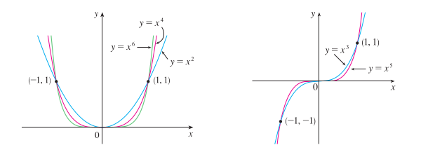
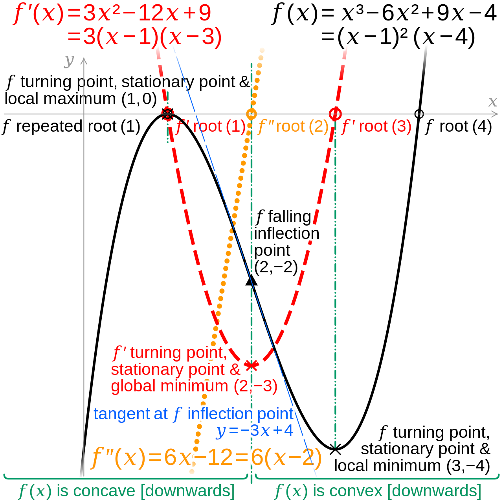
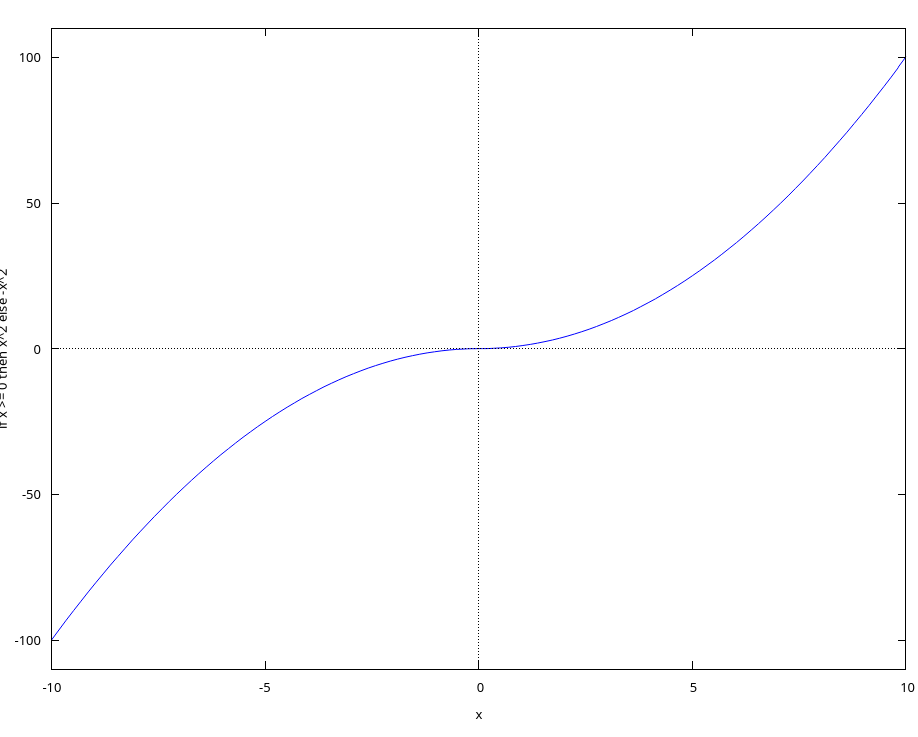
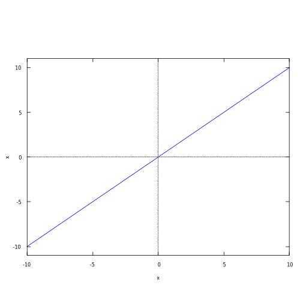
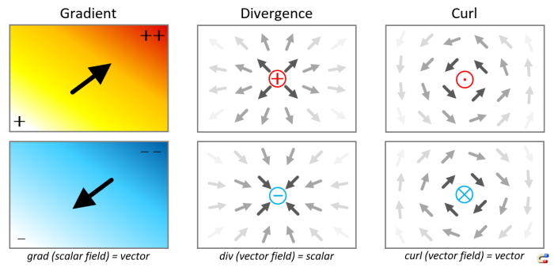
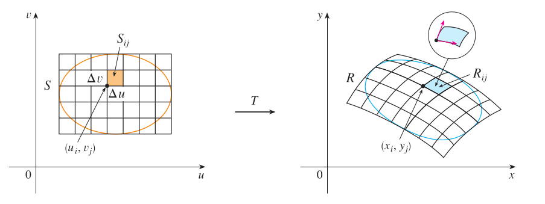
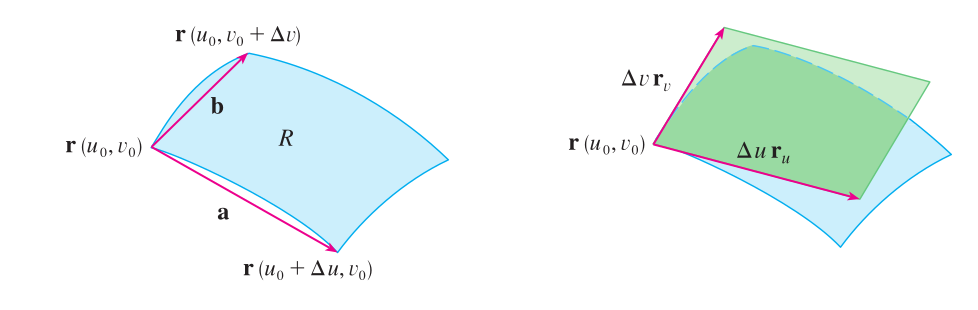

Learning Calculus Early Transcendentals 8th 的阅读草稿纸
Table of Contents
- 1. Ch 1: 函数与模型 (Functions and Models)
- 2. Ch 2: 极限与导数 (Limits and Derivatives)
- 3. 读后感: 导数近似
- 4. 读后感: 解读一元标量值函数的图像
- 5. Ch 3: 微分法 (Differentiation Rules)
- 6. Ch 4: 微分应用 (Applications of Differentiation)
- 7. Ch 5: 积分 (Integrals)
- 8. Ch 6: 积分应用 (Applications of Integration)
- 9. Ch 7: 积分技巧 (Techniques of Integration)
- 10. Ch 8: 进一步的积分应用 (Further Applications of Integration)
- 11. Ch 9: 微分方程 (Differential Equations)
- 12. Ch 10: 参数方程和极坐标 (Parametric Equations and Polar Coordinates)
- 13. Ch 11: 无穷序列和无穷级数 (Infinite Sequences and Series)
- 14. 读后感: 傅立叶变换 (Fourier Transform)
- 15. Ch 12: 向量和几何形状 (Vectors and the Geometry Shape)
- 16. Ch 13: 向量值函数 (Vector Functions)
- 17. Ch 14: 偏导数 (Partial Derivatives)
- 18. Ch 15: 多重积分 (Multiple Integrals)
- 19. Ch 16: 向量微积分 (Vector Calculus)
- 20. 读后感: 多元标量值函数的导数近似
- 21. 读后感: 解读多元标量值函数的图像
这份文档用来整理阅读 Learning Calculus Early Transcendentals 8th 时的笔记并且标出相关知识点的页码.
笔记内容主要是个人对一些概念的再理解以及对一些证明过程补充缺漏的细节, 这不是一下子就能完成的.
和以往写的笔记不同, 该文档更像是用来整理思绪的草稿纸, 不过到了最后这份草稿会成为一份正式的微积分词典.
写作会分为两个阶段, 第一阶段对应对书本通读的记录, 数学定理和定义是对某种思想的数学化表述,
这样虽然可以消除歧义, 但是会把原本内容抽离掉导致难以理解, 要明白定理和定义在说什么需要找出它们最初的思想,
笔记的内容主要就是这方面, 如果你看这些内容觉得啰嗦, 那应该感叹三两句的数学定理和定义居然包含了这么多内容,
这个阶段的内容会经常修改, 而且不保证准确性, 所以会显得比较混乱.
第二阶段对应第一阶段内容的重构, 这个阶段会逐渐脱离书本的结构, 还会包含很多书本上没有的内容.
微积分在很多方面都有应用, 甚至在数学的其它分支上也有着十分重要的作用, 比如概率论.
不懂微积分的话就没办法玩转计算机图形学, 数值分析, 图像处理, 流体模拟这几个方向.
本人学习微积分的目标很明确, 就是为了图形学(刚好图形学也需要概率论),
所以笔记中的部分内容会经常和几何进行联系.
微积分的知识点很多, 根据研究对象的不同可以这么进行分类:
一元标量值函数的微分和积分
一元标量值函数的微积分是其它研究对象的微积分基础,
一元标量值函数的图像是平面曲线, 所以一元标量值函数的微积分主要是研究平面曲线.
标量值函数也叫做标量场(scalar field), 意思是把空间位置映射在标量上.
一元向量值函数的微分和积分
一元向量值函数的函数图像也是曲线, 但并不限于平面曲线, 可以是任何维度的曲线.
如果一元向量值函数的输出维度是二维, 那么一元向量值函数就是一元标量值函数的参数方程形式.
所以一元向量值函数的微积分主要是研究任意维度的曲线.
向量值函数也叫做向量场(vector field), 意思是把空间位置映射在向量上.
多元标量值函数的微和积分
二元标量值函数的函数图像是三维空间中的曲面, 高于二元以上的函数图像就是更高维度的几何体了,
当然多出来的分量可以通过坐标系以外的信息进行表示.
多元标量值函数的微积分主要研究曲面相关特性.
多元向量值函数的微分和积分
多元向量值函数的函数图像是流形(manifold), 包括一维曲线, 二维曲面, 三维流形, 如此类推.
多元向量值函数的微积分主要研究矢量变化和场的性质, 在流体模拟中有着重要应用.
- 无穷序列和级数
- 微分方程
微积分很多知识点需要数形结合才能更好理解, 比如函数连续的几何意义, 不同类型的函数所对应的函数图像如何,
函数相应特征在不同情况下所对应的几何表象如何.
然而, 同一个概念在不同对象上有着不同的几何含义, 这就是为什么要进行分类.
我会在一些笔记附上 Maxima 的代码, 学习微积分最好掌握一款 CAS 用于画图以及计算是很有必要的, 学习 Maxima 的话推荐这本书 Mathematics for Engineers and Science Labs Using Maxima.
最后, 是关于是否要做习题的问题, 个人的观点是有时间就做, 因为有些习题会介绍新定理, 对于拓展视野还是不错的.
这本书其实是有 答案本 的, 可以在网络上找的到, 所以不用担心解不出来, 或者说不知道自己的答案是否正确.
我个人的做题策略是, 如果对题目没有解决思路就直接抄答案, 但要求理解其思路;
即便是已经解决出来了, 也不妨碍看别人的解决思路, 学习多样的解决思路, 找出不同思路之间的联系是数学的灵魂, 正如不同的数学分支之间的联系一样.
1. Ch 1: 函数与模型 (Functions and Models)
这个章节里面的函数统指一元函数: \(y = f(x)\), 也就是说只有一个自变量(independent variable).
需要注意的是 \(f(x)\) 既可以表示函数, 也可以表示函数 \(f\) 在 \(x\) 上的值, 通常在描述函数定义时才用 \(f(x)\) 这种表示法,
比方说, "函数 \(f(x) = \log_{b}^{a}\) 是对数函数", 此时 \(f(x)\) 表示函数;
"对于 \(x \in \mathbb{R}\), \(f(x)\) < M", 此时 \(f(x)\) 表示值.
有时候甚至有这种表示 \(f = f(x)\), 此时 \(f\) 既可以表示函数, 也可以表示函数 \(f\) 在变量 \(x\) 上的值.
总之具体含义需要根据上下文来区分.
- P10, 函数的定义
- P15, 垂直线测试 (The Vertical Line Test): 检测图像是不是函数的图像.
- P15, 分段函数(Piecewise Defined Functions)
P17, 奇偶函数(odd functions and even functions), 函数的性质之一 - 函数的对称性(Symmetry)
当谈及函数的奇偶性时, 就是讨论函数是奇函数还是偶函数, 还是说非奇非偶函数.
而奇偶性是对称性的一种特殊情况, 如果一个函数是奇函数, 那么它的函数图像是关于原点对称;
如果是偶函数, 那么它的函数图像就是关于 \(y\) 轴对称.
P18, 增函数/减函数, 函数的性质之一 - 函数单调性(Inceasing and Decreasing Functions)
当谈及函数的单调性时, 就是讨论函数某个定义域区间上是增函数还是减函数.
- 根据数学模型进行分类的函数类型:
- P24, 线性函数(Linear functions)
- P27, 多项式(Polynomials)
P29, 幂函数(Power Functions)
根据幂函数的指数取值范围不一样, 幂函数可以细分为三类函数,
N次函数, 根函数(Root functions)和倒数函数(Reciprocal functions).在实际工程中, 指数 \(a\) 有可能为大于 1 或者 小于 -1 的小数(floating number/decimal number), \(f(x) = x^a\) 的函数图像大约就是 \(f(x) = x^{int(a)}\) 函数图像的第一象限.
- P30, 有理数函数(Rational Functions)
P30, 代数函数(Algebraic Functions), 多项式函数和有理数函数本身就是代数函数的特例
代数函数是使用代数运算(加/减/乘/除/指数)构建而成的函数.
P31, 三角函数(Trigonometric Functions), 所有三角函数都是周期函数(periodic functions), 周期性是函数的性质之一
当讨论函数的周期性时, 就是在讨论函数是否具备周期性, 具备的话周期是多少.
- P32, 指数函数(Exponential Functions), 计算方面参考 P47.
- P32, 对数函数(Logarithmic Functions), 计算方面参考 P60
P37, 函数变换(Transformations of Functions), 对原函数进行平移(translate)/拉伸(stretching)/收缩(shrinking)/反射(reflecting)来获得新函数
书本上有一些东西没有提到: 可以对一个函数进行多个不同类型的变换, 混合使用不同的变换需要注意变换的应用顺序.
实际上需要注意的只有是缩放(包括拉伸/收缩)与其它变换的混合.
对于函数 \(y = f(x)\) 的图像进行变换时, 可以分为针对 \(y\) 还是针对 \(x\) 进行变换.
比如 \(y = x^{2} + 10\) 的函数图像是 \(y = x^{2}\) 在 \(y\) 轴方向上往上平移 10 个单位,
\(y = 2 \times x^{2}\) 的函数图像是 \(y = x^{2}\) 在 \(y\) 轴方向上放大 2 倍,
\(y = 2 \times x^{2} + 10\) 的函数图像是 \(y = x^{2}\) 在 \(y\) 轴方向上平移 10 个单位再放大 2 倍, 或者说先在 \(y\) 轴方向上放大 2 倍再平移 10 个单位.
再看针对 \(x\) 的变换,
\(y = (x + 10)^{2}\) 的函数图像是 \(y = x^{2}\) 在 \(x\) 轴方向上往左平移 10 个单位,
\(y = (2 \times x)^{2}\) 的函数图像是 \(y = x^{2}\) 在 \(x\) 轴方向上缩小为 \(\frac{1}{2}\),
\(y = (2 \times x + 10)^{2}\) 的函数图像是 \(y = x^{2}\) 在 \(x\) 轴方向上缩小为 \(\frac{1}{2}\) 再向左平移 \(\frac{1}{2} \times 10\) 个单位, 或者说在 \(x\) 轴方向往左平移 \(\frac{1}{2} \times 10\) 个单位再缩小为原来的 \(\frac{1}{2}\).
针对 \(x\) 的变换最好把 \(x\) 的系数变成 1: \(y = (2 \times (x + 5))^{2}\), 这样更加容易看出平移的大小.
另外, 说到变换, 那就不得不提线性代数了.
这里先把需要进行变换的函数称为原函数 \(f(x_{f})\), 变换得到的函数称为新函数 \(g(x_{g})\).
对 \(f(x_{f})\) 的图像进行变换实际上就是对 \((x_{f}, f(x_{f}))\) 进行变换得到 \((x_{g}, f(x_{g}))\).
但是多了一个限制, 那就是对 \(x_{f}\) 进行变换时需要注意一点: \(f(x_f)\) 的值取决于 \(x_f\),
这可能和想象中那样 "直接对 \(P: (x, y)\) 的 \(x\) 分量加上 \(d\) 就能在不影响 \(f(x)\) 的情况下往 \(x\) 轴的正方向平移 \(d\) 个单位" 有一定出入.
我们会使用参数方程(P640: parametric equations)来实现, 在平面坐标中, \(y = f(x)\) 中的 \(x\) 和 \(y\) 是两个关于同一个变量 \(t\) 的函数, 变量 \(t\) 被称为参数(parameter).
\(\begin{equation*}\left\{ \begin{aligned} x &= h(t) \\ y &= g(t) \end{aligned} \right.\end{equation*}\) 最简单的可以改成这种形式: \(\begin{equation*}\left\{ \begin{aligned} x &= x \\ y &= f(x) \end{aligned} \right.\end{equation*}\).
只要针对这个最简单的参数方程进行变换, 就可以得出接下来的各种变换参数方程.
原方程为 \(y_{f} = f(x_{f})\), 变换后的方程为 \(y_{g} = g(x_{g})\).
平移:
\(\left(\begin{array}{c}x_{g} \\ g(x_{g}) \\ 1\end{array}\right) = \left(\begin{array}{c} 1 & 0 & -h \\ 0 & 1 & v \\ 0 & 0 & 1 \end{array}\right) \left(\begin{array}{c} x_{f} \\ f(x_{f}) \\ 1 \end{array}\right) \Rightarrow \begin{equation*}\left\{ \begin{aligned} x_{g} &= x_{f} - h \\ g(x_{g}) &= f(x_{f}) + v \end{aligned} \right.\end{equation*}\)
f(x) := x / 4 * sin(x); gx(x) := x - 10; gy(x) := f(x) + 10; /* 向左平移 10 个单位, 向上移动 10 个单位, 对比 g(x) := f(x-10) + 10, 平移的方向是相反的 */ plot2d( [ f(x), f(x-10) + 10, [ parametric, gx(x), gy(x), [ 'x, -100, 100 ] ] ], ['x, -100, 100] );
可以发现换成参数方程后, 可以在不影响 \(y\) 的情况下对 \(x\) 进行变换了, 因此某种意义上参数方程更容易控制.
伸缩:
\(\left(\begin{array}{c}x_{g} \\ g(x_{g})\end{array}\right) = \left(\begin{array}{c} \frac{1}{s_{x}} & 0 \\ 0 & s_{y} \end{array}\right) \left(\begin{array}{c} x_{f} \\ f(x_{f}) \end{array}\right)\), \(s_{x} > 0, s_{y} > 0 \Rightarrow \begin{equation*}\left\{ \begin{aligned} x_{g} &= \frac{x_{f}}{s_{x}} \\ g(x_{g}) &= s_{y}f(x_{f}) \end{aligned} \right.\end{equation*}\)
f(x) := x / 4 * sin(x); gx(x) := x * 2; gy(x) := f(x) / 10; /* 水平方向上放大 2 倍, 垂直向上缩小 10 倍 */ plot2d( [ f(x), [ parametric, gx(x), gy(x), [ 'x, -100, 100 ] ] ], ['x, -100, 100] );
反射:
\(\left(\begin{array}{c}x_{g} \\ g(x_{g})\end{array}\right) = \left(\begin{array}{c} r_{x} & 0 \\ 0 & r_{y} \end{array}\right) \left(\begin{array}{c} x_{f} \\ f(x_{f}) \end{array}\right)\), \(r_{x} = \pm{1}, r_{y} = \pm{1} \Rightarrow \begin{equation*}\left\{ \begin{aligned} x_{g} &= r_{x}x_{f} \\ g(x_{g}) &= r_{y}f(x_{f}) \end{aligned} \right.\end{equation*}\)
f(x) := x / 4 * sin(x); gx(x) := x; gy(x) := -f(x); /* 围绕 x 轴反射 */ plot2d( [ f(x), [ parametric, gx(x), gy(x), [ 'x, -100, 100 ] ] ], ['x, -100, 100] );
最后是书本上没有介绍过的变换, 旋转:
\(\left(\begin{array}{c}x_{g} \\ g(x_{g})\end{array}\right) = \left(\begin{array}{c} \cos\theta & -\sin\theta \\ \sin\theta & \cos\theta \end{array}\right) \left(\begin{array}{c} x_{f} \\ f(x_{f}) \end{array}\right) \Rightarrow \begin{equation*}\left\{ \begin{aligned} x_{g} &= x_{f}\cos\theta - f(x_{f})\sin\theta \\ g(x_{g}) &= x_{f}\sin\theta + f(x_{f})\cos\theta \end{aligned} \right.\end{equation*}\)
下面是旋转变换绘图的
Maxima代码:f(x) := x / 4 * sin(x); gx(x) := x * cos(%pi / 6) - f(x) * sin(%pi / 6); gy(x) := x * sin(%pi / 6) + f(x) * cos(%pi / 6); /* 旋转 %pi/6 */ plot2d( [ f(x), [ parametric, gx(x), gy(x), [ 'x, -100, 100 ] ] ], ['x, -100, 100] ); /* 旋转 %pi/6 + 向右平移10个单位, 要注意, 在参数方程中, 对 x 的参数方程 +10 才是往右平移 */ plot2d( [ f(x), [ parametric, gx(x)+10, gy(x), [ 'x, -100, 100 ] ] ], ['x, -100, 100] ); /* 旋转 %pi/6 + 向上平移10个单位 */ plot2d( [ f(x), [ parametric, gx(x), gy(x)+10, [ 'x, -100, 100 ] ] ], ['x, -100, 100] ); /* 旋转 %pi/6 + 向右平移10个单位 + 在水平方向放大 10 倍, 要注意, 在参数方程中, 对 x 的参数方程 *10 才是放大 10 倍 */ plot2d( [ f(x), [ parametric, 10 * gx(x) + 100, gy(x), [ 'x, -100, 100 ] ] ], ['x, -100, 100] );
可以发现参数方程的变换要直观容易控制得多, 其它变换也可以参考这段代码来实现.
另外, 自己对比使用矩阵和直接对函数进行变换是相反的, 比如:
对函数 \(f(x)\) 进行往左平移两个单位: \(f(x + 2)\);
使用矩阵对函数往左平移两个单位: \(\left( \begin{array}{c} x - 2 \\ f(x) \end{array} \right)\);
前者是 \(x + 2\), 后者是 \(x - 2\).
因为准确来说, 矩阵是对点进行变换, 而不是对函数本身进行变换.
- P40, 函数组合(Combinations of Functions), 组合函数是各个子函数的定义域的交集
- P41, 复合函数(Composition functions), 函数组合的其中一种
- P42 EXAMPLE9, 分解函数(decompose a complicated function into simpler ones)
- P45, 指数函数详讲
- P55, 反函数(Inverse Functions)
- P56, 一对一函数(one-to-one function), 实际上也叫双射函数(Bijection function).
- P56, 水平线测试(Horizontal Line Test): 检测函数图像所对应的是不是一对一函数.
- P56, 反函数定义(只有一对一函数才有反函数).
- P57, 一个一对一函数与它的反函数组合而成的复合函数叫做取消方程(cancellation equations).
- P58, 如何找出一对一函数 \(f(x)\) 的反函数 \(f^{-1}(x)\).
P59, 反函数 \(f^{-1}(x)\) 的函数图像和原函数 \(f(x)\) 的函数图像围绕 \(y = x\) 对称,
也就是把函数 \(f(x)\) 对应的所有向量 \((x, y)\) "调转"为 \((y, x)\), 新向量构成的图像就是反函数的图像.
- P59, 对数函数详讲
P63, 反三角函数(Inverse Trigonometric Functions)
严格意义上来说, 三角函数并不是一对一函数, 因此三角函数是不存在反函数的, 所谓的反三角函数是把定义域限定在一个周期内的.
2. Ch 2: 极限与导数 (Limits and Derivatives)
研究变化的数学工具.
- P78, 切线问题
- P78, 切线(tangent)定义: 只曲线接触一次的直线, 并且该直线与接触点位置的曲线有着同样的方向. 切线的定义不适用于复杂的曲线上.
- P78, 割线(a secant line)定义: 与曲线有多个接触点的直线.
- P79, 如何通过聚收割线的 \(P\) 之外的其它接触点到 \(P\) 上来, 找出在 \(P\) 点附近的极限值.
- P80, 瞬时速度问题.
- P83, 极限的直观定义(Intuitive Definition of a Limit).
- P88, 单侧极限 (One-Sided Limits): 左侧极限和右侧极限.
- P89, 无限极限的直观定义(Intuitive Definition of an Infinite Limit): 极限值为无穷大/小.
- P91, 垂直渐进线(vertical asymptote).
- P95, 使用极限定律(Limit Laws)计算极限(共11条): 这些定律反应出极限运算符是一个线性函数.
P97, 直接代入原理(Direct Substitution Property)
如果函数 \(f\) 是多项式或者有理数, 并且 \(a\) 在 \(f\) 的定义域内, 那么 \(\lim\limits_{x \to a}f(x) = f(a)\).
这要求函数 \(f\) 在 \(a\) 上连续才可以应用.(后面会提到连续的概念).
如果函数 \(f\) 在 \(a\) 上没有定义, 但又想求出 \(f\) 在 \(a\) 上的极限, 那么可以找出一个函数 \(g\) 满足在 \(a\) 之外的定义域和 \(f\) 一致,
因为函数 \(g\) 和 \(f\) 在 \(a\) 点处的极限一致.
也就是说 当 \(x \ne a\) 时 \(f(x) = g(x)\), 那么 \(\lim\limits_{x \to a}f(x) = \lim\limits_{x \to a}g(x)\).
- p99, 判断极限是否存在的定理
P101, 判断两个函数之间的极限大小; 夹逼定理(Squeeze Theorem)/三文治定理(Sandwich Theorem)
这里有一个利用该定理求出 \(\lim\limits_{x \to 0}\frac{\sin(x)}{x} = 1\) 的 例子.
- 还有一个求极限的强大法则 - 洛必达法则.
- 使用
Maxima计算极限求 \(\lim\limits_{ x \to 0 }\frac{\sin(x)}{x}\)
limit(sin(x) / x, x, 0);
求 \(\lim\limits_{ x \to 0^{+} }\frac{\sin(x)}{x}\)
limit(sin(x) / x, x, 0, plus);
求 \(\lim\limits_{ x \to 0^{-} }\frac{\sin(x)}{x}\)
limit(sin(x) / x, x, 0, minus);
求 \(\lim\limits_{ x \to \infty^{+} }\frac{\sin(x)}{x}\)
limit(sin(x) / x, x, inf, plus);
求 \(\lim\limits_{ x \to \infty^{-} }\frac{\sin(x)}{x}\)
limit(sin(x) / x, x, inf, minus);
- P104, 极限的准确定义
- P106, 极限的准确定义
- P109, 单侧极限的准确定义
- P112, 无限极限的准确定义
- P114, 函数的连续性
p115, 函数连续性的定义
相对于极限定义, 函数连续性只是比它多了一个条件 \(\lim\limits_{x \to a}f(x) = L = f(a)\),
如果 \(f(a)\) 存在值, 那么说明 \(f(x)\) 在 \(a\) 上是有定义的, 并且 \(\lim\limits_{x \to a}f(x)\) 和 \(f(a)\) 一样,
那就说明函数图像在 \(x = a\) 上是连续的. 具体可以参考
P84 的 FIGURE 2, 图中的(b)和 (c) 就是不满足这个条件.直观上来说, 当输入值的变化足够小, 而输出值的变化也随之足够小的函数就是连续函数.
如果输入值的变化小, 但输出值的变化大, 那么函数图像就会出现缺口, 视觉上不连续.
总的来说, 要判断函数 \(f\) 在 \(a\) 点上是否连续, \(f\) 要满足以下三个条件:
- \(a\) 在函数 \(f\) 的定义域内 (像 \([0, a)\) 这种以 \(a\) 作为开区间边界就是不符合条件的了)
- \(\lim\limits_{x \to a}f(x)\) 存在
\(\lim\limits_{x \to a}f(x) = f(a)\)
前面两个条件是隐含条件, 第三条件达到了就表示前两个满足了.
连续的一大特点是无穷, 比如说可以从区间 \([0, 1]\) 上取到无穷个值: 取 \(0.9, 0.99, 0.999, \dots\), 我们就称该区间是连续的.
与连续相对的概念是离散, 它的特点是有穷, 比如说有一个序列: \(0.1, 0.2, 0.3, 0.4, 0.5, 0.6, 0.7, 0.8, 0.9, 1\), 我们就称该序列就是离散的.
在一开始的数学里, 是不存在处理连续对象方法, 数学家为了研究连续对象只能找一个与之近似的对象(在计算上有时候会通过离散方法来得到该对象), 近似对象是极限的结果, 最后把对近似对象研究得到的性质过渡(类比)到连续对象上.
所以说, 极限是连续的退而求其次, 这个思想贯穿了整个微积分.
- P116, 单侧连续的定义
P117, 如果函数在区间内的每个数都连续, 那么函数就是在该区间上连续;
如果函数只定义在该区间的其中一个端点, 那么该函数就只是在端点上连续.
- P117, 把连续函数组合成复杂连续函数的定理.
- P118, 两条定理
- 任何多项式都是在任何点上连续, 也就是在 \({\mathbb R} \in (-\infty, +\infty)\) 区间内连续.
- 任何有理函数在它的定义域上连续.
- P120, 两条定理
多项式/有理函数/根函数/三角函数/反三角函数/指数函数/对数函数这 7 种函数在它们的定义域内每一个数上连续.由存在一个若干个的它们作为子函数组合得到一个函数 \(f\), \(f\) 就在它的定义域内(各个子函数的定义域的交集)的每一个数上连续.
如果函数 \(f\) 在 \(b\) 上连续并且 \(\lim\limits_{x \to a}g(x) = b\), 那么 \(\lim\limits_{x \to a}f(g(x)) = f(b)\).
换句话就是 \(\lim\limits_{x \to a}f(g(x)) = f(\lim\limits_{x \to a}g(x))\).
- P121, 复合函数的连续: 如果函数 \(g\) 在 \(a\) 上连续, 并且 \(f\) 在 \(g(a)\) 连续, 那么复合函数 \((f \circ g)(x) = f(g(x))\) 在 \(a\) 上同样连续.
P122, 中间值定理(The Intermediate Value Theorem)
如果函数 \(f\) 在闭区间 \(\left[ a, b \right]\) 上连续, 并假设 \(N\) 满足 \(f(a) \lt N \lt f(b)\), 且 \(f(a) \ne f(b)\).
那么存在一个值 \(c\) 在 \(\left(a, b\right)\) 上使得 \(f(c) = N\).
该定理只适用于连续的函数.
常用使用场景是用来找出函数的根, 也就是 \(f(x) = 0\) 时, \(x\) 在什么范围.
- P126, 趋近于无穷时的极限, 水平渐近线 (Limits at infinity, horizontal Asynmptotes)
- P127, 趋近于无限时的极限的直观定义: 当 \(x\) 足够大时, \(f(x)\) 无限接近于 \(L\), 也就是 \(\lim\limits_{x \to \infty}f(x) = L\).
- P128, 第二条直观定义: 当 \(x\) 足够小时, \(f(x)\) 无限接近于 \(L\), 也就是 \(\lim\limits_{x \to -\infty}f(x) = L\).
- P128, 水平渐近线的定义: 如果曲线 \(y = f(x)\) 只满足 \(\lim\limits_{x \to \infty}f(x) = L\) 或 \(\lim\limits_{x \to -\infty}f(x) = L\), 那么 \(y = L\) 就是曲线 \(y = f(x)\) 的水平渐近线.
- P129, 定理: 如果 \(r \lt 0\) 是个有理数, 那么 \(\lim\limits_{x \to \infty}\frac{1}{x^{r}} = 0\); 如果 \(r \gt 0\) 是个有理数使得 \(x^{r}\) 在所有 \(x\) 上都有定义, 那么 \(\lim\limits_{x \to -\infty}\frac{1}{x^{r}} = 0\).
- P132, 趋近于无穷的无穷极限的直观定义 (Infinite Limits at Infinity).
- P134, 趋近于无限时的极限的精确定义(正无穷)
- P135, 趋近于无限时的极限的精确定义(负无穷)
- P137, 趋近于无穷的无穷极限的精确定义
- P140, 导数和变化率 (Derivatives and Rates of Change)
- P140, 切线的直观定义
P141, 切线(tangent line)的定义;
曲线在某个点上的斜率就是切线在该曲线该点上的斜率.
- P142, 切线斜率以及瞬时速度(instantaneous velocity)
P144, 导数(derivatives)定义
导数的两种解释:
在几何上, 导数 \(f^{'}(a)\) 是 \(y = f(x)\) 在 \((a, f(a))\) 处切线的斜率.
根据点斜式定义: \(y - y_0 = k(x - x_0)\), 在点 \((a, f(a))\) 上的切线等式为 \(y - f(a) = f^{'}(a)(x - a)\).
根据斜截式定义: \(y = kx + b\), \(y = f^{'}(a)x - f^{'}(a)a + f(a) \rightarrow \begin{cases} k = f^{'}(a) \\ b = - f^{'}(a)a + f(a) \end{cases}\).
- 导数 \(f^{'}(a)\) 是 \(y = f(x)\) 在 \(x = a\) 处所对应的 \(y\) 的即时变化率.
P152, 把导数作为一个函数 (The Derivative as a Function)
函数 \(f^{'}\) 的定义域是 \(\{ x | f^{'}(x)\ 存在 \}\), 可能会比 \(f\) 的定义域要小
155, 微分运算符(differentiation operators): \(\mathrm{D}\) 以及 \(\mathrm{d}/\mathrm{d}x\),
之所以叫做微分运算符是表明在计算导数过程中的微分运算, 实际上微分运算符是一个用于计算函数导数的运算符, 所以可以用来表示函数 \(y = f(x)\) 的导数:
\(f^{'}(x) = y^{'} = \frac{\mathrm{d}y}{\mathrm{d}x} = \frac{\mathrm{d}f}{\mathrm{d}x} = \frac{\mathrm{d}}{\mathrm{d}x}f(x) = \mathrm{D}f(x) = \mathrm{D}_{x}f(x)\).
需要注意 \(\frac{\mathrm{d}y}{\mathrm{d}x}\) 是一个运算符, 由 莱布尼茨 (Leibniz) 引入的, 不能把这个符号看作一个 \(\mathrm{d}y\) 作分子 \(\mathrm{d}x\) 作分母的分数,
准确来说, 是 不能完全 这么看, 因为在看作分数时, 它和真正的分数在性质上会有一些差别. 所以, 看作分数时, 这个符号和导数的直观定义非常接近;
可以改写成莱布尼茨表示法: \(\frac{\mathrm{d}y}{\mathrm{d}x} = \lim\limits_{x \to 0} \frac{\Delta y}{\Delta x}\).
P155, 定义: 如果 \(f^{'}(a)\) 存在, 那么就说函数 \(f\) 在 \(a\) 处可微(differentiable).
对于函数 \(y = f(x)\) 而言, 在 \(a\) 处可微表示一定存在导数, 在 \((a, f(a))\) 上存在切线.
可微的定义是函数在某点上的增量 \(\Delta y\) 可以表示为与自变量增量 \(\Delta x\) 的线性关系加误差 \(\epsilon\) 之和:
\(f(x + \Delta x) - f(x) = \Delta y = K \Delta x + \epsilon\), \(\Delta x \to 0\), 或者写作 \(\lim\limits_{\Delta x \to 0} \Delta y = \lim\limits_{\Delta x \to 0}(K \Delta x + \epsilon)\).
该等式其实是逼近法求切线的数学描述, 其中 \(K\) 是一个常量, \(\Delta y = K \Delta x\) 是函数 \(f(x)\) 在 \((x, y)\) 上的切线,
\(\epsilon\) 是函数与切线之间的误差, 这个误差会随 \(\Delta x \to 0\) 而趋向于 0, 换而言之, \(\epsilon\) 是一个以 \(\Delta x\) 为参数的函数.
并且 \(\epsilon\) 比起线性变化的 \(\Delta x\) 更快趋于 0, 这确保了 \(K \Delta x\) 是整个多项式中的最高次项,
而\(\epsilon\) 的大小在等式中无关要紧, 从而保证了等式的唯一性.
这种 \(A\) 比 \(B\) 更快趋向于 0 的情况, 会把 \(A\) 称作 \(B\) 的 高阶无穷小量 (
infinitesimal of higher order),记作 \(A = o(B)\), 可用等式 \(\lim\limits_{x \to a}\frac{A(x)}{B(x)} = 0\) 表示.
\(\Delta x\) 可看作是一个线性函数 \(l(\Delta x) = \Delta x\) , 所以 \(\lim\limits_{\Delta x \to 0}\frac{\epsilon}{\Delta x} = 0\).
现在可以对可微的定义进行变换得出以下关系:
\(\frac{\epsilon}{\Delta x} = \frac{\Delta y}{\Delta x} - K\), \(\Delta x \to 0\)
\(\lim\limits_{\Delta x \to 0} \frac{\epsilon}{\Delta x} = \lim\limits_{\Delta x \to 0}(\frac{\Delta y}{\Delta x} - K) = \lim\limits_{\Delta x \to 0}\frac{\Delta y}{\Delta x} - \lim\limits_{\Delta x \to 0} K = \lim\limits_{\Delta x \to 0}\frac{\Delta y}{\Delta x} - K\)
\(0 = f^{'}(x) - K \Rightarrow K = f^{'}(x)\)
这透露出可微的定义等价于导数的定义. 在后面会学到线性近似这个概念, 实际上可微, 导数存在和可线性近似都是同一个意思.
同时也包含了连续的特性: 函数输入发生微小的变化, 输出也发生微小的变化.
如果函数 \(f\) 在开区间 \(\left(a, b\right)\) / \(\left(a, \infty\right)\) / \(\left(-\infty, a\right)\) / \(\left(-\infty, \infty\right)\) 上可微, 那么它的意思就是在区间上的任意一个点上可微.
通过计算 \(f^{'}(a)\) 是否存在来判断 \(f\) 是否在 \(a\) 上可微.
直觉上判断一个函数在某个点上是否可微只需要观察该点附近的函数图像是否光滑, 或者说能否找到唯一的切线.
举个例子, \(y = |x|\) 在 \(x = 0\) 处不可微, 按照可微的定义, 它的 \(K\) 部分不唯一:
当 \(x \gt 0\) 时, \(k \gt 0\); 当 \(x \lt 0\) 时, \(k \lt 0\).
需要注意的是, 国内把可微翻译成可导还做了区分: 文档: 可导还是可微.
这个区分是因一元函数和多元函数的不同产生的, 也不能说完全错, 个人感觉没必要.
总而言之, 现在可以看到, 这两者完完全全是同一个东西.
还有你可能会有一个疑问: 为什么是在开区间上可微呢?
因为只有 \(x = c\) 的左侧导数和右导数相等才能说在 \(x = c\) 上有导数,
而边界只有一个单侧导数, 没办法确认边界的导数, 所以就不讨论边界的导数.
P157, 定理: 如果函数 \(y = f(x)\) 在 \(a\) 处可微, 那么函数在 \(a\) 处连续.
注意, 反过来不对: 函数 \(f(x)\) 在 \(a\) 处连续并不代表函数在 \(a\) 处可微.
比如 \(f(x) = |x|\) 就是在 0 处连续, 但在 0 处不可微(不存在导数).
其实不用记忆这一个关系, 只要分别从连续以及可微的定义去分析即可, 就以 \(|x|\) 为例子:
\(f(x)\) 在 \(x = 0\) 连续表示函数 \(|x|\) 在 \(0\) 上存在定义, \(\lim\limits_{x \to 0}|x|\) 存在并且 \(\lim\limits_{x \to 0}|x| = 0\), 条件都符合所以 \(|x|\) 在 0 处连续;
换成导数的定义, 假设可微, 就表示 \(\lim\limits_{h \to 0}\frac{|x + h| - |x|}{h}\) 在 \(x = 0\) 时存在, 但当 \(x = 0\) 时, \(h = 0\), 所以假设不成立, \(|x|\) 在 0 处不可微.
不过, 倒是可以说可微则一定存在极限, 但这毫无意义.
P158, \(y = f(x)\) 在点 \(a\) 上不可微的三种情况在图像上的表现
在代数方面来看, \(y = f(x)\) 在 \(a\) 上不连续实际上就是 \(\lim\limits_{x \to a+}\frac{f(x) - f(a)}{x - a} \ne \lim\limits_{x \to a-}\frac{f(x) - f(a)}{x - a}\).
P158, 高阶导数 (Higher Derivatives)
导数 \(f^{'}\) 本身就是一个函数, 作为函数, 它也可能有自己的导数 \(f^{''} = (f^{'})^{'}\), \(f^{''}\) 被称为函数 \(f\) 的二阶导数(the second derivative).
使用莱布尼茨表示法就是: \(\frac{d}{\mathrm{d}x} (\frac{\mathrm{d}y}{\mathrm{d}x}) = \frac{\mathrm{d}^{2}y}{\mathrm{d}x^{2}}\).
二阶导数在 \(v = \frac{s}{t}\) 的关系里面表示加速度(acceleration).
还可以接着求出二阶导数的导数, 叫做三级导数(the third derivative): \(y^{'''} = f^{'''}(x) = \frac{\mathrm{d}}{\mathrm{d}x} (\frac{\mathrm{d}^{2}y}{\mathrm{d}x^{2}}) = \frac{\mathrm{d}^{3}y}{\mathrm{d}x^{3}}\).
三阶导数在 \(v = \frac{s}{t}\) 的关系里面表示加加速度(jerk), 表示加速度的变化率.
3. 读后感: 导数近似
在图形学里面导数近似很有用, 这里介绍如何求解一元标量值函数的常用导数近似.
我们所学的导数是基于极限进行定义的, 把极限符号去掉就是导数的近似了.
\(y = f(x)\) 在 \(a\) 上的一阶导数为 \(f^{'}(a) = \lim\limits_{x \to a} \frac{f(x) - f(a)}{x - a}\), 令 \(h = x - a\), \(\lim\limits_{h \to 0} \frac{f(a + h) - f(a)}{h}\).
根据一阶泰勒展开或线性近似(后面会说到), 可得 \(f^{'}_{f}(a) \approx \frac{f(a + h) - f(a)}{h}\), 这是向前差商近似,
还有向后差商近似 \(f^{'}_{b}(a) \approx \frac{f(a) - f(a - h)}{h}\). 为了准确性可以使用中心差商近似: \(f^{'}(a) \approx \frac{f(a + h) - f(a - h)}{2h}\).
中心差分近似实际上是前后差分两者的算术平均: \(f^{'}(a) \approx \frac{1}{2} (\frac{f(a + h) - f(a)}{h} + \frac{f(a) - f(a - h)}{h})\),
实际上这些结论都是通过泰勒展开式得到的:
首先有 \(\begin{cases} f(a + h) = f(a) + h f^{'}(a) + \frac{h^2}{2!} f^{''}(a) + \frac{h^3}{3!} f^{'''}(a) + \dots + \frac{h^n}{n!} f^{(n)}(a) \\ f(a - h) = f(a) - h f^{'}(a) + \frac{h^2}{2!} f^{''}(a) - \frac{h^3}{3!} f^{'''}(a) + \dots + \frac{h^n}{n!} f^{(n)}(a) \end{cases}\),
想要求一阶导数的近似, 可以把两个一阶展开多项式相减得到:
\(\begin{equation*} \begin{aligned} & f(a + h) - f(a - h) \\ = & f(a) + hf^{'}(a) - f(a) + hf^{'}(a) \\ = & 2h f^{'}(a) \\ \rightarrow & f^{'}(a) \approx \frac{f(a + h) - f(a - h)}{2h} \end{aligned} \end{equation*}\)
想要求二阶导数的近似, 可以把两个二阶展开多项式相加得到:
\(\begin{equation*} \begin{aligned} & f(a + h) + f(a - h) \\ = & f(a) + hf^{'}(a) + \frac{h^2}{2!}f^{''}(a) + f(a) - hf^{'}(a) + \frac{h^2}{2!}f^{''}(a) \\ = & 2 f(a) + h^2 f^{''}(a) \\ \rightarrow & f^{''}(a) \approx \frac{f(a + h) + f(a - h) - 2f(a)}{h^2} \end{aligned} \end{equation*}\)
想要求三阶导数的近似, 还需要 \(f(a + 2h)\) 和 \(f(a - 2h)\) 的展开,
因为仅靠 \(f(a + h)\) 和 \(f(a - h)\) 无法消去 \(f^{'''}(a)\) 以外导数项, 把两个三阶展开多项式相减去得到:
\(\begin{equation*} \begin{aligned} & f(a + h) - f(a - h) \\ = & f(a) + hf^{'}(a) + \frac{h^2}{2!}f^{''}(a) + \frac{h^3}{3!}f^{'''}(a) - f(a) + hf^{'}(a) - \frac{h^2}{2!}f^{''}(a) + \frac{h^3}{3!}f^{'''}(a) \\ = & 2h f^{'}(a) + \frac{h^3}{3} f^{'''}(a) \\ \rightarrow & f^{'''}(a) \approx \frac{3f(a + h) - 3f(a - h) - 6hf^{'}(a)}{h^3} \end{aligned} \end{equation*}\)
可以发现最终结果保留了 \(f^{'}(a)\) 和 \(f^{'''}(a)\) 项, 这就是为啥需要额外的方程组了:
\(\begin{cases} f(a + 2h) = f(a) + 2h f^{'}(a) + \frac{(2h)^2}{2!} f^{''}(a) + \frac{(2h)^3}{3!} f^{'''}(a) + \dots + \frac{(2h)^n}{n!} f^{(n)}(a) \\ f(a - 2h) = f(a) - 2h f^{'}(a) + \frac{(2h)^2}{2!} f^{''}(a) - \frac{(2h)^3}{3!} f^{'''}(a) + \dots + \frac{(2h)^n}{n!} f^{(n)}(a) \end{cases}\)
同样 \(f(a + 2h) - f(a - 2h) = 4hf^{'}(a) + \frac{(2h)^3}{3} f^{'''}(a)\), 对 \(\begin{cases} 2h f^{'}(a) + \frac{h^3}{3} f^{'''}(a) \\ 4hf^{'}(a) + \frac{(2h)^3}{3} f^{'''}(a) \end{cases}\) 的 \(f^{'}(a)\) 进行消元得到:
\(\begin{equation*} \begin{aligned} & f(a + 2h) - f(a - 2h) - 2(f(a + h) - f(a - h)) \\ = & 2 h^3 f^{'''}(a) \rightarrow f^{'''}(a) \approx \frac{f(a + 2h) - f(a - 2h) - 2f(a + h) + 2f(a - h)}{2h^3} \end{aligned} \end{equation*}\)
也可以使用更高阶的泰勒展开式来近似低阶导数, 这样会让近似结果更准确,
但相比使用同阶展开式近似同阶导数而言, 计算复杂度更高.
这种近似也被称作有限微分形式(Finite Difference Form), 在图形学和流体模拟中计算导数有着重要作用.
4. 读后感: 解读一元标量值函数的图像
这一节其实就是 Ch4-3 的内容, 提前写这里的原因是在阅读时是突然冒出"是否可以通过导数来判断多项式的函数图像"的想法,
随后在网络上检索记录下来的, 但突然发现这些内容在书本上也有.
当然, Ch4-3 的一些内容这里没有涵盖到, 所以还是得读一下 Ch4-3.
在了解极限和导数后, 我们就可以通过多项式 \(f(x) = a_{n}x^{n} + a_{n-1}x^{n-1} + ... + a_{2}x^{2} + a_{1}x + a_{0}\) 描述出其函数的大概形状了.
多项式的图像全都是由两种基础图像变换过来的.

Figure 1: \(f(x) = x^{n}\) 的通用形状

Figure 2: 各种特别的点
因此,
- 应该关注最高次项的 \(n\) 和 \(a_{n}\), 通过 \(n\) 判断通用形状, 通过 \(a_{n}\) 判断通用图像是否为 \(|a_{n}|^{n}\) 的对称图;
从多项式的定义计算出它所有的零点 \((x, 0)\) (也就是函数的根), 这是为了判断函数图像在什么位置和 \(x\) 轴相交;
具体方法是设 \(f(x) = 0\), 求出所有的 \(x\).
如使用
Maxima可以使用allroots函数求出所有零点.eqn: (1 + 2*x)^3 = 13.5 * (1 + x^5)$ allroots(eqn)$
找出图像的所有极值点(
local maximum or local minimum)找出函数图像的所有极值点需要三步,
极值点有一个特征, 当 \((x, f(x))\) 为极值点时, 如果 \(f^{'}(x)\) 存在, 那么 \(f^{'}(x) = 0\),
且 \(x\) 两边的一阶导数必定有一正一负; 或者 \(f^{'}(x)\) 不存在,
具体例子可以参考 \(f(x) = |x|\), 当 \(x = 0\), \(f^{'}(x)\) 不存在, 但 \((0, f(0))\) 是极值点.
但注意, 反过来不成立, \(f^{'}(x) = 0\) 或 \(f^{'}(x)\) 不存在只是说明 \((x, f(x))\) 有可能 是极值点. 接下来主要讨论连续可微的情况.
第一步, 找出满足 \(f^{'}(x) = 0\) 的所有 \(x\),
我们把 \(f^{'}(x) = 0\) 的点叫做驻点/临界点/稳定点(stationary point/critical point/stable point), 正如前面说的, 驻点并不一定是极值点.
再按照从小到大的顺序排列计算得出的 \(x\), 两两形成区间:
\((x_{1}, x_{2})/(x_{2}, x_{3})/.../(x_{n - 1}, x_{n})\), 通过比较对应的 \(f(x_{i+1}) - f(x_i)\) 来判断在不同区间的单调性.
第二步，判定驻点两边的一阶导数是否一正一负,
如果二阶导数 \(f^{''}(x)\) 存在, 那么可以通过它完成判断, 因为二阶导数反应了曲线在某点上斜率的变化率, 因此,
如果 \(f^{''}(x) > 0\), 那么 \(f(x)\) 就是极小值; 如果 \(f^{''}(x) < 0\), 那么 \(f(x)\) 就是极大值; 其中 \(\epsilon\) 是 \(\Delta x\) 的 高阶无穷小量.
但是 \(f^{''}(x) = 0\) 的情况没法断定 \(f(x)\) 是否极值, 所以才有第三步.
第三步, 对第二步进行推广, 当 \(f^{'}(x) = f^{''}(x) = f^{(3)}(x) = \dots = f^{(n - 1)} = 0\) 且 \(f^{(n)} \ne 0\),
如果 \(n\) 是偶数, 且 \(f^{(n)}(x) \gt 0\), 那么 \(f(x)\) 为极小值, 若 \(f^{(n)} \lt 0\), 那么 \(f(x)\) 为极大值;
如果 \(n\) 是奇数, 那么 \(f(x)\) 不是极值. 当 \(n = 2\) 时就回到前面第二步的情况了.
该结论是通过泰勒展开式推导出来: \(f(x) = \sum\limits_{i = 0}^{n} \frac{f^{(i)}(x_0)}{i!}(x - x_0)^i\),
\(f^{'}(x) = f^{''}(x) = f^{(3)}(x) = \dots = f^{(n - 1)} = 0\) 意味着 \(f(x) = f(x_0) + \frac{f^{(n)}(x_0)}{n!}(x - x_0)^n \rightarrow f(x) - f(x_0) = \frac{f^{(n)}(x_0)}{n!}(x - x_0)^n\),
因为 \(n\) 为偶数, 所以不论 \(x\) 在 \(x_0\) 的左边还是右边, \((x - x_0)^n > 0\), \(f(x) - f(x_0)\) 的正负就取决于 \(\frac{f^{(n)}(x_0)}{n!}\),
在 \(x \in \left(x_0 - \epsilon_0, x_0\right) \cup \left(x_0, x_0 + \epsilon_0\right)\) 范围内, 不论是 \(x \lt x_0\) 还是 \(x \gt x_0\),
\(\frac{f^{(n)}(x_0)}{n!} = f(x) - f(x_0) > 0\) 意味着 \(f(x_0)\) 的两边都比 \(f(x_0)\) 要大, 所以 \(f(x_0)\) 是极小值;
同理 \(\frac{f^{(n)}(x_0)}{n!} = f(x) - f(x_0) < 0\) 意味着 \(f(x_0)\) 是极大值, 这也解释了第二步的结论.
当 \(n\) 为奇数, \((x - x_0)^{n}\) 有可能为负数,
如果 \(f^{(n)}(x_0) < 0\), 那么有两种可能:
\(x \in \left(x_0, x_0 + \epsilon_0\right) \rightarrow (x - x_0)^n > 0\) 且 \(f(x) - f(x_0) < 0\), 在 \(x_0\) 的右边呈递减关系;
\(x \in \left(x_0 - \epsilon_0, x_0\right) \rightarrow (x - x_0)^n < 0\) 且 \(f(x) - f(x_0) > 0\), 在 \(x_0\) 的左边呈递减关系, 综合来看不存在极值.
如果 \(f^{(n)}(x_0) > 0\), 同样有两种可能:
\(x \in \left(x_0, x_0 + \epsilon_0\right) \rightarrow (x - x_0)^n > 0\) 且 \(f(x) - f(x_0) > 0\), 在 \(x_0\) 的右边呈递增关系;
\(x \in \left(x_0 - \epsilon_0, x_0\right) \rightarrow (x - x_0)^n < 0\) 且 \(f(x) - f(x_0) < 0\), 在 \(x_0\) 的左边呈递增关系, 综合来看不存在极值.
也可以把 \((x - x_0)^n\) 看作是一个函数来进行讨论, 令 \(g(x) = (x - x_0)^n\), 得到 \(f(x) - f(x_0) = \frac{f^{(n)}(x_0)}{n!}g(x)\).
如果 \(n\) 为偶数, 那么 \(g(x)\) 是关于垂直线 \(u = x_0\) 对称的偶函数, 使得 \(f(x) - f(x_0)\) 的函数图像在整体上是一个抛物线,
\(x_0\) 两边的函数值 \(f(x)\) 要么都比 \(f(x_0)\) 大, 要么都比 \(f(x_0)\) 小, \(\frac{f^{(n)(x_0)}}{n!}\) 控制了该抛物线的开口方向,
因此 \(f(x_0)\) 是极值, 是极大值还是极小值取决于 \(\frac{f^{(n)(x_0)}}{n!}\) 的正负;
如果 \(n\) 为奇数, 那么 \(g\) 是一个关于点 \((x_0, 0)\) 对称的奇函数,
\(x_0\) 两边的函数值 \(g(x)\) 一边比 \(g(x_0)\) 大, 另一边比 \(g(x_0)\) 小, 因此 \(f(x_0)\) 不是极值.
这三个步骤也被称为极值的三个充分条件.
最后找出图像的拐点(P297: inflection point), 所谓的拐点就是曲线下凹和下凸两者的交接点.
一条曲线下凹还是下凸其实反应了切线在曲线上的斜率变化率, 也就是二阶导数 \(f^{''}(x)\).
交接点满足 \(f^{''}(x) = 0\) 并且该点两边斜率的变化率分别为一正一负(由正变负或由负变正).
也有可能出现某个点上的二阶导数不存在但两边变号的情况, 这种情况下该点也同样是拐点.
f(x) := if x >= 0 then x * x else -1 * x * x$ plot2d(f(x), [x, -10, 10])$

\(f = \begin{cases} -2x^2 & x \le 0 \\ 2x^2 & \gt 0 \end{cases}\) 在 \(x = 0\) 处不存在二阶导数, 甚至不存在一阶导数,
但是 \(x = 0\) 两边的二阶导数正好互为正负: \(f^{''}(x) = \begin{cases} -2 & x \lt 0 \\ \mathrm{undefined} & x = 0 \\ 2 & x \gt 0 \end{cases}\),
因此, \((0, f(0))\) 是 \(f\) 的拐点.
事实上 \(f^{''}(x) = 0\) 也不能就断定 \((x, f(x))\) 是拐点, 比如 \(f(x) = x \rightarrow f^{''}(x) = 0\)
f(x) := x$ plot2d(f(x), [x, -10, 10])$

很明显, 该函数并没有凹凸的特点, 即便存在二阶导数也不存在拐点.
如极值点那样, 拐点也需要满足三个充分条件. 由于第一充分条件已经讲过了, 这里直接从第二充分条件开始.
第二步, 当三阶导数 \(f^{'''}(x)\) 存在时, 如果 \(f^{'''}(x) \ne 0\), 那么 \((x, f(x))\) 就是拐点;
如果 \(f^{'''}(x) = 0\) 就需要进入第三步了.
第三步, 按照极值点的第三充分条件思路对 \(f^{''}(x)\) 进行泰勒展开:
\(f^{''}(x) = f^{''}(x_0) + f^{'''}(x_0)(x - x_0) + \dots + \frac{f^{(n)}(x_0)(x - x_0)^{n-2}}{(n - 2)!}\)
令 \(f^{''}(x_0) = f^{'''}(x_0) = \dots = f^{(n-1)}(x_0) = 0\) 且 \(f^{(n)}(x_0) \ne 0\), 其中 \(n \gt 3\), 可得:
\(f^{''}(x) - f^{''}(x_0) = \frac{f^{(n)}(x_0)}{(n - 2)!}(x - x_0)^{n-2} = f^{''}(x)\)
当 \(n\) 为偶数, \(n - 2\) 也是偶数, 因此 \((x - x_0)^{(n - 2)} \gt 0\), \(x \in (x_0 - \epsilon_0, x_0) \cup (x_0, x_0 + \epsilon_0)\),
如果 \(\frac{f^{(n)}(x_0)}{(n - 2)!} = f^{''}(x) \gt 0\) 或 \(\frac{f^{(n)}(x_0)}{(n - 2)!} = f^{''}(x) \lt 0\) 意味着 \(x_0\) 两边的二阶导数是同号的,
因此 \((x_0, f(x_0))\) 并非拐点;
当 \(n\) 为奇数, \(n - 2\) 也是奇数, 因此 \((x - x_0)^{(n - 2)}\) 可正可负,
如果 \(\frac{f^{(n)}(x_0)}{(n - 2)!} \gt 0\), 那么有两种可能:
\(x \in (x_0, x_0 + \epsilon_0) \rightarrow (x - x_0)^{(n - 2)} > 0 \rightarrow f^{''}(x) \gt 0\), \(x_0\) 右边的二阶导数为正数;
\(x \in (x_0 - \epsilon_0, x_0) \rightarrow (x - x_0)^{(n - 2)} < 0 \rightarrow f^{''}(x) \lt 0\), \(x_0\) 左边的二阶导数为负数, 综合来说 \((x_0, f(x_0))\) 是拐点.
如果 \(\frac{f^{(n)}(x_0)}{(n - 2)!} \lt 0\), 那么有两种可能:
\(x \in (x_0, x_0 + \epsilon_0) \rightarrow (x - x_0)^{(n - 2)} > 0 \rightarrow f^{''}(x) \lt 0\), \(x_0\) 右边的二阶导数为负数;
\(x \in (x_0 - \epsilon_0, x_0) \rightarrow (x - x_0)^{(n - 2)} < 0 \rightarrow f^{''}(x) \gt 0\), \(x_0\) 左边的二阶导数为正数, 综合来说 \((x_0, f(x_0))\) 是拐点.
5. Ch 3: 微分法 (Differentiation Rules)
介绍常用的求导方法, 提供这些方法的证明, 以及演示如何使用这些方法进行求导.
在读这一章的证明时, 如果遇到一些不能一眼看出推导结果的等式, 那意味着这些等式是被简化过的结果,
为了确保自己理解证明过程, 读者应动手对其推导补充被省略的过程, 这同时有助于读者熟练掌握求导的运算.
- P172, 求多项式以及指数函数的导数
- P172, 给常数求导
- P174, 幂法则(the power rule)
- P175, 常数倍率法则(the constant multiple rule)
- P176, 加法法则(the sum rule)
- P176, 减法法则(the difference rule)
- P177, 指数函数的导数
P179, \(\lim\limits_{h \to 0}\frac{b^{h} - 1}{h} = \lim\limits_{h \to 0}\frac{b^{(0 + h)} - b^{0}}{h} = f^{'}(0)\),
为了简化计算, 选取 \(b = e\), 使得 \(f^{'}(0) = 1\), \(e\) 是自然数.
- P179, 自然指数函数的导数为它自己本身: \(\frac{\mathrm{d}}{\mathrm{d}x}(e^{x}) = e^{x}\)
- P183, 乘法法则和除法法则 (The product and quotient rules)
- P184, 乘法法则 (The product rule)
- P185, 除法法则 (The quotient rule)
P190, 三角函数的导数 (Derivatives of Trigonometric Functions)
重点讲了 \(\sin(\theta)\) 的求导方法(\(\theta\) 要求弧度制), 另外\(\lim\limits_{\theta \to 0}\frac{\sin(\theta)}{\theta} = 1\) 的证明还有另外一种方法.
其他的三角函数也可以使用同样的思路.
P197, 链式法则 (The Chain Rule), 这一节非常重要
求复合函数的导数的方法:
\((f \circ g)^{'}(x) = f^{'}(g(x)) \cdot g^{'}(x)\).
或者使用莱布尼茨表示法, 让 \(y = f(u)\) 以及 \(u = g(x)\), \(\frac{\mathrm{d}y}{\mathrm{d}x} = \frac{\mathrm{d}y}{\mathrm{d}u}\frac{\mathrm{d}u}{\mathrm{d}x}\).
- P198, 幂函数和链式法则
- P203, 链式法则的证明
- P208, 隐式微分 (Implicit Differentiation)
P208, 隐式等式 (Implicit Equation)
形如 \(R(x_{1},\cdots,x_{n}) = 0\) 的等式就是隐式等式, 比如 \(x^{2} + y^{2} - 1 = 0\).
这种等式名字的由来是因为难以看出变量之间的关系.
但是如果改成 \(\sqrt{1 - x^{2}} = y\), 就变回熟悉的显式等式 (Explicit Equation), 一眼就可以看出 \(y\) 和 \(x\) 的关系.
- P209, 笛卡尔叶曲线 (folium of Descartes)
P209, 如何求解隐式等式中的 \(f(y) = y^{2}\), \(y\) 是关于 \(x\) 的函数 \(g(x)\).
\(y\) 是关于 \(x\) 的函数 \(g(x)\), 把隐式等式改写成 \(f(y) = y^{2} = g(x)^{2} = f(g(x))\).
可以利用链式法则求出 \(f^{'} = f^{'}(g(x))g^{'} = \frac{d}{\mathrm{d}y}(y^{2}) \times \frac{\mathrm{d}}{\mathrm{d}x}(y) = 2y\frac{\mathrm{d}y}{\mathrm{d}x}\).
- P213, 反三角函数的导数
- P217, LABOPATORY PROJECT: FAMILIES OF IMPLICIT CURVES
Maxima Code for \(y^{2} - 2x^{3}(x + 8) = c[(y + 1)^{2}(y + 9) - x^{2}]\)
e: y^2 - 2 * x^3 * (x + 8) = c * ((y + 1)^2 * (y + 9) - x^3)$ draw2d(grid = true, color=red, key="c=0", implicit(subst([c=0], e), x, -100, 100, y, -100, 100), color=blue, key="c=2", implicit(subst([c=2], e), x, -100, 100, y, -100, 100), color=green, key="c=5", implicit(subst([c=5], e), x, -100, 100, y, -100, 100), color=black, key="c=10", implicit(subst([c=10], e), x, -100, 100, y, -100, 100), color=purple, key="c=15", implicit(subst([c=12], e), x, -100, 100, y, -100, 100) );
Maxima Code for \(x^{2} + y^{2} + cx^{2}y^{2} = 1\)
/* 把 1 换成 20 以便观察图像 */ e: x^2 + y^2 + c * x^2 * y^2 = 20$ /* 求 f' */ depends(y, x); deriv_of_eqn: diff(e1, x); solve(deriv_of_eqn, 'diff(y, x)); /* 绘图 */ draw2d(grid = true, color=red, key="c=-1", implicit(subst([c=-1], e), x, -100, 100, y, -100, 100), color=blue, key="c=1", implicit(subst([c=1], e), x, -100, 100, y, -100, 100), color=green, key="c=2", implicit(subst([c=2], e), x, -100, 100, y, -100, 100), color=black, key="c=4", implicit(subst([c=4], e), x, -100, 100, y, -100, 100), color=purple, key="c=8", implicit(subst([c=8], e), x, -100, 100, y, -100, 100) );
- P218, 给对数函数求导
P218, \(f(x) = \log_{b}^{x}\) 的导数推导
令 \(y = f(x)\), 令 \(g(y) = b^{y} = x\), 对该等式的两边分别针对 \(x\) 求导数,
右边 \(x\) 的导数是 1, 左边是 \(b^{y} = b^{\log_{b}^{x}} = g(f(x))\) 是一个复合函数,
使用链式法则可以得到 \(g^{'}(f(x))f^{'}(x) = (b^{(y)}\ln b)\frac{\mathrm{d}y}{\mathrm{d}x}\), 所以 \(\frac{\mathrm{d}y}{\mathrm{d}x} = \frac{1}{b^{y}\ln b} = \frac{1}{x \ln b}\).
- P224, 自然数和社会科学中的变化率
P237, 指数增长和指数衰退 (Exponential Growth and Decay)
自然现象中的增长率和衰退率和规模成正比, 假设函数 \(y = f(t)\) 描述自然现象中的数量, \(t\) 为时间.
那么 \(y\) 的变化率为 \(\frac{\mathrm{d}y}{\mathrm{d}t} = ky\).
如果 \(k \gt 0\), 那么该等式被称为自然增长法则(law of natural growth);
如果 \(k \lt 0\), 那么该等式就被称为自然衰退法则(law of natural decay).
该等式被叫做微分方程, 因为该等式有一个未知的函数 \(y\), 该等式的导数是 \(\frac{\mathrm{d}y}{\mathrm{d}t}\).
P245, 相关变化率 (Related Rates)
介绍如何解决这一类的问题.
P251, 线性近似和微分 (Linear Approximations and Differentials)
线性近似也叫切线近似(tangent line approximation), 比如在 \(x = a\) 处找切线 \(L\): \(L(x) \approx f(a) + f^{'}(a)(x - a)\).
这个过程被称为 \(f\) 在 \(a\) 处的线性化(linearization).
有时候会写成这样, 令 \(x = a + h\), \(f(a + h) \approx f(a) + f^{'}(a) h\).
P254, 微分(Differentials)
线性近似的形成是基于微分这个概念, 把 \(\frac{\mathrm{d}y}{\mathrm{d}x}\) 中的 \(\mathrm{d}y\) 和 \(\mathrm{d}x\) 看作变量,
比如微分 \(\mathrm{d}y\) 和微分 \(\mathrm{d}x\) 可以写成以下关系: \(\mathrm{d}y = f^{'}(x)\mathrm{d}x\).
P259, 双曲函数 (Hyperbolic Functions)
正如三角形与圆形有关联一样, 双曲函数与双曲线有着某种关联.
双曲函数是对指数函数 \(e^{x}\) 和 \(e^{-x}\) 的奇组合函数或偶组合函数(even and odd combinations of exponential functions \(e^{x}\) and \(e^{-x}\))的统一命名.
双曲函数的图像是关于 \(y\) 轴对称或者关于原点对称.
重点掌握双曲函数的函数图像.
以下是本人对书本中 \(sinh x\) 求导过程的详细补充.
\(\frac{\mathrm{d}}{\mathrm{d}x}(\sinh x)\frac{\mathrm{d}}{\mathrm{d}x}(\frac{(e^{x} - e^{-x})}{2}) = \frac{2 \times \frac{\mathrm{d}}{\mathrm{d}x} (e^{x} - e^{-x}) - (e^{x} - e^{-x}) \times \frac{\mathrm{d}}{\mathrm{d}x}(2) }{2^{2}} = \frac{e^{x} - (-e^{-x})}{2}\)
其中 \(\frac{\mathrm{d}}{\mathrm{d}x} e^{-x} = \frac{\mathrm{d}}{\mathrm{d}x} \frac{1}{e^{x}} = \frac{e^{x} \times 0 - e^{x}}{e^{2x}} = \frac{-1}{e^{x}} = -e^{-x}\)
使用
Maxima求导求 \(y = x^2\) 的导数:
diff(x^2, x);
6. Ch 4: 微分应用 (Applications of Differentiation)
重点学习导数如何影响函数图像, 以及如何利用导数定位函数的最大值和最小值.
- P276, 最大值和最小值 (Maximum and Minimum Values)
- P276, 绝对最大值(absolute maximum)/绝对最小值(absolute maximum)以及局部最大值(local maximum)/局部最小值(local minimum)的定义.
P278, 绝对极值定理(the extreme value)
如果函数 \(f\) 在 闭区间 \([a, b]\) 中 连续, 那么 \(f\) 在就有一个绝对最大值 \(f(c)\) 和一个绝对最小值 \(f(d)\),
其中 \(c\) 和 \(d\) 处于闭区间内 \([a, b]\) 中.
P279, 费马定律 (Fermat's Theorem)
如果 \(f\) 在 \(c\) 上有一个局部最小值或局部最大值, 那么 \(f^{'}(c)\) 存在, 并且 \(f^{'}(c) = 0\).
P280, 临界数(critical number)的定义
\(f^{'}(c) = 0\) 或者 \(f^{'}(c)\) 不存在, 那么 \(x = c\) 就是临界数.
如果 \(f\) 在 \(x = c\) 上是一个局部最小或局部最大值, 那么 \(c\) 就是 \(f\) 的临界数.
但是反过来不一定, 比如 \(f(x) = x^{3}\), \(f'(x) = 2x^{2} = 0\) 时 \(x = 0\), 然而 \((0, f(0))\) 并不是局部最小或局部最大值.
- P281, 在闭区间找绝对极值的方法步骤
- P287, 中值定理/平均值定理 (The Mean Value Theorem)
- P287, 罗尔中值定理 (Rolle's Theorem)
- P288, 中值定理的定义以及其证明过程, 该证明过程使用了罗尔中值定理
- P293, 导数如何影响函数图像的形状
- P293, 可以从一阶导数 \(f^{'}\) 获得关于函数 \(f\) 的什么信息
- P293, 函数的单调性(Increasing/Decreasing Test)
- 在区间上, 如果 \(f^{'}(x) \gt 0\), 那么 \(f\) 在区间上是增函数
- 在区间上, 如果 \(f^{'}(x) \lt 0\), 那么 \(f\) 在区间上是减函数
P294, 一阶导数判断(The First Derivative Test) - 找出函数的局部极值
假设 \(c\) 是连续函数 \(f\) 的一个临界数.
- 如果 \(f^{'}\) 在 \(c\) 上出现从正转负的变化(也就是在 \(c\) 的左边 \(f^{'}(x) > 0\), 在 \(c\) 的右边 \(f^{x}(x) < 0\)), 那么 \(f\) 在 \(c\) 上有一个局部最大值.
- 如果 \(f^{'}\) 在 \(c\) 上出现从负转正的变化, 那么 \(f\) 在 \(c\) 上有一个局部最小值.
- 如果 \(f^{'}\) 在 \(c\) 的左边到右边的变化都是 \(f^{'}(x) > 0\), 或者都是 \(f^{'}(x) < 0\), 那么 \(f\) 在 \(c\) 上没有局部最大值或局部最小值.
- P293, 函数的单调性(Increasing/Decreasing Test)
- P295, 可以从二阶导数 \(f^{''}\) 获得关于函数 \(f\) 的什么信息
- P296, 向上凹(concave upward): 函数图像在它的切线之上.
- P296, 向下凹(concave downward): 函数图像在它的切线之下.
P296, 凸性判断 (Concavity Test)
如果函数 \(f^{''}(x)\) 在 区间 \(I\) 上满足 \(f^{''}(x) > 0\), 那么函数 \(f\) 在区间 \(I\) 向上凹;
如果函数 \(f^{''}(x)\) 在 区间 \(I\) 上满足 \(f^{''}(x) < 0\), 那么函数 \(f\) 在区间 \(I\) 向下凹.
P297, 拐点(inflection point): 如果曲线 \(y = f(x)\) 是连续函数, 并且这个函数的图像在曲线上的 \(P\) 点发生 向上凹到向下凹的变化 或者 从向下凹到向上凹的变化,
那么 \(P\) 点就是函数 \(y = f(x)\) 的拐点.
P297, 二阶导数判断(The Second Derivative Test)
假设 \(f^{''}\) 在 \(c\) 附近连续.
如果 \(f^{'}(c) = 0\) 并且 \(f^{''}(c) > 0\) (函数图像为向上凹), 那么 \(f\) 在 \(c\) 上有一个局部最小值;
如果 \(f^{'}(c) = 0\) 并且 \(f^{''}(c) < 0\) (函数图像为向下凹), 那么 \(f\) 在 \(c\) 上有一个局部最大值.
- P293, 可以从一阶导数 \(f^{'}\) 获得关于函数 \(f\) 的什么信息
- P304, 不定式和洛必达法则 (Indeterminate Forms and L'Hospital Rule)
- P304, \(\frac{0}{0}\) 形式的不定式 (indeterminate form of type \(\frac{0}{0}\)).
- P305, \(\frac{\infty}{\infty}\) 形式的不定式 (indeterminate form of type \(\frac{\infty}{\infty}\)).
- P305, 洛必达法则 (L'Hospital Rule)
P308, 不定式乘积 (Indeterminate Products)
\(0 \cdot \infty\) 形式的不定式 (Indeterminate form of type \(0 \cdot \infty\))
P309, 不定式差 (Indeterminate Differences)
\(\infty - \infty\) 形式的不定式 (indeterminate form of type \(\infty - \infty\))
- P310, 不定式次幂 (Indeterminate Powers)
P315, 曲线绘制总结 (Summary of Curve Sketching)
给出了绘制曲线时需要注意的项.
- P323, Graphing with Calculus and Calculators
P330, 优化问题 (Optimization Problems)
这类型的问题都是通过找出极值来找出最优解.
P345, 牛顿迭代法 (Newton's Method/Newton-Raphson Method)
适用于解决一些高阶方程, 牛顿迭代法的背后是线性近似结合迭代,
比如要计算一个 \(n+1\) 阶的方程, 那么最后一步线性近似如下:
\(f(x_{n+1}) = f(x_n) + f^{'}(x_n)(x_{n+1} - x_{n}) \rightarrow x_n - \frac{f(x_n) - f(x_{n+1})}{f^{'}(x_n)} = x_{n+1}\)
第一步线性近似会从 \(x_1\) 开始, 我们会为 \(x_1\) 任选一个值来作为初始近似值. 本质上是对函数的不断近似.
P350, 反导数 (Antiderivatives)
通过导数找出原函数.
\(F^{'}(x) = f(x)\), 其中 \(f(x)\) 是 \(F(x)\) 的导数, 并且 \(f(x)\) 是已知的, 现在要通过 \(f(x)\) 来反求出 \(F(x)\).
\(F\) 就是 \(f\) 的反导数.
7. Ch 5: 积分 (Integrals)
P366, 面积和距离 (Areas and Distances)
用几个例子演示积分(integrals)解决的是什么问题.
还有采样点(sample points)如何影响问题的结果.
- P378, 定积分 (The Definite Integral)
P378, 定积分的定义
\(\int_{a}^{b}f(x)\mathrm{d}x = \lim\limits_{n \to \infty}\sum\limits_{i=1}^{n}f(x_{i}^{\ast})\Delta x\),
其中 \(\int\) 是由莱布尼茨引入的积分符号;
\(\Delta x = \frac{b - a}{n}\);
\(x_{i}^{\ast}\) 是子区间 \([x_{i-1}, x_{i}]\) 中的任意一个采样点;
函数 \(f(x)\) 被称为被积函数(integrand), \(a\) 和 \(b\) 称为积分限(limits of integration),
\(a\) 是下限(lower limit), \(b\) 是上限(upper limit);
计算积分(integral)的过程被称为积分(integration).
本质也是一个极限, 当这个极限在 \([a, b]\) 上存在时, 那么就说在 \([a, b]\) 上可积(integrable).
定义中的 \(\sum\limits_{i=1}^{n}f(x_{i}^{\ast})\Delta x\) 叫做黎曼和(Riemann sum), 这也是手动计算积分的方法.
也有非等距的情况, 定义为: \(\int_{a}^{b}f(x)\mathrm{d}x = \lim\limits_{\mathrm{max}\ \Delta x_{i} \to 0}\sum\limits_{i=1}^{n}f(x_{i}^{\ast})\Delta x_{i}\)
- P380, 如果 \(f\) 在 \([a, b]\) 上连续, 或者 \(f\) 在该区间上有有限的跳跃不连续(jump discontinuities), 那么 \(f\) 在 \([a, b]\) 上可积, 也就是 \(\int_{a}^{b}f(x)\mathrm{d}x\) 存在.
P380, 如果 \(f\) 在 \([a, b]\) 上可积, 那么 \(\int_{a}^{b}f(x)\mathrm{d}x = \lim\limits_{n \to \infty}\sum\limits_{i=1}^{n}f(x_{i})\Delta x\),
其中 \(\Delta x = \frac{b - a}{n}\) 并且 \(x_{i} = a + i \Delta x\).
P384, 中点法则 (The midpoint Rule)
取子区间的中点作为采样点, 用 \(\bar{x_{i}}\) 表示, 积分可以表示为:
\(\int_{a}^{b}f(x)\mathrm{d}x \approx \sum\limits_{i=1}^{n}f(\bar{x_{i}})\Delta x = \Delta x [f(\bar{x_{1}}) + \cdots + f(\bar{x_{n}})]\).
其中 \(\bar{x_{i}} = \frac{1}{2}(x_{i-1} + x_{i}) = \mathrm{midpoint\ of}\ [x_{i-1}, x_{i}]\).
- P385, 积分运算的性质. (想要快速进行积分运算, 这些东西必须数量使用)
- P387, 积分的比较
- Exercise
27
\(\int_{a}^{b}f(x)\mathrm{d}x = \lim\limits_{n \to \infty}\sum\limits_{i=1}^{n}f(x_{i})\Delta x\),
\(\Delta x = \frac{b-a}{n}\), \(x_{i} = a + i\Delta x\),
根据函数 \(f(x) = x\) 的定义, 可以得知:
\(f(x_{1}), \cdots, f(x_{n})\) 是一个长度为 \(n\) 的等差数列, 并且 \(f(x_{1}) = a\) 以及 \(f(x_{n}) = b\).
所以 \(\int_{a}^{b}f(x)\mathrm{d}x = \Delta x [f(x_{1}) + \cdots + f(x_{n})] = \frac{b - a}{n} \sum\limits_{i=1}^{n}x_{i}\),
根据等差数列求和公式可得: \(\sum\limits_{i=1}^{n}x_{i} = \frac{n(a + b)}{2}\).
所以 \(\int_{a}^{b}f(x)\mathrm{d}x = \frac{b-a}{n} \times \frac{n(a + b)}{2} = \frac{b^{2} - a^{2}}{2}\).
P392, 微积分的基础定理 (The Fundamental Theorem of Calculus) (非常重要)
介绍给微分演算(Differential Calculus)和积分演算(Integral Calculus)建立联系的定理.
P394, 定理的第一部分
如果函数 \(y = f(t)\) 在 \([a, b]\) 上连续, 先对 \(f(t)\) 进行积分 \(g(x) = \int_{a}^{b}f(t)\mathrm{d}t\ \ a \le x \le b\),
再对积分 \(g(x)\) 进行微分就可以得到 \(f(x)\), 也就是 \(g^{'}(x) = f(x)\), 这告诉了我们 \(\int_{a}^{x}f(t)\mathrm{d}x\) 就是 \(f\) 的反导数.
可以改写成 \(\frac{\mathrm{d}}{\mathrm{d}x}\int_{a}^{x}f(t)\mathrm{d}t = f(x)\).
\(a\), \(b\) 都是 \(t\) 轴上的值, \(x\) 则是在 \([a, b]\) 上的任意一点.
至于为什么请看它的证明过程.
P395, 例子: 菲涅尔函数/菲涅尔积分 (Fresnel function/Fresnel Integral)
\(S(x) = \int_{0}^{x}\sin(\frac{\pi t^{2}}{2})\mathrm{d}t\)
该函数最早现在光波的衍射(the diffraction of light waves)的研究上, 但现在常用于公路设计(the design of highways)上.
它的函数图像很有趣.
P396, 定理的第二部分
如果函数 \(y = f(t)\) 在 \([a, b]\) 上连续, 并且它的反导数是 \(F(t)\), 也就是 \(F^{'}(t) = f(t)\),
那么可以得到这个关系: \(\int_{a}^{b}f(x)\mathrm{d}x = F(b) - F(a)\).
可以改写成 \(\int_{a}^{b}F^{'}(x)\mathrm{d}x = F(b) - F(a)\).
- 这两部分定理说明了微分和积分是两个相反的过程.
- P402, 不定积分和净变化定理 (Indefinite Integrals and the Net Change Theorem)
P403, 不定积分 (Indefinite Integrals)
微积分基础定理的第一条的简化版:
\(\int f(x) \mathrm{d}x = F(x) \Rightarrow F^{'}(x) = f(x)\),
不定积分代表一些列函数, 而不是像定积分那样表示一个数字.
P406, 净变化定理 (Net Change Theorem)
微积分基础定理的第二条的简化版, 变化率的积分就是净变化:
\(\int_{a}^{b}F^{'}(x)\mathrm{d}x = F(b) - F(a)\)
P412, 换元积分法 (The Substitution Rule)
介绍积分计算的技巧.
P413, 不定积分的换元法
换元法相当于积分版的链式法则, 通过引入符号来简化复杂的函数, 从而进行积分.
\(\int f(g(x))g^{'}(x)\mathrm{d}x = \int f(u)\mathrm{d}u\), 其中 \(u = g(x)\) 以及 \(\mathrm{d}u = g^{'}(x)\mathrm{d}x\).
重点在于找出 \(x\) 和 \(u\) 之间的关系: \(u = g(x)\), 以及 \(\mathrm{d}x\) 和 \(\mathrm{d}u\) 之间的关系: \(g^{'}(x) = \frac{\mathrm{d}u}{\mathrm{d}x}\).
P416, 定积分的换元法
\(\int_{a}^{b} f(g(x))g^{'}(x)\mathrm{d}x = \int_{g(a)}^{g(b)}f(u)\mathrm{d}u\), 其中 \(u = g(x)\) 以及 \(\mathrm{d}u = g^{'}(x)\mathrm{d}x\).
- P417, 对称函数的积分 (Integrals of Symmetric Functions)
8. Ch 6: 积分应用 (Applications of Integration)
P428, 曲线之间的面积 (Areas between Curves)
直线和曲线之间的面积也可以.
- P438, 体积 (Volumes)
- P449, 筒壳体积 (Volumes by Cylinder Shell)
- P455, 计算物理功 (Work)
P461, 函数的平均值 (Average Value of a Function)
积分的均值定理同时也是在概率论中服从均匀分布的函数的期望.
9. Ch 7: 积分技巧 (Techniques of Integration)
这一章着重介绍计算积分的方法.
P472, 分部积分法 (Integration by Parts)
在
Ch 5介绍了求导和求积分是互逆过程, 因此每个求导方法都有各自对应的逆向过程.也就是每个求导方法都有对应求积分方法.
比如, 链式法则(P197)和换元积分法(P412)是一对互逆过程.
乘法法则(P183)的逆过程是分部积分法(Integration by Parts)
有时候 \(f^{'}(x) \mathrm{d}x\) 可以写成 \(\mathrm{d}f(x)\), 因为 \(\frac{\mathrm{d}f}{\mathrm{d}x} = f^{'}(x)\), 按照莱布尼茨表示法, 可以得出 \(\mathrm{d}f = f^{'}(x) \mathrm{d}x\).
- P479, 三角函数积分 (Trigonometric Integrals)
- P486, 三角换元法 (Trigonometric Substitution)
- P493, 通过分式求有理函数积分 (integration of Rational Function by Partial Fractions)
- P503, 求积分的策略 (Strategy for Integration)
- P508, 使用积分表和计算机代数系统计算积分 (Integration Using Tables and Computer Algebra Systems)
- P514, 近似积分 (Approximate Integration)
P527, 反常积分/广义积分 (Improper Integrals)
函数 \(f\) 的区间为无限区间, 并且在 \([a, b]\) 上有无限的不连续(infinite discontinuity), 在这种函数上进行积分叫做反常积分(Improper Integrals).
10. Ch 8: 进一步的积分应用 (Further Applications of Integration)
- P544, 弧长计算 (Arc Length)
- P551, 旋转表面的面积计算 (Area of a Surface of Revolution)
- P558, 在物理和工程上的应用 (Applications to Physics and Engineering)
- P558, 静水压力与力 (Hydrostatic Pressure and Force)
- P560, 力矩和质心 (Moments and Centers of Mass)
- P569, 在经济和生物学上的应用 (Applications to Economics and Biology)
- P569, 消费者剩余 (Consumer Surplus)
- P570, 血流量 (Blood Flow)
- P571, 心输出量 (Cardiac Output)
- P573, 概率 (Probability)
- P573, 连续随机变量 (continuous random variables)
P574, 概率密度函数 (probability density functions)
\(X\) 是连续随机变量, \([a, b]\) 是统计范围, 并且满足 \(a \le X \le b\),
概率密度函数 \(f\) 就是计算在 \([a, b]\) 之间面积是多少: \(P(a \le X \le b) = \int_{a}^{b}f(x)\mathrm{d}x\),
并且满足 \(\int_{-\infty}^{+\infty}f(x)\mathrm{d}x = 1\).
P575, 平均值 (Average Values)
概率密度函数的平均值: \(\mu = \int_{-\infty}^{\infty}xf(x)\mathrm{d}x\), 也可以被解释成概率密度函数的中心(centrality).
也就是以 \(x = \mu\) 作为分界线, 分界线左边和右边的面积均为 \(\frac{1}{2}\), 并且 \(x\) 的平均值也是 \(\bar{x} = \mu\).
P578, 正态分布 (Normal Distributions)
是一个统计模型, 该模型所描述的概率密度函数 \(f\) 是这样的: \(f(x) = \frac{1}{\sigma\sqrt{2\pi}}^{\frac{e^{-(x-\mu)^{2}}}{2\sigma^{2}}}\).
参数 \(x\) 是连续随机变量, \(\mu\) 是平均值, \(\sigma\) 是标准差(standard deviation).
标准差的计算方法是 \(\sigma = \sqrt{\frac{1}{n} \sum\limits_{i=1}^{n}(x_{i} - \mu)^{2}}\).
11. Ch 9: 微分方程 (Differential Equations)
- P586, 使用微分方程建模 (Modeling with Differential Equations)
P588, 微分方程 (General Differential Equations)
由一个未知函数 \(f\) 以及一到多个 \(f\) 的导数 \(f^{x}\) 构成的等式叫做微分方程, 微分方程的次数(order)是由等式中的最高次导数决定的.
解微分方程就是就求出函数 \(f\) 的定义, 所以 \(f\) 就是函数的解(solution).
P589, 初始值问题 (initial-value problem)
如果要求微分方程的解要求满足条件 \(y(f_{0}) = y_{0}\), 那么该问题就是初始值问题, 该条件被称为初始条件(initial condition).
P591, 方向场和欧拉法 (Direction Fields and Euler's Method)
在没能得到解的显式公式(explicit formula for solution)的情况下, 基本上是不可能求出微分方程的解.
这一节就是介绍两个方法针对这种情况找出微分方程的解,
通过图形方法(graphical approach)求解: 方向场(Direction Fields);
方向场告诉我们只要切线足够多, 就可以找出原图像.
通过数值方法(numerical approach)求解: 欧拉法(Euler's Method).
这两种方法的背后思想都是一样的: 线性近似.
P599, 可分离变量微分方程 (Separable Equations) (非常重要)
另外一个解一阶微分方程的方法: \(\frac{\mathrm{d}y}{\mathrm{d}x} = g(x)f(y)\).
- P603, 正交轨线 (Orthogonal Trajectories)
- P604, 混合问题 (Mixing Problems)
- P610, 人口增长模型 (Models for Population Growth)
- P610, 自然增长法则 (The Law of Natural Growth)
- P611, 罗吉斯蒂克模型 (The Logistic Model)
- P620, 线性微分方程 (Linear Equations)
- P627, 捕食者-被捕食者系统 (Predator-Prey System)
12. Ch 10: 参数方程和极坐标 (Parametric Equations and Polar Coordinates)
介绍两个描述曲线的方法以及极坐标系.
这一章必须深入阅读.
- P640, 通过参数方程定义曲线 (Curves Defined by Parametric Equations)
P640, 参数方程 (parametric equations)
\(x\) 和 \(y\) 和都是以第三个变量 \(t\) 为参数的函数: \(\begin{equation*}\left\{\begin{aligned} x &= f(t) \\ y &= g(t) \end{aligned}\right.\end{equation*}\), 其中 \(t\) 被叫做参数(parameter).
随着 \(t\) 变化, \((x, y) = (f(t), g(t))\) 描绘出一条曲线, 这条曲线被称为参数曲线(parametric curve).
当 \(a \le t \le b\) 时, \((f(a), g(a))\) 就是曲线的起点(initial point), \((f(b), g(b))\) 就是曲线终点(terminal point).
- P641, 使用参数方程绘制圆形(circle)
- P643, 摆线 (The Cycloid)
- P644, 参数曲线族 (Families of Parametric Curves)
- P648, 实验项目: 超越圆 (Running Circles Around Circles)
内旋线 (Hypocycloid)
f(t) := (a - b) * cos(t) + b * cos((a - b) / b * t); g(t) := (a - b) * sin(t) + b * sin((a - b) / b * t); plot2d([parametric, subst([a=1, b=5], f(x)), subst([a=1, b=5], g(x)), ['x, -100, 100]]); plot2d([parametric, subst([a=10, b=3], f(x)), subst([a=10, b=3], g(x)), ['x, -100, 100]]); plot2d([parametric, subst([a=10, b=1], f(x)), subst([a=10, b=1], g(x)), ['x, -100, 100]]);
四尖圆内旋轮线/星形线 (hypocycloid of four cusps/astroid)
f(x) := 4 * cos(x)^3; g(x) := 4 * sin(x)^3; plot2d([parametric, f(x), g(x), ['x, -100, 100]]);
P649, 参数曲线微积分 (Calculus with Parametric Curves)
这一节需要先读懂
Ch 8的 第一和第二节: (P544: Arc Length, and P551: Area of a Surface of Revolution)P649, 参数曲线的切线 (Tangents)
\(\frac{\mathrm{d}y}{\mathrm{d}x} = \frac{\frac{\mathrm{d}y}{\mathrm{d}t}}{\frac{\mathrm{d}x}{\mathrm{d}t}}\ \ \mathrm{if}\ \frac{\mathrm{d}x}{\mathrm{d}t} \ne 0\).
P652, 弧长 (Arc Length)
\(\int_{\alpha}^{\beta}\sqrt{(\frac{\mathrm{d}x/\mathrm{d}t}{\mathrm{d}x/\mathrm{d}t})^{2} + (\frac{\mathrm{d}y/\mathrm{d}t}{\mathrm{d}x/\mathrm{d}t})^{2}}\mathrm{d}x = \int_{\alpha}^{\beta}\sqrt{\frac{(\mathrm{d}x/\mathrm{d}t)^{2} + (\mathrm{d}y/\mathrm{d}t)^{2}}{(\mathrm{d}x/\mathrm{d}t)^{2}}}\frac{\mathrm{d}x}{\mathrm{d}t}\mathrm{d}t = \int_{\alpha}^{\beta}\sqrt{\frac{(\mathrm{d}x)^{2} + (\mathrm{d}y)^{2}}{(\mathrm{d}x)^{2}}}\frac{\mathrm{d}x}{\mathrm{d}t}\mathrm{d}t = \int_{\alpha}^{\beta}\sqrt{\frac{(\mathrm{d}x)^{2} + (\mathrm{d}y)^{2}}{(\mathrm{d}x)^{2}} \times (\frac{\mathrm{d}x}{\mathrm{d}t})^{2}}\mathrm{d}t = \int_{\alpha}^{\beta}\sqrt{\frac{(\mathrm{d}x)^{2} + (\mathrm{d}y)^{2}}{(\mathrm{d}t)^{2}}}\mathrm{d}t\)
- P657, 实验项目: 贝塞尔曲线 (LABORATORY PROJECT: BEZIER CURVES)
P658, 极坐标 (Polar Coordinates)
介绍笛卡儿坐标系和极坐标系之间的转换, 并介绍如何根据极坐标绘制图, 由极坐标描绘出的图像叫做极坐标曲线(polar curves).
写
Shader必掌握.- P668, 实现项目: 极坐标曲线 (LABORATORY PROJECT: FAMILIES OF POLAR CURVES)
P669, 极坐标系中的面积和长度 (Areas and Lengths in Polar Coordinates)
介绍极坐标曲线的面积和长度介绍.
- P674, 圆锥曲线 (Conic Sections)
- P674, 由圆锥体得到的抛物线 (Parabolas)
- P676, 由圆锥体得到的椭圆 (Ellipses)
- P678, 由圆锥体得到的双曲线 (Hyperbolas)
- P682, 极坐标系中的圆锥曲线 (Conic Sections in Polar Coordinates)
13. Ch 11: 无穷序列和无穷级数 (Infinite Sequences and Series)
无穷序列(infinite sequences)和无穷级数(infinite series)在微积分中的重要性来源于牛顿的思想: 用无穷级数的和来表示函数.
前面的牛顿迭代法就是这一思想的应用, 后面的接下来会看到.
- P694, 序列 (Sequences)
- P694, 序列的概念和表示法 (Notation)
P696, 序列的极限
如果序列的极限(\(\lim\limits_{n \to \infty}a_{n}\))存在, 那么就说序列 \(a_{n}\) 序列收敛(sequence converges)或者说序列是收敛的(convergent),
否则, 序列发散(sequence diverges)或者序列是发散的(divergent).
比如 \(\lim\limits_{n \to \infty}\frac{n}{n + 1} = 1\), 那么序列 \(a_{n} = \frac{n}{n + 1}\) 就是收敛的;
比如 \(\lim\limits_{n \to \infty}x = \infty\), 序列 \(a_{n} = n\) 是发散的.
P697, 如果 \(\lim\limits_{x \to \infty}f(x) = L\) 并且 \(f(n) = a_{n}\), 其中 \(n\) 是一个整数, 那么 \(\lim\limits_{n \to \infty}a_{n} = L\).
把连续函数的特性过渡到近似序列上. (包括很多其它特性).
P699, 如果 \(\lim\limits_{n \to \infty}a_{n} = L\) 并且函数 \(f\) 在 \(L\) 上连续, 那么 \(\lim\limits_{n \to \infty}f(a_{n}) = f(L)\).
这句话是说, 如果把一个连续函数应用在收敛序列上的每一个项上, 那么最终形成的序列也是收敛的.
P700, 序列 \({r^{n}}\) 在 \(-1 \lt r \le 1\) 的情况下是收敛的, 其它情况下发散的.
\(\begin{equation}\lim\limits_{n \to \infty}r^{n} = \left\{\begin{aligned} 0 &\ \ \mathrm{if\ -1 \lt r \lt 1} \\ 1 &\ \ \mathrm{if\ r = 1} \end{aligned}\right.\end{equation}\)
P700, 一个序列 \({a_{n}}\) 如果满足 \(n \ge 1\) 并且 \(a_{n} \lt a_{n+1}\), 那么就说 \({a_{n}}\) 是增序列(increasing), 也就是, $a1 < a2 < a3 < ⋯ $.
相反, 如果 \(n \le 1\) 并且 \(a_{n} \gt a_{n+1}\), 那么 \({a_{n}}\) 就是减序列(decreasing).
如果一个序列既非增序列也非减序列, 那么序列就是单调的(monotonic).
如果一个序列满足 \(a_{n} \le M\), 其中 \(n \ge 1\), 那么就说序列 \(a_{n}\) 有上界的(bounded above), \(M\) 是其中一个上界,
假如不存在比 \(M\) 更小的上界线: \(M - \alpha\), 其中 \(0 \lt \alpha \lt M\), 那么 \(M\) 就是最小上界(least upper bound).
如果满足 \(m \le a_{n}\), 其中 \(n \ge 1\), 那么 \(a_{n}\) 就是有下界的(bounded below), \(m\) 是其中一个下界,
同样, 假如不存在比 \(m\) 更大的下界线, 那么 \(m\) 就是最大下界.
如果 \(a_{n}\) 同时有上界和有下界, 那么就说 \(a_{n}\) 是有界序列(bounded sequence).
- P707, 级数 (Series)
P707, 把无穷序列 \({a_{n}}_{n=1}^{\infty}\) 所有项全部加起来可以得到一个表达式: \(a_{1} + a_{2} + a_{3} + \cdots + a_{n} + \cdots\).
这个表达式叫做无穷级数(infinite series)或者级数(series), 用符号表示 \(\sum\limits_{n=1}^{\infty}a_{n}\) 或者 \(\sum a_{n}\).
计算序列连续的部分和(partial sums): \(S_{n} = a_{1} + a_{2} + a_{3} + \cdots + a_{n} = \sum\limits_{i=1}^{\infty}a_{i}\).
序列和就叫级数, 也叫级数和(sum of a series).
P708, 通过计算序列 \(a_{n}\) 的部分和创建一个新的序列 \({S_{n}}\), \(S_{n} = \sum\limits_{n=1}^{\infty}a_{n}\).
如果 \(a_{n}\) 是收敛的, 并且 \(\lim\limits_{n \to \infty}S_{n} = S\) 存在, 也就是说序列 \({S_{n}}\) 存在极限 \(S\) 存在,
那么就说级数 \(S = \sum\limits_{n=1}^{\infty} a_{n}\) 是收敛的.
如果序列 \({S_{n}}\) 是发散的, 那么级数 \(\sum\limits_{n=1}^{\infty}\) 就是发散的.
P709, 几何级数 (Geometric Series)
\(a + ar + ar^{2} + ar^{3} + \cdots + ar^{n-1} + \cdots = \sum\limits_{n=1}^{\infty} ar^{n-1}\ \ \mathrm{where\ a \ne 0}\).
当 \(|r| \lt 1\) 时, 几何级数是收敛的; 如果 \(|r| \ge 1\), 几何级数是发散的.
P713, 调和级数(harmonic series), 也叫泛音排列(因为和声学有关)
\(\sum\limits_{n=1}^{\infty}\frac{1}{n} = 1 + \frac{1}{2} + \frac{1}{3} + \frac{1}{4} + \cdots\).
该级数是发散的.
P713, 如果级数 \(\sum\limits_{n=1}^{\infty} a_{n}\) 是收敛的, 那么 \(\lim\limits_{n \to \infty} a_{n} = 0\).
但是反过来不成立, 典型例子就有调和级数, \(\lim\limits_{n \to \infty}\frac{1}{n} = 0\), 但是 \(\sum\limits_{n=1}^{\infty}\frac{1}{n} = \infty\) 是发散的.
P713, 发散性测试 (Test for Divergence): 如果 \(\lim\limits_{n \to \infty}\) 不存在或者 \(\lim\limits_{n \to \infty}a_{n} \ne 0\), 那么级数 \(\sum\limits_{n \to \infty}^{\infty}a_{n}\) 就是发散的.
\(\lim\limits_{n \to \infty}\) 不存在意味着序列 \(a_{n}\) 是发散的;
\(\lim\limits_{n \to \infty} a_{n} \ne 0\) 意味序列 \(a_{n}\) 存在极限 \(\lim\limits_{n \to \infty} a_{n} = L\),
这意味者随着 \(n \to \infty\), \(\sum\limits_{n=1}^{\infty}a_{n} = a_{1} + a_{2} + a_{3} + \cdots + (a_{n} = L) + L + L + \cdots\), 级数不发散.
所以反过来说就是只有序列 \(a_{n}\) 是收敛的并且序列极限 \(\lim\limits_{n \to \infty}a_{n} = 0\) 时, 级数 \(\sum\limits_{n=1}^{\infty}a_{n}\) 才是收敛的.
- P714, 如果 \(\sum a_{n}\) 和 \(\sum b_{n}\) 都是收敛级数, 那么满足以下关系:
- \(\sum\limits_{n=1}^{\infty}ca_{n} = c \sum\limits_{n=1}^{\infty}a_{n}\)
- \(\sum\limits_{n=1}^{\infty}(a_{n} + b_{n}) = \sum\limits_{n=1}^{\infty}a_{n} + \sum\limits_{n=1}^{\infty}b_{n}\)
- \(\sum\limits_{n=1}^{\infty}(a_{n} - b_{n}) = \sum\limits_{n=1}^{\infty}a_{n} - \sum\limits_{n=1}^{\infty}b_{n}\)
P719, 积分校验与和的估计 (The Integral Test and Estimates of Sums)
只有知道级数的计算公式时, 才能计算出任意情况下级数的具体值. 然而找出级数的公式并不容易.
这节主要介绍在没有级数公式的情况下判断级数是收敛的还是发散的.
P721, 积分校验
假设函数 \(f\) 是在 \([1, \infty)\) 上连续且 \(f(x) > 0\) 的减函数, 并且让 \(a_{n} = f(n)\).
那么 \(\sum\limits_{n=1}^{\infty}a_{n}\) 是收敛的 \(\iff\) 反常积分 \(\int_{1}^{\infty}f(x)\mathrm{d}x\) 是收敛的.
\(\sum\limits_{n=1}^{\infty} a_{n}\) 是发散的 \(\iff\) \(\int_{1}^{\infty}f(x)\mathrm{d}x\) 是发散的.
P722, p级数 (p-series): \(\sum\limits_{n=1}^{\infty}\frac{1}{n^{p}}\).
可通过
P713: 发散性测试来对其进行校验, 得出:p级数在 \(p \gt 1\) 的时候收敛, 在 \(p \le 1\) 时发散.
P723, 级数的余部 (remainder of a series)
当一个级数收敛时, \(\lim\limits_{n \to \infty}s_{n} = s\),
得到级数的余部 \(R_{n} = s - s_{n}\) 就是序列总和 \(s\) 和 \(s_{n}\) 的一个误差.
P723, 级数余部的估算 (Remainder Estimate for the Integral Test)
假设 \(f(k) = a_{k}\) 是一个在 \(x \ge n\) 连续且 \(f(x) > 0\) 的减函数,
并假设 \(\int\limits_{n}^{\infty}f(x)\) 通过积分校验是收敛的, 那么级数 \(\sum a_{n}\) 就是收敛的.
那么可以得到这个关系: \(\int\limits_{n+1}^{\infty}f(x)\mathrm{d}x \le R_{n} \le \int\limits_{n}^{\infty}f(x)\mathrm{d}(x)\).
- P725, 积分校验的证明 (Proof of the Integral Test)
- P727, 比较校验 (The Comparison Test)
- P727, 假设 \(\sum a_{n}\) 和 \(\sum b_{n}\) 正项级数.
- 如果 \(\sum b_{n}\) 是收敛的并且 \(a_{n} \le b_{n}\), 那么 \(\sum a_{n}\) 也是收敛的.
- 如果 \(\sum b_{n}\) 是发散的并且 \(a_{n} \ge b_{n}\), 那么 \(\sum a_{n}\) 也是发散的.
P729, 极限比较校验 (The Limit Comparison Test)
假设 \(\sum a_{n}\) 和 \(\sum b_{n}\) 是正项级数.
如果 \(\lim\limits_{n \to \infty}\frac{a_{n}}{b_{n}} = c\), 其中 \(c\) 是有限数(finite number)并且 \(c \lt 0\),
那么 \(\sum a_{n}\) 和 \(\sum b_{n}\) 要么都是收敛的, 要么都是发散的.
- P727, 假设 \(\sum a_{n}\) 和 \(\sum b_{n}\) 正项级数.
- P732, 交错级数 (Alternating Series)
P732, 定义
\(S_{n} = \sum\limits_{n=1}^{\infty}a_{n}\), 随着 \(n \to \infty\), \(S_{n}\) 以正负交替的方式进行变化.
那么 \(S_{n}\) 就是交错级数.
比如 \(\sum\limits_{n=1}^{\infty}(-1)^{n-1}\frac{1}{n}\) 和 \(\sum\limits_{n=1}^{\infty}(-1)^{n}\frac{n}{n+1}\).
P733, 交错级数的收敛性校验 (Alternating Series Test)
如果交错级数 \(\sum\limits_{n=1}^{\infty}(-1)^{n-1}b_{n} = b_{1} - b_{2} + b_{3} - b_{4} + b_{5} - b_{6} + \cdots\ \ \mathrm{where\ b_{n} \gt 0}\) 同时满足 \(b_{n+1} \le b_{n}\) 和 \(\lim\limits_{n \to \infty} = 0\),
那么该级数就是收敛的.
P735, 交错级数估算定理 (Alternating Series Estimation Theorem)
假设 \(s = \sum(-1)^{n-1}b_{n}\), 其中 \(b_{n} \gt 0\).
如果该级数同时满足 \(b_{n+1} \le b_{n}\) 和 \(\lim\limits_{n \to \infty}b_{n} = 0\),
简单点说就是交错级数是收敛的
那么余部 \(|R_{n}| = |s - s_{n}| \le b_{n+1}\).
- P737, 绝对收敛和比例、根式检验 (Absolute Convergence and the Ratio and Root Tests)
P737, 定义
如果绝对值的级数(the series of absolute values)\(\sum|a_{n}|\) 是收敛的, 那么就称级数 \(\sum\limits_{n=1}^{\infty}a_{n}\) 就是绝对收敛(absolutely convergence)的.
- P738, 如果 \(\sum a_{n}\) 是收敛的, 但 \(\sum |a_{n}|\) 不是收敛的, 也就是非绝对收敛, 那么就称 \(\sum a_{n}\) 是条件收敛(conditionally convergent).
- P738, 如果 \(\sum a_{n}\) 是绝对收敛, 那么它就是收敛的.
- P739, 比例校验 (The Ratio Test)
- 如果 \(\lim\limits_{n \to \infty}|\frac{a_{n+1}}{a_{n}}| = L \lt 1\), 那么级数 \(\sum\limits_{n=1}^{\infty}a_{n}\) 是绝对收敛的.
- 如果 \(\lim\limits_{n \to \infty}|\frac{a_{n+1}}{a_{n}}| = L \gt 1\), 那么级数 \(\sum\limits_{n=1}^{\infty}a_{n}\) 是发散的.
- 如果 \(\lim\limits_{n \to \infty}|\frac{a_{n+1}}{a_{n}}| = 1\), 级数 \(\sum\limits_{n=1}^{\infty}a_{n}\) 无法确定是收敛还是发散..
- P741, 根式校验 (The Root Test)
- 如果 \(\lim\limits_{n \to \infty}\sqrt[n]{|a_{n}|} = L \lt 1\), 那么级数 \(\sum\limits_{n=1}^{\infty}a_{n}\) 是绝对收敛的.
- 如果 \(\lim\limits_{n \to \infty}\sqrt[n]{|a_{n}|} = L \gt 1\), 那么级数 \(\sum\limits_{n=1}^{\infty}a_{n}\) 是发散的.
- 如果 \(\lim\limits_{n \to \infty}\sqrt[n]{|a_{n}|} = 1\), 那么根式校验无法确定结果.
- P744, 级数收敛性的校验策略 (Strategy for Testing Series)
- P746, 幂级数 (Power Series)
P746, 定义
\(\sum\limits_{n=1}^{\infty}C_{n}x^{n} = c_{0} + c_{1}x + c_{2}x^{2} + c_{3}x^{3} + \cdots + c_{n}x^{n}\)
P747, 定义
\(\sum\limits_{n=0}^{\infty}c_{n}(x - a)^{n} = c_{0} + c_{1}(x - a) + c_{2}(x - a)^{2} + \cdots + c_{n}(x - a)^{n}\)
称为在 \((x - a)\) 上的幂级数, 或居中在 \(a\) 上的幂级数, 又或关于 \(a\) 的幂级数.
P749, 对于一个幂级数 \(\sum\limits_{n=0}^{\infty}c_{n}(x - a)^{n}\), 有三种可能:
- 只有在 \(x = a\) 时, 级数才是收敛的.
- 对于所有 \(x\) 来说级数都是收敛的.
存在一个正数 \(R\) 满足以下关系:
如果 \(|x - a| \lt R\) 时, 级数是收敛的;
如果 \(|x - a| \gt R\) 是, 级数是发散的.
其中第三种情况中级数在收敛的情况下 \(R\) 被叫收敛半径(radius of convergence).
第一种情况的收敛半径则是 0, 第二种情况的收敛半径是 \(\infty\).
幂级数发生收敛的区间则叫做收敛区间(interval of convergence).
可以把 \(|x - a| \lt R\) 改写成 \(-R \lt x - a \lt R \rightarrow a - R \lt x \lt a + R\), 这就是它的收敛区间.
- P752, 函数的幂级数表示 (Representation of Function as Power Series)
P754, 逐项微分和积分 (term-by-term differentiation and integration)
如果幂级数 \(\sum c_{n}(x - a)^{n}\) 的收敛半径是 \(R \lt 0\), 那么 \(f(x) = c_{0} + c_{1}(x - a) + c_{2}(x - a)^{2} + \cdots + c_{n}(x - a)^{n} + \cdots = \sum\limits_{n=0}^{\infty}c_{n}(x - a)^{n}\) 在 \((a - R, a + R)\) 上是可微的, 并且:
- \(f^{'}(x) = c_{1} + 2c_{2}(x - a) + 3c_{3}(x - a)^{2} + \cdots + nc_{n}(x - a)^{n-1} + \cdots = \sum\limits_{n=1}^{\infty}nc_{n}(x - a)^{n-1}\)
- \(\int f(x)\mathrm{d}x = C + c_{0}(x - a) + c_{1}\frac{(x - a)^{2}}{2} + c_{2}\frac{(x - a)^{3}}{3} + \cdots + c_{n}\frac{(x - a)^{n+1}}{n+1} = C + \sum\limits_{n=0}^{\infty}c_{n}\frac{(x - a)^{n+1}}{n+1}\)
- P759, 泰勒和麦克劳林级数 (Taylor and Maclaurin Series)
P760, 幂级数的系数公式
如果函数 \(f\) 在 \(a\) 上有一个幂级数表示, 也就是 \(f(x) = \sum\limits_{n=0}^{\infty}c_{n}(x - a)^{n}\), 其中 \(|x - a| \lt R\),
那么它的系数公式为 \(c_{n} = \frac{f^{(n)}(a)}{n!}\).
P760, 函数 \(f\) 在 \(a\) 上的泰勒级数 (Taylor series of the function \(f\) at a, or about a or centered at a)
\(f(x) = \sum\limits_{n=0}^{\infty}c_{n}(x - a)^{n} = f(a) + \frac{f^{'}(a)}{1!}(x - a) + \frac{f^{''}(a)}{2!}(x - a)^{2} + \frac{f^{'''}(a)}{3!}(x - a)^{3} + \cdots + \frac{f^{(n)}(a)}{n!}(x - a)^{n}\)
P760, 麦克劳林级数 (Maclaurin series)
就是 \(f\) 在 \(a = 0\) 上的泰勒级数, \(f(x) = \sum\limits_{n=0}^{\infty}\frac{f^{(n)}(0)}{n!}x^{n} = f(0) + \frac{f^{'}(0)}{1!}x + \frac{f^{''}(0)}{2!}x^{2} + \frac{f^{'''}(0)}{3!}x^{3} + \cdots + \frac{f^{(n)}(0)}{n!}x^{n}\).
P761, 泰勒多项式 (Taylor polynomial of \(f\) at \(a\))
\(T_{n}(x) = \sum\limits_{i=0}^{n}\frac{f^{(i)}(a)}{i!}(x - a)^{i} = f(a) + \frac{f^{'}(0)}{1!}(x - a) + \frac{f^{''}(a)}{2!}(x - a)^{2} + \cdots + \frac{f^{(n)}(a)}{n!}(x - a)^{n}\) 被称为 \(f\) 在 \(a\) 上的 \(n\) 级泰勒多项式.
该多项式还有另外一种写法, 假设 \(x - a = h\): \(T_{n}(a + h) = \sum\limits_{i=0}^{n}\frac{f^{(i)}(a)}{i!}(h)^{i} = f(a) + \frac{f^{'}(a)}{1!} h + \frac{f^{''}(a)}{2!}h^{2} + \cdots + \frac{f^{(n)}(a)}{n!}h^{n}\).
在计算机中, 泰勒多项式用来快速计算导数的近似.
在只知道函数值以及其参数的情况下, 使用泰勒多项式估算一阶导数和二阶导数特别方便,
一阶导数: \(f^{'}(a) \approx \frac{T_1(a + h) - f(a)}{h}\), 这与导数的定义 \(f(x) = \lim\limits_{h \to 0}\frac{f(x + h) - f(x)}{h}\) 非常相似.
二阶导数: 先求 \(\begin{equation*} \left\{ \begin{aligned} T_2(a + h) & = f(a) + f^{'}(a)h + f^{''}(a) \frac{h^2}{2} \\ T_2(a - h) & = f(a) - f^{'}(a)h + f^{''}(a) \frac{(-h)^2}{2} \end{aligned} \right. \end{equation*}\),
再令 \(T_2(a + h)\) 和 \(T_2(a - h)\) 相加后稍加变换就可以求得二阶导数: \(f^{''}(a) = \frac{T_2(a + h) + T_2(a - h) - 2f(a)}{h^2}\).
(PS: 别忘记了 \(T_n(x) = f(x)\).)
P761, 泰勒级数的余部
\(R_{n}(x) = f(x) - T_{n}(x) \rightarrow f(x) = T_{n}(x) + R_{n}(x)\)
\(\lim\limits_{n \to \infty}T_{n}(x) = \lim\limits_{n \to \infty}[f(x) - R_{n}(x)] = f(x) - \lim\limits_{n \to \infty}R_{n}(x) = f(x)\)
所以 \(\lim\limits_{n \to \infty}R_{n}(x) = 0\).
P762, 泰勒不等式 (Taylor's Inequality)
如果 \(|x - a| \le d\) 并且 \(|f^{(n+1)}(x)| \le M\), 那么泰勒级数的余部 \(R_{n}(x)\) 满足以下关系:
\(|R_{n}(x)| \le \frac{M}{(n+1)!}|x - a|^{n+1}\), 其中 \(|x - a| \le d\).
- P762, \(\lim\limits_{n \to \infty}\frac{x^{n}}{n!} = 0\)
P763, \(e^{x} = \sum\limits_{n \to 0}^{\infty}\frac{x^{n}}{n!}\)
麦克劳林级数等于 \(e^{x}\).
\(e = \sum\limits_{n=0}^{\infty}\frac{1}{n!} = 1 + \frac{1}{1!} + \frac{1}{2!} + \frac{1}{3!} + \cdots + \frac{1}{n!} + \cdots\).
- P764,
Example 4演示如何通过麦克劳林级数和泰勒不等式找出 \(f(x)\) 的泰勒级数.- \(\sin(x) = x - \frac{x^{3}}{3!} + \frac{x^{5}}{5!} - \frac{x^{7}}{7!} + \cdots + (-1)^{n}\frac{x^{n}}{n!} + \cdots = \sum\limits_{n=0}^{\infty}(-1)^{n}\frac{x^{n}}{n!}\)
- \(\cos(x) = 1 - \frac{x^{2}}{2!} + \frac{x^{4}}{4!} - \frac{x^{6}}{6!} + \cdots + (-1)^{n}\frac{x^{2n}}{(2n)!} + \cdots = \sum\limits_{n=0}^{\infty}(-1)^{n}\frac{x^{2n}}{(2n)!}\)
P766, 二项级数 (binomial series)
对于函数 \(f(x) = (1 + x)^{k}\), 可以得到它的麦克劳林级数如下:
\(f(x) = \sum\limits_{n=0}^{\infty}\frac{f^{n}(0)}{n!} x^{n} = \sum\limits_{n=0}^{\infty}\frac{k(k - 1)(k - 2)\cdots(k - n + 1)}{n!}x^{n}\).
它的二线级数的系数 (binomial coefficients): \(\left(\begin{array}{c} k \\ n \end{array}\right) = \frac{k(k - 1)(k - 2)\cdots(k - n + 1)}{n!}\).
可以改写成: \((1 + x)^{k} = \sum\limits_{n=0}^{\infty} \left(\begin{array}{c} k \\ n \end{array}\right) x^{n}\).
- P774, 泰勒多项式的应用 (Applications of Taylor Polynomials)
14. 读后感: 傅立叶变换 (Fourier Transform)
14.1. 傅立叶级数 (Fourier Series)
在 Ch 11 中可以得知: 函数可以使用某种级数进行表示, 或说使用某种级数对函数进行分解.
在法国数学家乔瑟夫·傅立叶在尝试解决热传导问题时, 他需要将一个函数表示为正弦与余弦函数的无穷级数:
\(f(x) = a_0 + \sum\limits_{n=1}^{\infty}(a_n \cos n x + b_n \sin n x)\)
而在更早之前, 丹尼尔·伯努利和莱昂哈德·欧拉在研究有关振动弦(vibrating strings)和天文学(astronomy)的问题时,
就已经使用过这类级数, 该级数被称为三角级数(trigonometric series), 也被称为傅立叶级数(Fourier Series).
某些情况下, 傅立叶级数要比幂级数更加好用, 像前面提到的热传导, 振动弦以及天文学的问题通常属于周期函数,
而傅立叶级数又正好是一个由周期函数构成的无穷级数, 所以使用它分解周期函数就显得非常合理.
但这不意味着傅立叶级数不能用来分解非周期函数, 之后也会学习对非周期函数的分解.
目前先从简单的情况入手, 假设傅立叶级数是收敛的, 其次 \(f(x)\) 是一个连续函数, 为了方便学习, 先假设 \(-\pi \le x \le \pi\);
接下来的目标是求出系数 \(a_n\) 和 \(b_n\).
幂级数 \(f(x) = \sum C_n(x - a)^n\) 的系数与导数有密切关系: \(C_n = \frac{f^{(a)}(x)}{n!}\), 而傅立叶级数的系数则是与积分有密切关系.
对傅立叶级数进行积分可以得到:
\(\begin{equation*}\begin{aligned} & \int_{-\pi}^{\pi} f(x) dx \\ = & \int_{-\pi}^{\pi}a_0 dx + \int_{-\pi}^{\pi} \sum\limits_{n=1}^{\infty} (a_n \cos n x + b_n \sin n x)dx \\ = & 2 \pi a_0 + \sum\limits_{n=1}^{\infty}\int_{-\pi}^{\pi}a_n \cos nx + \sum\limits_{n=1}^{\infty}\int_{-\pi}^{\pi}b_n \sin nx \\ = & 2 \pi a_0 + \sum\limits_{n=1}^{\infty}\frac{a_n}{n}(\sin n\pi - \sin(-n\pi)) - \sum\limits_{n=1}^{\infty}\frac{b_n}{n}(\cos n\pi - \cos(-n\pi)) \end{aligned} \end{equation*}\)
其中 \(\sin n\pi - \sin(-n\pi) = \cos n\pi - \cos(-n\pi) = 0\), 所以 \(a_0 = \frac{\int_{-\pi}^{\pi}f(x)dx}{2 \pi}\).
为了确定系数 \(a_n\) (\(n \ge 1\)), 我们可以在等式两边同时乘以 \(\cos mx\), \(m\) 为大于 1 的整数:
\(\begin{equation*}\begin{aligned} \cos mx \int_{-\pi}^{\pi} f(x) dx & = \cos mx \int_{-\pi}^{\pi} \left[ a_0 + \sum\limits_{n=1}^{\infty} (an \cos nx + b_n \sin nx) \right] dx \\ \rightarrow \int_{-\pi}^{\pi} f(x) \cos mx dx & = \int_{-\pi}^{\pi} \left[ a_0 + \sum\limits_{n=1}^{\infty} (an \cos nx + b_n \sin nx) \right] \cos mx dx \\ & = a_0 \int_{-\pi}^{\pi} \cos mx dx + \sum\limits_{n=1}^{\infty} a_n \int_{-\pi}^{\pi} \cos nx \cos mx dx + \sum\limits_{n=1}^{\infty} b_n \int_{-\pi}^{\pi} \sin nx \cos mx dx\end{aligned} \end{equation*}\)
其中 \(a_0 \int_{-\pi}^{\pi} \cos mx dx = \frac{a_0}{m}(\sin m\pi - sin(-m\pi)) = 0\),
利用积化和差公式: \(\begin{cases} \cos A \cos B = \frac{1}{2} \left[ \cos(A - B) + \cos(A + B) \right] \\ \sin A \cos B = \frac{1}{2} \left[ \sin(A - B) + \sin(A + B) \right] \end{cases}\), 可以得到:
\(\begin{cases} \cos nx \cos mx = \frac{1}{2} \left[ \cos((n - m)x) + \cos((n + m)x) \right] \rightarrow \int_{-\pi}^{\pi} \frac{1}{2} \left[ \cos((n - m)x) + \cos((n + m)x) \right] dx = \begin{cases} \pi, & \text{if}\ n = m \\ 0, & \text{if}\ n \ne m \end{cases} \\ \sin nx \cos mx = \frac{1}{2} \left[ \sin((n - m)x) + \sin((n + m)x) \right] \rightarrow \int_{-\pi}^{\pi} \frac{1}{2} \left[ \sin((n - m)x) + \sin((n + m)x) \right] dx = 0 \end{cases}\)
所以 \(\int_{-\pi}^{\pi} f(x) \cos mx dx = \begin{cases} a_m \pi, & \text{if}\ n = m \\ 0, & \text{if}\ n \ne m \end{cases} \rightarrow a_n = \frac{1}{\pi} \int_{-\pi}^{\pi} f(x) \cos nx dx\).
用类似的思路让等式两边同时乘以 \(\sin mx\), 可以得出 \(b_n = \frac{1}{n} \int_{-\pi}^{\pi} f(x) \sin nx dx\).
到目前为止已经掌握了系数的求解, 但我们假设的函数 \(f\) 是一个分段连续的函数且区间为 \([-\pi, \pi]\),
因为周期并不只限于 \(2 \pi\), 因此不能说 \(f(x)\) 等同于傅立叶级数.
https://rtullydo.github.io/numerical-analysis-unh/section-7.html
\(\left(\begin{array}{c} 1 & 1 \\ 0 & 1 \end{array}\right)\)

15. Ch 12: 向量和几何形状 (Vectors and the Geometry Shape)
向量与几何形状, 暂时跳过.
- P823, 线条和平面的等式 (Equations of Lines and Planes)
- P834, 圆柱和二次表面的方程 (Cylinders and Quadric Surfaces)
16. Ch 13: 向量值函数 (Vector Functions)
通过向量值函数描绘曲线
- P848, 向量值函数和空间曲线 (Vector Functions and Space Curves)
P848, 定义
向量值函数(vector-valued function)或向量值函数(vector function)的定义域是实数集(a set of real numbers), 值域是向量集(a set of vectors).
比如 \(\mathbf{r}(t) = \langle f(t), g(t), h(t) \rangle = f(t) \times \mathbf{i} + g(t) \times \mathbf{j} + h(t) \times \mathbf{k}\),
其中 \(f(t)\), \(g(t)\) 和 \(h(t)\) 是向量 \(r(t)\) 的分量, 它们也被叫做分量函数(component functions).
向量值函数 \(r\) 的定义域是分量函数定义域的交集.
根据定义可知道, 向量值函数是参数方程.
非向量值函数也被叫做标量值函数(scalar function), 因为它们的函数值是标量, 也就是之前学习的那些函数.
P848, 向量值函数的极限和连续 (Limits and Continuity)
如果 \(r(t) = \langle f(t), g(t), h(t) \rangle\), 那么 \(\lim\limits_{t \to a}r(t) = \langle \lim\limits_{t \to a}f(t), \lim\limits_{t \to a}g(t), \lim\limits_{t \to a}h(t) \rangle\).
如果 \(\lim\limits_{t \to a}r(t) = r(a)\), 那么 \(r\) 在 \(a\) 上连续.
- P849, 空间曲线 (Space Curves)
Example 3\(r(t) = \langle 1 + t, 2 + 5t, -1 + 6t \rangle\)
该函数的图像是一条直线, 穿过 \(\langle 1, 2, -1 \rangle\), 并且与 \(\langle 1, 5, 6\rangle\) 平行.
可以改写成 \(r = r_{0} + tv\), 其中 \(r_{0} = \langle 1, 2, -1 \rangle\) 以及 \(v = \langle 1, 5, 6\rangle\).
draw3d(parametric(1 + t, 2 + 5 * t, -1 + 6 * t, t, -1000, 1000));
Example 4, 螺旋(helix)\(r(t) = \langle \cos t, \sin t, t \rangle\)
draw3d(nticks = 1000, parametric(cos(t), sin(t), t, t, -10, 10));
Example 6柱表面 \(x^{2} + y^{2} = 1\) 和平面 \(y + z = 2\) 的相交:
\(x^{2} + y^{2} = 1\)
\(x = \cos(t)\)
\(y = \sin(t)\)
\(z = 2\sin(t)\)
draw3d(nticks = 1000, parametric(cos(t), sin(t), 2 - sin(t), t, 0, 2 * %pi));
- P855, 向量值函数的导数和积分 (Derivatives and Integrals of Vector Functions)
P855, 向量值函数的导数
\(\frac{\mathrm{d}r}{\mathrm{d}t} = r^{'}(t) = \lim\limits_{h \to 0}\frac{r(t + h) - r(t)}{h}\).
\(r(t)\) 的导数 \(r^{'}(t)\) 是一个向量, 它定义的曲线为 \(C\), 那么 \(r^{'}(t)\) 就是曲线 \(C\) 上某点的切线, 也被称为切线向量(tangent vector).
(对比
P144和P954中标量值函数的导数)有时候只要考虑切线的方向, 所以会只考虑单位切线向量(unit tangent vector): \(T(t) = \frac{r^{'}(t)}{|r^{'}(t)|}\).
如果 \(r(t) = \langle f(t), g(t), h(t) \rangle = f(t)\mathbf{i} + g(t)\mathbf{j} + h(t)\mathbf{k}\) 并且 \(f\), \(g\) 和 \(h\) 都是可微的函数,
那么 \(r^{'}(t) = \langle f^{'}(t), g^{'}(t), h^{'}(t) \rangle = f^{'}(t)\mathbf{i} + g^{'}(t)\mathbf{j} + h^{'}(t)\mathbf{k}\).
P859, 向量值函数的积分
\(\int_{a}^{b}r(t)\mathrm{d}t = \left( \int_{a}^{b}f(t)\mathrm{d}t \right)\mathbf{i} + \left( \int_{a}^{b}g(t)\mathrm{d}t \right)\mathbf{j} + \left( \int_{a}^{b}h(t)\mathrm{d}t \right)\mathbf{k} = \left( F(b) - F(a) \right)\mathbf{i} + \left( G(b) - G(a) \right)\mathbf{j} + \left( H(b) - H(a) \right)\mathbf{k}\),
其中, \(F\), \(G\) 和 \(H\) 分别是 \(f\), \(g\), \(h\) 的反导数.
连续的向量值函数的积分也可以写成: \(\int_{a}^{b}r(t)\mathrm{d}t = R(b) - R(a)\), 其中 \(R\) 是 \(r\) 的反导数.
- P861, 弧长和曲率 (Arc Length and Curvature)
P862, 空间曲线的弧长
\(L = \int_{a}^{b}\sqrt{[f^{'}(t)]^{2} + [g^{'}(t)]^{2} + [h^{'}(t)]^{2}}\mathrm{d}t = \int_{a}^{b}\sqrt{(\frac{\mathrm{d}x}{\mathrm{d}t})^{2} + (\frac{\mathrm{d}y}{\mathrm{d}t})^{2} + (\frac{\mathrm{d}z}{\mathrm{d}t})^{2} }\mathrm{d}t = \int_{a}^{b}|r^{'}(t)|\mathrm{d}t\).
\(|r^{'}(t)| = |f(t)\mathbf{i} + g(t)\mathbf{j} + h(t)\mathbf{k}| = \sqrt{[f^{'}(t)]^{2} + g^{'}(t)]^{2} + h^{'}(t)]^{2}}\)
P862, 一条曲线可以有多个向量值函数的表示, 比如 \(r_{1}(t) = \langle t, t^{2}, t^{3} \rangle\ \ \ 1 \le t \le 2\) 和 \(r_{2}(u) = \langle e^{u}, e^{2u}, e^{3u} \rangle\ \ \ 2 \le u \le \ln2\) 就是同一条曲线,
虽然它们是根据不同的参数进行参数化, 但是 两者的参数之间是有联系的: \(t = e^{u}\), 从而保持分量函数之间的关系不变.
比如说, 令 \(r_{1}\) 的分量所对应的函数分别为 \(f_{1}\), \(g_{1}\) 和 \(h_{1}\), 令 \(r_{2}\) 的分量所对应的函数分别为 \(f_{2}\), \(g_{2}\) 和 \(h_{2}\),
在 \(r_{1}\) 中 \((f_{1})^{2} = g_{1}\), 在 \(r_{2}\) 中有着同样的关系 \((f_{2})^{2} = g_{2}\);
在 \(r_{1}\) 中 \((g_{1})^{\frac{3}{2}} = h_{1}\), 在 \(r_{2}\) 中有着同样的关系 \((g_{2})^{\frac{3}{2}} = h_{2}\), 如此类推.
现在演示如何通过参数之间的关系对函数重新进行参数化(reparametrize), 从而获得新的函数,
比方说, 现在定义一个关系 \(t = t(u) = e^{u}\), 可以得到 \(r_{2}(u) = r_{1}(t(u))\ \ \ 0 \le u \le \ln 2\);
再反过来, 根据关系 \(u = u(t) = \ln t\) 可以得到 \(r_{1}(t) = r_{2}(u(t))\ \ \ 1 \le t \le 2\).
P862, 弧长函数 \(s(t) = \int_{a}^{t}|r^{'}(u)|\mathrm{d}u = \int_{a}^{t}\sqrt{ (\frac{\mathrm{d}x}{\mathrm{d}u})^{2} + (\frac{\mathrm{d}y}{\mathrm{d}u})^{2} + (\frac{\mathrm{d}z}{\mathrm{d}u})^{2} }\mathrm{d}u\).
\(s(t)\) 是曲线 \(C\) 的一部分长度, 根据微积分的基础定理可以得到它的导数为 \(\frac{\mathrm{d}s}{\mathrm{d}t} = |r^{'}(t)|\).
P863, 根据弧长对曲线进行参数化 (parametrize a curve with respect to arc length)
演示根据弧长对 \(r(t) = \cos t \mathbf{i} + \sin t \mathbf{j} + t \mathbf{i}\) 重新进行参数化:
通过弧长函数的导数 \(\frac{\mathrm{d}s}{\mathrm{d}t} = |r^{'}(t)| = \sqrt{(-\sin t)^{2} + (\cos t)^{2} + 1} = \sqrt{2}\),
根据微积分的基础定理弧长函数 \(s = s(t) = \int_{0}^{t}|r^{'}(u)|\mathrm{d}u = \int_{0}^{t}\sqrt{2}\mathrm{d}u = \sqrt{2}t\),
可以得到以弧长为参数的函数 \(t = t(s) = \frac{s}{\sqrt{2}}\).
现在可以把向量值函数 \(r(t)\) 根据弧长重新进行参数化得到函数 \(r_{s}(s)\): \(r_{s}(s) = r(t(s)) = \cos(\frac{s}{\sqrt{2}})\mathbf{i} + \sin(\frac{s}{\sqrt{2}})\mathbf{j} + (\frac{s}{\sqrt{2}})\mathbf{k}\).
使用弧长对曲线进行参数化有个好处: 弧长是曲线自身的属性, 因此, 可以在不依赖 \(t\) 这种外来信息的情况下描述曲线.
P863, 平滑(smooth)
如果参数化 \(r(t)\) 在区间 \(I\) 上连续(\(\lim\limits_{t \to a} r = r(a)\), 其中 \(a \in I\)), 并且 \(r^{'}(t) \ne 0\),
那么就说 \(r(t)\) 在区间 \(I\) 上平滑.
P863, 曲率 (Curvature)
曲率是描述 平滑 曲线上某个点上的方向变化的程度.
很显然曲率和单位切线向量 \(T(t) = \frac{r^{'}(t)}{|r^{'}(t)|}\) 有关, 单位切线向量代表着方向.
单位切向向量是固定长度为 1 的, 所以它的变化只有方向.
\(T^{'}(t)\) 的导数就是方向的变化率, 不过曲率的定义是和以依据弧长进行参数化的切线导数有关,
所以曲率的定义为: \(\kappa = |T^{'}(s)| = |\frac{\mathrm{d}T}{\mathrm{d}s}|\).
对于同一大小的角度, 半径越大, 弧长越大, 曲率越小. 曲率的倒数刚好为曲率半径.
因为是变化程度, 所以需要取变化率的绝对值.
现在可以使用链式法则对 \(T^{'}(s)\) 按 \(t\) 重新进行参数化:
\(T^{'}(s) = \frac{\mathrm{d}T}{\mathrm{d}s} = \frac{\mathrm{d}T}{\mathrm{d}t} \frac{\mathrm{d}t}{\mathrm{d}s} = T^{'}(t) \frac{\mathrm{d}t}{\mathrm{d}s}\), 又因为 \(\frac{\mathrm{d}s}{\mathrm{d}t} = |r^{'}(t)| \rightarrow \frac{\mathrm{d}t}{\mathrm{d}s} = \frac{1}{|r^{'}(t)|}\), 所以 \(\kappa(t) = \frac{|T^{'}(t)|}{|r^{'}(t)|}\).
P864, 对曲率定义的进一步简化
因为 \(T = \frac{r^{'}}{|r^{'}|}\) 和 \(|r^{'}| = \frac{\mathrm{d}s}{\mathrm{d}t}\),
所以, \(r^{'} = |r^{'}|T = \frac{\mathrm{d}s}{\mathrm{d}t}T\).
根据导数的乘法法则可以得出 \(r^{''} = \frac{d}{\mathrm{d}t}(\frac{\mathrm{d}s}{\mathrm{d}t}T) = \frac{\mathrm{d}^{2}s}{\mathrm{d}t^{2}}T + \frac{\mathrm{d}s}{\mathrm{d}t}T^{'}\).
\(r^{'} \times r^{''} = \frac{\mathrm{d}s}{\mathrm{d}t}T \times (\frac{\mathrm{d}^{2}s}{\mathrm{d}t^{2}}T + \frac{\mathrm{d}s}{\mathrm{d}t}T^{'}) = \frac{\mathrm{d}s}{\mathrm{d}t} \frac{\mathrm{d^{2}}s}{\mathrm{d}t^{2}} T^{2} + (\frac{\mathrm{d}s}{\mathrm{d}t})^2 T \times T^{'}\).
接下来计算该向量的模长 \(|r^{'} \times r^{''}|\),
向量叉积 \(T^2\) 的模长是 \(|T||T|\sin \theta\), 其中 \(\theta\) 是 \(T\) 和 \(T\) 之间的夹角, 也就是 0, 所以 \(|T \times T| = 0\).
在几何上 \(T^{'}\) 是 \(T\) 的切线, 所以 \(T^{'}\) 和 \(T\) 之间的夹角是 \(\frac{\pi}{2}\), 由于 \(T\) 是单位切线向量,
所以 \(|T(t)| = 1\), \(|T^{'} \times T| = |T^{'}||T|\sin \frac{\pi}{2} = |T^{'}|\).
可以进一步得出 \(|r^{'} \times r^{''}| = (\frac{\mathrm{d}s}{\mathrm{d}t})^{2}|T^{'}| = |r^{'}|^{2}|T^{'}| \rightarrow |T^{'}| = \frac{|r^{'} \times r^{''}|}{|r^{'}|^{2}}\).
最终得到 \(\kappa(t) = \frac{|T^{'}(t)|}{|r^{'}(t)|} = \frac{|r^{'}(t) \times r^{''}(t)|}{|r^{'}(t)|^{3}}\).
向量值函数曲线的曲率同样适用于标量值函数曲线 \(y = f(x)\),
首先把标量值函数按 \(x\) 进行参数化: \(r(x) = \langle x, f(x) \rangle\), 然后得到曲率所需的变量:
\(\begin{equation*} \begin{cases} r^{'}(x) = \langle 1, f^{'}(x) \rangle \\ r^{''}(x) = \langle 0, f^{''}(x) \rangle \\ |r^{'}(x)| = \sqrt{1 + (f^{'}(x))^2} = [1 + (f^{'}(x))^2]^{\frac{1}{2}} \\ |r^{'}(x) \times r^{''}(x)| = |f^{''}(x) \times 1 - f^{'}(x) \times 0| = |f^{''}(x)| \end{cases} \Rightarrow \kappa(x) = \frac{|r^{'}(x) \times r^{''}(x)|}{|r^{'}(x)|^3} = \frac{|f^{''}(x)|}{[1 + (f^{'}(x))^2]^{\frac{3}{2}}} \end{equation*}\)
P866, 法线向量和副法线向量 (The Normal and Binormal Vectors)
曲线 \(r(t)\) 的单位切线是 \(T(t) = \frac{r^{'}(t)}{|r^{'}(t)|}\), 它的法线向量是单位切线的导数 \(T^{'}(t)\), 因此单位法线向量是 \(N(t) = \frac{T^{'}(t)}{|T^{'}(t)|}\).
副法线向量 \(B(t) = T(t) \times N(t) = \frac{T(t) \times T^{'}(t)}{|T^{'}(t)|}\).
我在记录上面的笔记中写到 \(T^{'}(t)\) 时, 一开始 错误地 认为 \(T^{'}(t) = \frac{|r^{'}(t)|r^{''}(t) - \frac{d}{\mathrm{d}t}(|r^{'}(t)|)r^{'}(t)}{|r^{'}(t)|^{2}} = \frac{r^{''}(t)}{|r^{'}(t)|}\),
这个错误的原因在于, 知道模是一个常数, 于是脑抽地认为模函数的导数是 0, 现在来证明一下.
先另假设一个向量值函数: \(r(t) = \langle f(t), g(t), h(t) \rangle\),
它的模函数为: \(|r(t)| = \sqrt{f(t)^{2} + g(t)^{2} + h(t)^{2}}\)
令 \(u(t) = f(t)^{2} + g(t)^{2} + h(t)^{2}\)
可得 \(u^{'}(t) = 2f(t)f^{'}(t) + 2g(t)g^{'}(t) + 2h(t)h^{'}(t)\)
模函数 \(|r|\) 的导数为 \(\frac{\mathrm{d}}{\mathrm{d}t} \sqrt{f(t)^{2} + g(t)^{2} + h(t)^{2}} = \frac{1}{2}(u(t))^{-\frac{1}{2}}u^{'}(t) = \frac{u^{'}(t)}{2\sqrt{u(t)}}\).
结论: 模函数的导数不为 0.
也可以直接使用
Maxima进行验证:norm(t) := sqrt(f(t)^2 + g(t)^2 + h(t)^2)$ diff(norm(t), t);
- P870, 空间中的运动: 速度和加速度 (Motion in Space: Velocity and Acceleration)
17. Ch 14: 偏导数 (Partial Derivatives)
从这一章开始到最后都将会介绍多元微积分的内容.
- P888, 多元函数 (Functions of Serval Variables)
P888, 二元函数 (Two variables)
二元函数的定义域是实数有序对集合(set of ordered pairs of real numbers), 值域是实数集.
\(z = f(x, y)\), 其中 \(x\) 和 \(y\) 是自变量(independent variables), \(z\) 是因变量(dependent variable).
它的定义域有时候会表示为 \(\mathbb{R}^{2}\).
- P892, 函数图像 (Graphs)
P893, 等值曲线(contour curves/level curves)
这个方法来源于地图制作中的等高线图.
\(f(x, y) = k\), 其中 \(k\) 是一个常数, 符合该条件的点 \((x, y, k)\) 会形成一条轨迹线(trace).
取不同的 \(k\) 可以得到不同的轨迹线, 把这些线投影到 \(x-y\) 平面上所形成的图叫做等值曲线图.
draw3d( contour = both, contour_levels = 15, surface_hide = true, enhanced3d = true, explicit(x^2 - y^2 - 10, x, -1, 1, y, -1, 1) )$ draw3d( view = map, enhanced3d=true, explicit(x^2 - y^2 - 10, x, -1, 1, y, -1, 1) )$
P897, 三元甚至多元函数 (Functions of Three or More Variables)
二元函数就是多元函数的一个例子.
- P903, 极限和连续性 (Limits and Continuity)
P904, 二元函数的极限定义
表示: \(\lim\limits_{(x, y) \to (a, b)}f(x, y) = L\).
P905, 如果在路径 \(C_{1}\) 上随着 \((x, y) \to (a, b)\), \(f(x, y) \to L_{1}\);
如果在路径 \(C_{2}\) 上随着 \((x, y) \to (a, b)\), \(f(x, y) \to L_{2}\),
并且 \(L_{1} \ne L_{2}\), 那么 \(\lim\limits_{(x, y) \to (a, b)}f(x, y)\) 就不存在.
路径 \(C\) 的选取有很多种可能, 比如 \(y = 0\), \(x = 0\), \(x = y\), \(y = x^{2}\), \(x = y^{2}\) 等等,
想要求在具体路径 \(C\) 上点 \((a, b)\) 的极限, 就要把 \(C\) 代入 \(f(x)\) 求极限, 假设 \(C\) 为 \(y = x^2\), \(\lim\limits_{(x, y) \to (a, b)}f(x, x^2)\).
这个定义的含义是: 只要有任意两条路径上 \((a, b)\) 处的极限不相等, 那么函数 \(f\) 在 \((a, b)\) 上不存在极限.
反过来说就是: 只有在所有路径上同一个点的极限都相等才能说明极限存在, 这和一元函数里面的左右两侧极限相等才存在极限是同一个道理.
P907, 二元函数的连续性
和一元函数的连续性定义类似:
- \((a, b)\) 在函数 \(f(x, y)\) 的定义域上,
- \(\lim\limits_{(x, y) \to (a, b)}f(x, y)\) 存在,
- \(\lim\limits_{(x, y) \to (a, b)}f(x, y) = f(a, b)\).
如果符合这些条件, 那么 \(f\) 在定义域上的任意点 \((a, b)\) 上连续.
P911, 偏导数 (Partial Derivatives)
假设现有一各函数 \(z = f(x, y)\).
函数 \(f\) 在 \((a, b)\) 上对 \(x\) 的偏导数: \(f_{x}(a, b) = \lim\limits_{h \to 0}\frac{f(a + h, b) - f(a, b)}{h}\).
函数 \(f\) 在 \((a, b)\) 上对 \(y\) 的偏导数: \(f_{y}(a, b) = \lim\limits_{h \to 0}\frac{f(a, b + h) - f(a, b)}{h}\).
\(f_{x}(x, y) = f_{x} = \frac{\partial f}{\partial x} = \frac{\partial}{\partial x}f(x, y) = \frac{\partial z}{\partial x} = f_{1} = D_{1}f = D_{x}f\).
\(f_{y}(x, y) = f_{y} = \frac{\partial f}{\partial y} = \frac{\partial}{\partial y}f(x, y) = \frac{\partial z}{\partial y} = f_{2} = D_{2}f = D_{y}f\).
\(f_{z}(x, y) = f_{z} = \frac{\partial f}{\partial z} = \frac{\partial z}{\partial z} = D_z f = 1\).
如使用
Maxima可使用以下方法求偏导数f(x, y) := 2 * x^3 + x * y; diff(f(x, y), x, 1); /* 求 f(x, y) 关于 x 的一阶偏导数 */ diff(f(x, y), y, 1); /* 求 f(x, y) 关于 y 的一阶偏导数 */
- P914, 计算 \(z = f(x, y)\) 偏导数的方法
- 计算 \(f_{x}\): 把 \(y\) 看作常数, 对 \(f(x, y)\) 针对 \(x\) 进行微分.
- 计算 \(f_{y}\): 把 \(x\) 看作常数, 对 \(f(x, y)\) 针对 \(y\) 进行微分.
P915, 偏导数的图形解释 (Interpretations of Partial Derivatives)
对于培养直觉来说这很重要, 必看.
- P918, 多元函数的偏导数 (Functions of More Than Two Variables)
P918, 高阶偏导数 (Higher Derivatives)
\(z = f(x, y)\)
\((f_{x})_{x} = f_{xx} = f_{11} = \frac{\partial}{\partial x}(\frac{\partial f}{\partial x}) = \frac{\partial^{2}f}{\partial x^{2}} = \frac{\partial^{2}z}{\partial x^{2}}\)
\((f_{x})_{y} = f_{xy} = f_{12} = \frac{\partial}{\partial y}(\frac{\partial f}{\partial x}) = \frac{\partial^{2}f}{\partial y\ \partial x} = \frac{\partial^{2}z}{\partial y\ \partial x}\)
\((f_{y})_{x} = f_{yx} = f_{21} = \frac{\partial}{\partial x}(\frac{\partial f}{\partial y}) = \frac{\partial^{2}f}{\partial x\ \partial y} = \frac{\partial^{2}z}{\partial x\ \partial y}\)
\((f_{y})_{y} = f_{yy} = f_{22} = \frac{\partial}{\partial y}(\frac{\partial f}{\partial y}) = \frac{\partial^{2}f}{\partial y^{2}} = \frac{\partial^{2}z}{\partial y^{2}}\)
如使用
Maxima可使用以下方法求高阶偏导数f(x, y) := 2 * x^3 + x * y; diff(f(x, y), x, 2); /* 求 f(x, y) 关于 x 的二阶偏导数 */ diff(f(x, y), y, 2); /* 求 f(x, y) 关于 y 的二阶偏导数 */ diff(f(x, y), x, 1, y, 1); /* 求 f(x, y) 关于 x 的一阶导数关于 y 的一阶导数: f_xy */ diff(f(x, y), y, 1, x, 1); /* 求 f(x, y) 关于 y 的一阶导数关于 x 的一阶导数: f_yx */ diff(f(x, y), x, 1, x, 1); /* 等同于 diff(f(x, y), x, 2) */
P919, 克莱罗定理 (Clairaut's Theorem)
也称二阶偏导数对称性.
假设 \(f(x, y)\) 的定义域是 \(D\), \((a, b)\) 被包含在 \(D\) 上.
如果 \(f_{xy}\) 和 \(f_{yx}\) 在 \(D\) 上连续, 那么 \(f_{xy}(a, b) = f_{yx}(a, b)\).
该定理对于更高阶偏导数同样适用,
比如 \(f_{xyy} = (f_{xy})(y) = \frac{\partial}{\partial y}(\frac{\partial^{2}f}{\partial y\ \partial x}) = \frac{\partial^{2}f}{\partial y^{2} \partial x}\),
\(f_{xyy} = f_{yxy} = f_{yyx}\).
P920, 偏微分方程 (Partial Differential Equations)
通常用来描述物理现象.
- P914, 计算 \(z = f(x, y)\) 偏导数的方法
- P927, 切平面和线性近似 (Tangent plane and Linear Approximations)
-
切平面是切线的 3 维版本, 在表面(surface) \(z = f(x, y)\) 上的点 \(P(x_{0}, y_{0}, z_{0})\) 与表面相切, 其中 \(f(x, y)\) 拥有连续的一阶偏导数.
任意穿过 \(P(x_{0}, y_{0}, z_{0})\) 的平面都可以用该方程表示: \(A(x - x_{0}) + B(y - y_{0}) + C(z - z_{0}) = 0\).
\(z - z_{0} = -\frac{A}{C}(x - x_{0}) + -\frac{B}{C}(y - y_{0})\), 把 \(a = -\frac{A}{C}\) 和 \(b = -\frac{B}{C}\) 代入得到 \(z - z_{0} = a(x - x_{0}) + b(y - y_{0})\).
设 \(y = y_{0}\) 可以得到 \(z - z_{0} = a(x - x_{0})\), 把该等式看作直线 \(z = g(x)\) 的点斜式, 那么该直线的斜率就是 \(a\), 也就是 \(a = g^{'}(x_{0}) = f_{x}(x_{0}, y_{0})\);
同样设 \(x = x_{0}\) 可以得到 \(b = f_{y}(x_{0}, y_{0})\).
因此, 切平面的定义为 \(z - z_{0} = f_{x}(x_{0}, y_{0})(x - x_{0}) + f_{y}(x_{0}, y_{0})(y - y_{0})\).
改写等式可得到:
\(\begin{equation*} \begin{aligned} & f_{x}(x_{0}, y_{0})(x - x_{0}) + f_{y}(x_{0}, y_{0})(y - y_{0}) - (z - z_{0}) \\ = & \langle f_{x}(x_{0}, y_{0}), f_{y}(x_{0}, y_{0}), \frac{\partial f}{\partial z} = -1 \rangle \cdot \langle x - x_0, y - y_0, z - z_0 \rangle \\ = & 0 \end{aligned} \end{equation*}\),
其中 \(\langle x - x_0, y - y_0, z - z_0 \rangle\) 是切平面上的直线, \(\langle f_{x}(x_{0}, y_{0}), f_{y}(x_{0}, y_{0}), f_{z}(x_{0}, y_{0}) = -1 \rangle\) 是该平面的面法线,
因为面法线和平面相互垂直, 所以两者之间的点积为 0, 切平面上的直线也可以被称为切向量(
tangent vector), 一个切平面有无数个切向量.P930 的 FIGURE 4演示了如果 \(f_{x}\) 和 \(f_{y}\) 不连续的情况, 表面 \(z = f(x, y)\) 有一部分是不存在切线平面的. P929, 线性近似 (Linear Approximations)
\(f(x, y) \approx f(a, b) + f_x(a, b)(x - a) + f_y(a, b)(y - b)\)
有时候会写成这样, 令 \(x = a + h_x\), \(y = b + h_y\):
\(f(a + h_x, b + h_y) \approx f(a, b) + f_x(a, b)h_x + f_y(a, b)h_y\)
P930, 多元函数的可微
对于二元函数 \(z = f(x, y)\), 如果 \(\Delta z\) 可以用 \(\Delta z = f_{x}(a, b)\Delta x + f_{y}(a, b)\Delta y + \epsilon_{1}\Delta x + \epsilon_{2}\Delta y\),
并且随着 \((\Delta x, \Delta y) \to (0, 0)\) \(\epsilon_{1} \to 0\) 和 \(\epsilon_{2} \to 0\), 那么函数 \(f\) 在 \((a, b)\) 上可微.
这个其实就是一元标量值函数可微定义的多元版本, 一元标量值函数的可微是切线存在, 多元标量值函数的可微是切平面存在.
P931, 另外一个判断 \(f(x, y)\) 是否可微的定理
如果偏导数 \(f_{x}\) 和 \(f_{y}\) 存在于 \((a, b)\) 附近, 并同时在 \((a, b)\) 上连续, 那么 \(f\) 在 \((a, b)\) 上可微.
(不连续的情况参考
P930 的 FIGURE 4)等价于以下条件:
- 偏导数 \(f_x(x, y)\) 和 \(f_y(x, y)\) 在 \((a, b)\) 上存在定义;
- 满足 \(\lim\limits_{(x, y) \to (a, b)} f_x(x, y) = f_x(a, b)\) 以及 \(\lim\limits_{(x, y) \to (a, b)} f_y(x, y) = f_y(a, b)\);
- 满足 \(f_x(a, b) = f_y(a, b)\).
P932, 多元函数的微分
又叫全微分(total differential), 其定义为:
\(\mathrm{d}z = f_{x}(x, y)\mathrm{d}x + f_{y}(x, y)\mathrm{d}y = \frac{\partial z}{\partial x}\mathrm{d}x + \frac{\partial z}{\partial y}\mathrm{d}y = \langle \frac{\partial z}{\partial x}, \frac{\partial z}{\partial y} \rangle \cdot \langle \mathrm{d}x, \mathrm{d}y \rangle\).
类似于可微的定义, 全微分的存在意味着:
所有偏导数 \(\langle \frac{\partial f}{\partial x}, \frac{\partial f}{\partial y} \rangle\) 存在, 在任意方向 \(\langle \mathrm{d}x, \mathrm{d}y \rangle\) 上均存在方向导数 \(\mathrm{d}z\),
等价于 \(f\) 在点 \(\langle x, y \rangle\) 上的任意方向 \(\langle \mathrm{d}x, \mathrm{d}y \rangle\) 上存在唯一的切平面,
把全微分的定义变一下就是切平面的定义了:
\(f_x(x, y)\mathrm{d}x + f_y(x, y)\mathrm{d}y - \mathrm{d}z = 0 \rightarrow f_x(x_0, y_0)(x - x_0) + f_y(x_0, y_0)(y - y_0) - (z - z_0) = 0\)
如使用
Maxima可以像以下求出全微分.f(x, y) := 2 * x^3 + x * y; diff(f(x, y)); /* Output: x del(y) + (y + 6 x ) del(x) */
-
P937, 多元函数的链式法则 (The Chain Rule)
多元函数求导.
- P946, 方向导数和梯度向量 (Directional Derivatives and Gradient Vector)
P946, 找到 \(z = f(x, y)\) 位于 \((x_{0}, y_{0})\) 在任意单位向量 \(u = \langle a, b \rangle\) 方向上的变化率, 其中 \(u\) 位于 \(x-y\) 平面上.
这个 \(z\) 的变化率就是方向导数.
直观印象参考
P946的FIGURE 3.P947, 方向导数 (directional derivatives)
方向导数就是二元函数在特定方向上关于点的导数.
如果 \(D_{u}f(x_{0}, y_{0}) = \lim\limits_{h \to 0}\frac{f(x_{0} + ha, y_{0} + hb) - f(x_{0}, y_{0})}{h}\) 存在,
那么 \(f\) 在 \((x_{0}, y_{0})\) 在任意 单位向量 \(u = \langle a, b \rangle\) 方向上的方向导数就是该极限.
通俗点说, 方向导数是 \(f\) 在点 \((x_0, y_0)\) 上往 \(u\) 方向上的变化率: 在方向 \(\frac{u}{|u|}\) 上每增加 \(|u|\) 个单位, \(f\) 的变化量.
在计算方向导数时一般用以下定理:
\(z = f(x, y)\), 并且 \(f\) 是可微的, 那么 \(f\) 在任意单位向量 \(u = \langle a, b \rangle\) 上有方向导数,
方向导数为 \(D_{u}f(x, y) = f_{x}(x, y)a + f_{y}(x, y)b\).
其实方向导数也适用于一元函数 \(y = f(x) = kx + b\), 只不过这个方向固定是水平方向 \(\langle 1, 0 \rangle\),
因为导数 \(f^{'}(x)\) 描述的是随着 \(x\) 增加, \(y\) 的增长率.
先把 \(y = f(x)\) 改写成隐函数 \(g(x, y) = f(x) - y = kx + b - y = 0\), 得到: \(\begin{equation*} \begin{cases} g_{x}(x, y) = f^{'}(x) = k \\ g_{y}(x, y) = -1 \\ u = \langle 1, 0 \rangle \end{cases} \end{equation*}\).
根据方向导数的定义可得: \(D_{u}g(x, y) = \langle f^{'}(x), -1 \rangle \cdot \langle 1, 0 \rangle = f^{'}(x) \times 1 - 0 = f^{'}(x)\),
在后面会了解到 \(\langle f^{'}(x), -1 \rangle\) 是 \(f\) 在 \(x\) 上的梯度向量, 而 \(\langle 1, f^{'}(x) \rangle\) 是切向量;
如果变成 \(y - f(x) - b = 0\), 梯度向量就是 \(\langle -f^{'}(x), 1 \rangle\), 切向量不变.
直接用显式等式也可以, 但是讨论的上下文就从二维空间变成一维空间了, 方向就只有 \(\langle 1 \rangle\),
于是根据方向导数的定义可得: \(D_{u} f(x) = \langle f^{'}(x) \rangle \cdot \langle 1 \rangle = f^{'}(x)\).
结果完全吻合.
P950, 梯度向量 (the gradient vector)
方向导数看作两个向量的点积: \(\langle f_{x}(x, y), f_{y}(x, y) \rangle \cdot \langle a, b \rangle = \langle f_{x}(x, y), f_{y}(x, y) \rangle \cdot u\).
\(\langle f_{x}(x, y), f_{y}(x, y) \rangle\) 这个向量叫做函数 \(f\) 的梯度(the gradient of \(f\)), 并且用 \(\nabla f\) 来表示, 也被叫做梯度向量.
\(\nabla f(x, y) = \langle f_{x}(x, y), f_{y}(x, y) \rangle = \frac{\partial f}{\partial x}\mathbf{i} + \frac{\partial f}{\partial y}\mathbf{j}\).
最后, 方向导数可以写成: \(D_{u}f(x, y) = \nabla f(x, y) \cdot u\).
从俯视图看 \(xy\) 平面的话, 方向导数就是梯度向量 \(\nabla f(x, y)\) 在方向 \(u\) 上的投影, 参考
P950的FIGURE 6.相比方向导数的定义, 梯度向量更像印象中的导数, 把方向导数看作以方向 \(u\) 为参数的函数 \(g(u) = \nabla f(x, y) \cdot u\),
由于向量点积是线性运算, 仔细观察会发现 \(\nabla f(x, y)\) 相当于斜截式线性方程 \(y = kx + b\) 中的斜率 \(k\),
所以 \(\nabla f(x, y)\) 就是 \(g\) 关于 \(u\) 的导数: \(\nabla f(x, y) = \frac{\mathrm{d} g}{\mathrm{d}u}\). 因此, 可以把梯度向量认为是一种全新的导数.
对于三元甚至更多元的函数来说也是一样的.
事实上一元函数也可以有梯度向量, 不过需要转换成隐函数, 对隐函数求梯度向量.
在上一个方向导数的结尾中已经讲过了, 就不赘述.
如使用
Maxima可使用以下方法求梯度向量:f(x, y) := 2 * x^3 + x * y; define(grad(x, y), [diff(f(x, y), x, 1), diff(f(x, y), y, 1)]); /* 梯度向量 */ /* 或者 gradX : diff(f(x, y), x, 1); gradY : diff(f(x, y), y, 1); grad(x, y) := [''gradX, ''gradY]; */ u : [1, 2]; /* 方向 */ d: grad(1, 2) . u; /* 方向导数 */
P952, 方向导数最大化 (Maximizing the Directional Derivative)
\(D_{u}f = \nabla f \cdot u = |\nabla f||u|\cos \theta = |\nabla f|\cos \theta\), 其中 \(\theta\) 是 \(\nabla f\) 和 \(u\) 之间的夹角.
当 \(\theta = 0\) 时 \(D_{u}f\) 就是最大值, 也就是当方向 \(u\) 对齐梯度向量时方向导数为最大,
换而言之, 梯度向量本身代表着变化率最大的方向, 而梯度向量与它自己的点积(即自身模长的二次方)是该方向上的方向导数.
P954, 等值表面的切平面 (Tangent Planes to Level Surfaces)
把表面 \(z = f(x, y)\) 改写成 \(F(x, y, z) = f(x, y) - z = 0\), 可以看出这是一个值为 0 的等值表面.
假设 \(\langle x_0, y_0, z_0 \rangle\) 是这个等值表面上的一个点, 在该点上的梯度向量为:
\(\langle F_{x}(x_0, y_0, z_0) = f_x(x_0, y_0), F_{y}(x_0, y_0, z_0) = f_y(x_0, y_0), F_{z}(x_0, y_0, z_0) = \frac{\partial f}{\partial z} = -1 \rangle\),
根据平面方程, 该切平面为:
\(\langle f_{x}(x_{0}, y_{0}), f_{y}(x_{0}, y_{0}), \frac{\partial f}{\partial z} = -1 \rangle \cdot \langle x - x_0, y - y_0, z - z_0 \rangle = 0\).
如上所见, 在点 \(\langle x_0, y_0, z_0 \rangle\) 上的梯度向量就是位于该点的切平面的法线向量.
但是不要把多元标量值函数的导数与向量值函数的导数搞混, 向量值函数的导数是切线向量. (对比
P855中的向量值函数的导数)- P956, 梯度向量的重要性 (Significance the Grandient Vector)
P959, 二元函数的最大和最小值 (Maximum and Minimum Values)
这章非常重要, 可以分析出二元函数的图像.
P960, 通过偏导数来判断二元函数的局部最大值和局部最小值
如果 \(f_{x}(a, b) = 0\) 和 \(f_{y}(x, y) = 0\) 同时成立, 那么 \((a, b)\) 就是局部最大值和是局部最小值的其中一种可能.
P960, 二元函数的驻点 (critical point or stationary point)
如果 \(f_{x}(a, b) = 0\) 并且 \(f_{y}(a, b) = 0\) 同时存在, 或其中一个不存在, 那么 \((a, b)\) 就是驻点.
P960的EXAMPLE 2就是驻点存在, 但不存在局部极值的情况,例子的驻点在 \(x\) 轴方向上拥有最小值, 但在 \(y\) 轴方向上拥有最大值, 这种情况下驻点也被称为函数 \(f\) 的鞍点(saddle point),
因为这会形成鞍状.
P961, 方向导数的导数
P967提供了推导和证明.P970,
DISCOVERY PROJECT的QUADRATIC APPROXIMATIONS AND CRITICAL POINTS多元标量值函数 \(f(x, y)\) 的一阶泰勒展开: \(L(x, y) = f(a, b) + f_x(a, b)(x - a) + f_y(a, b)(y - b)\);
二阶泰勒展开:
\(Q(x, y) = f(a, b) + f_x(a, b)(x - a) + f_y(a, b)(y - b) + \frac{1}{2} f_{xx}(a, b)(x - a)^2 + f_{xy}(a, b)(x - a)(y - b) + \frac{1}{2}f_{yy}(a, b)(y - b)^2\).
根据克莱罗定理, \(\frac{1}{2}(f_{xy}(x - a)(y - b) + f_{yx}(x - a)(y - b)) = f_{xy}(a, b)(x - a)(y - b)\).
P971, 拉格朗日乘数 (Lagrance Multipliers)
用来寻找多元函数在若干约束条件下的函数极值.
18. Ch 15: 多重积分 (Multiple Integrals)
多重积分
P988, 矩形上的二重积分 (Double Integral over Rectangle)
使用二重积分计算体积.
\(\begin{equation*} \begin{aligned} & \iint\limits_{R}f(x, y)\mathrm{d}A \\ = & \sum\limits_{i=1}^{m}\sum\limits_{j=1}^{n}f(x_{ij}^{\ast}, y_{ij}^{\ast})\Delta A \\ = & \sum\limits_{i=1}^{m}\sum\limits_{j=1}^{n}f(x_{ij}^{\ast}, y_{ij}^{\ast})\Delta x_{ij}^{\ast} \Delta y_{ij}^{\ast} \end{aligned} \end{equation*}\)
(PS: 这里的 \(R\) 表示
rectangle.)- P992, 二重积分的中值定理
- P993, 迭代积分 (Iterated Integrals): 计算二重积分的方法.
- P994, 富比尼定理 (Fubini's Theorem)
P996, 如果二元函数是 \(f(x, y) = g(x)h(y)\) 这种形式, 并且定义域是 \(R = [a, b] \times [c, d]\), 那么它的二重积分可以这么计算:
\(\iint\limits_{R}g(x)h(y)\mathrm{d}A = \int_{a}^{b}g(x)\mathrm{d}x\int_{c}^{d}h(y)\mathrm{d}y\).
P997, 二重积分的平均值
\(f_{ave} = \frac{1}{A(R)}\iint\limits_{R}f(x, y)\mathrm{d}A\), 其中 \(A(R)\) 是 \(x\) 和 \(y\) 两者值域相乘.
可以利用这个求出积分: \(A(R) \times f_{ave} = \iint\limits_{R}f(x, y)\mathrm{d}A\).
P1001, 一般区域上的二重积分 (Double Integral over General Regions)
\(\begin{equation*}F(x, y) = \left\{\begin{aligned}& f(x, y) && \text{if (x, y) is in D} \\ & 0 && \text{if (x, y) is in R but not in D} \end{aligned}\right. \end{equation*}\),
\(\iint\limits_{R}f(x, y)\mathrm{d}A = \iint\limits_{R}F(x, y)\mathrm{d}A\).
- P1002, 第一类平面区域上(
type I Plane region D)的二重积分计算 - P1002, 第二类平面区域上(
type II Plane region D)的二重积分计算 - P1006, 二重积分的特性
- P1002, 第一类平面区域上(
- P1010, 在极坐标系上的二重积分 (Double Integrals in Polar Coordinates)
- P1016, 二重积分的应用 (Application of Double Integrals)
- P1026, 表面积 (Surface Area)
- P1029, 三重积分 (Triple Integrals)
- P1040, 在柱坐标系上的三重积分 (Triple Integrals in Cylindrical Coordinates)
- P1045, 在球体坐标系上的三重积分 (Triple Integrals in Spherical Coordinates)
- P1052, 多重积分的变量变化 (Change of Variables in Multiple Integrals)
19. Ch 16: 向量微积分 (Vector Calculus)
研究多元向量值函数, 这一章的内容是后续学习流体模拟和图像出的数学基础.
- P1068, 二元/三元向量场 (Vector Fields)
- P1072, 梯度场 (Gradient Fields)
P1073, 非旋场/保守向量场 (conservative vector field)
如果一个向量场 \(F\) 是一个标量场 \(f\) 的梯度向量: \(F = \nabla f\),
那么称 \(F\) 为是 \(f\) 的保守向量场, 称 \(f\) 是 \(F\) 的势函数(
potential function).
- P1072, 梯度场 (Gradient Fields)
- p1075, 二元/三元函数的曲线积分 (Line Integrals)
- P1075, 计算在平面曲线上的积分, 参考
P1076的FIGURE 2. - P1080, 空间上的曲线积分 (Line Integrals in Space)
P1082, 向量场的曲线积分 (Line Integrals of Vector Fields)
根据力的切线分量的弧长来对曲线进行积分, 而不是像
P1075那样根据路径进行积分.
- P1075, 计算在平面曲线上的积分, 参考
- P1087, 曲线积分的基本定理 (The Fundamental Theorem for Line Integrals)
- P1087, 这里确认了一个事实: 二元或三元标量值函数 \(f\) 的梯度向量 \(\nabla f\) 被认为是 \(f\) 的导数的一种.
- P1088, 路径无关性 (Independence of Path)
- P1089, 曲线的闭合, 集合意义参考
FIGURE 2. - P1089, 曲线的区间的开放性和连接性
- P1089, 曲线的闭合, 集合意义参考
P1096, 格林定理 (Green's Theorem)
计算由闭合曲线所形成的区域平面的积分.
P1103, 旋度和散度 (Curl and Divergence)
需要先掌握格林定理.
https://mathintuitions.com/2025/05/27/divergence-curl-and-the-taylor-series-approximation/
P1103, 向量微分算子 (vector differential operator): \(\nabla\) ("del")
对多元标量值函数 \(f(x, y) = z\) 运算可以得到一个梯度向量 \(\nabla f = \langle \frac{\partial f}{\partial x}, \frac{\partial f}{\partial y} \rangle\),
对多元向量值函数 \(F(x, y) = \langle f_1(x, y), f_2(x, y) \rangle\) 运算可以得到一个雅可比矩阵(Jacobian Matrix) \(\left( \begin{array}{c} \nabla f_1 \\ \nabla f_2 \end{array} \right) = \left( \begin{array}{c} \frac{\partial f_1}{\partial x} & \frac{\partial f_1}{\partial y} \\ \frac{\partial f_2}{\partial x} & \frac{\partial f_2}{\partial y} \end{array} \right)\).
就像梯度向量在形式上相当于多元标量值函数的导数一样, 雅可比矩阵在形式上相当于多元向量值函数的导数.
为了方便后续的运算, 把 \(\nabla\) 定义成一个运算符: \(\nabla = \mathbf{i} \frac{\partial}{\partial x} + \mathbf{j} \frac{\partial}{\partial y} = \langle \frac{\partial}{\partial x}, \frac{\partial}{\partial y} \rangle\).
该运算符被叫做
Nabla算子, 或向量微分算子, 是一个一元运算符, 支持的运算对象有标量值函数和向量值函数.对于标量值函数 \(f\) 而言, 在便于记忆的层面上, \(\nabla f\) 在可以看作是向量 \(\langle \frac{\partial}{\partial x}, \frac{\partial}{\partial y} \rangle\) 与标量 \(f\) 之间的乘法,
即我们熟悉的梯度(
gradient).对于向量值函数 \(F\) 而言, \(\nabla\) 支持点积 \(\nabla \cdot F\) 和叉积 \(\nabla \times F\) 两种运算规则,
其中点积结果被称为散度(
divergence), 叉积结果被称为旋度(curl).
P1103, 旋度 (Curl)
是一个向量, 表示流体围绕点 \((x, y)\) 的旋转趋势: 旋转方向以及旋转速度.
旋转方向只有两种: 是围绕点以顺时针方向旋转, 还是以逆时针方向旋转,
通常是按照右手法则作为基准, 旋度代表作大拇指的方向. 旋度的模长则是用来描述转速.
假设函数 \(F(x, y) = \langle f_1(x, y), f_2(x, y) \rangle\), 那么在 \((x, y)\) 上的旋度为:
\(\langle \nabla, 0 \rangle \times \langle F, 0 \rangle = \langle \frac{\partial}{\partial x}, \frac{\partial}{\partial y}, 0 \rangle \times \langle f_1(x, y), f_2(x, y), 0 \rangle = \langle 0, 0, \frac{\partial f_2(x, y)}{\partial x} - \frac{\partial f_1(x, y)}{\partial y} \rangle\)
这里需要注意一下, 严格来说二维向量不支持叉积, 最少三维才支持叉积, 所以这里进行了维度拓展.
假设函数 \(F(x, y, z) = \langle f_1(x, y, z), f_2(x, y, z), f_3(x, y, z) \rangle\), 那么在 \((x, y, z)\) 上的旋度为:
\(\nabla \times F = \langle \frac{\partial}{\partial x}, \frac{\partial}{\partial y}, \frac{\partial}{\partial z} \rangle \times \langle f_1(x, y, z), f_2(x, y, z), f_3(x, y, z) \rangle = \langle \frac{\partial f_3(x, y, z)}{\partial y} - \frac{\partial f_2(x, y, z)}{\partial z}, \frac{\partial f_1(x, y, z)}{\partial z} - \frac{\partial f_3(x, y, z)}{\partial x}, \frac{\partial f_2(x, y, z)}{\partial x} - \frac{\partial f_1(x, y, z)}{\partial y} \rangle\)
P1106, 散度 (Divergence)
是一个标量, 描述流体在点 \((x, y)\) 上产生或吸收的流体量(或者通量).
如果散度大于 0, 那么 \((x, y)\) 产生流体, 该点被称为源(source); 如果小于 0, 那么 \((x, y)\) 吸收流体, 该点被成为汇(sink).
对于现实中的流体而言, 在任意点上的散度均为 0, 这被称之为不可压缩的(incompressible).
假设函数 \(F(x, y) = \langle f_1(x, y), f_2(x, y) \rangle\), 那么在 \((x, y)\) 上的散度为:
\(\nabla \cdot F = \langle \frac{\partial}{\partial x}, \frac{\partial}{\partial y} \rangle \cdot \langle f_1(x, y), f_2(x, y) \rangle = \frac{\partial f_1(x, y)}{\partial x} + \frac{\partial f_2(x, y)}{\partial y}\)
另外, 梯度的散度有特殊意义, 该运算被称为拉普拉斯算子, 是一个二阶微分算子, 用 \(\nabla^2\) 表示:
\(\nabla^2 = \nabla \cdot \nabla = \text{div(grad)}\), 最终结果是一个标量, 然而该运算符除了可以应用在标量场, 还可以用在矢量场上.
先讨论标量场, 假设有标量场 \(z = G(x, y)\), \(\nabla^2 G = \frac{\partial^2 G(x, y)}{\partial x^2} + \frac{\partial^2 G(x, y)}{\partial y^2}\), 运算结果是一个标量.
对于矢量场, 我们知道矢量场的向量微分算子结果是一个雅可比矩阵, 是一个梯度向量集合:
\(\nabla F(x, y) = \left( \begin{array}{c} \nabla f_1 \\ \nabla f_2 \end{array} \right) = \left( \begin{array}{c} \frac{\partial f_1}{\partial x} & \frac{\partial f_1}{\partial y} \\ \frac{\partial f_2}{\partial x} & \frac{\partial f_2}{\partial y} \end{array} \right)\)
再对 \(\nabla F(x, y)\) 的进行一次向量微分运算得到:
\(\left( \begin{array}{c} \nabla^2 f_1 \\ \nabla^2 f_2 \end{array} \right) = \left( \begin{array}{c} \nabla f_1 \\ \nabla f_2 \end{array} \right) \left( \begin{array}{c} \frac{\partial}{\partial x} \\ \frac{\partial}{\partial y} \end{array} \right) = \left( \begin{array}{c} \frac{\partial^2 f_1}{\partial x^2} + \frac{\partial^2 f_1}{\partial y^2} \\ \frac{\partial^2 f_2}{\partial x^2} + \frac{\partial^2 f_2}{\partial y^2} \end{array} \right)\), 运算结果是一个向量.
雅可比矩阵 (Jacobian matrix)
通过雅可比矩阵可以将复杂的非线性映射局部近似为线性代数问题(当然也可以反过来), 这也是它的几何含义.

Figure 3: 从线性表面 \(S\) 变换到非线性表面 \(R\): \(R = T(S) \rightarrow (x_i, y_i) = T(u_i, v_i) = \langle g(u_i, v_i), h(u_i, v_i) \rangle\)
其中 \(T\) 被称为 \(C^1\) 变换 (\(C^1\) transformation), 这意味着 \(g\) 和 \(h\) 有连续的一阶导数.
这里设表面 \(R\) 的函数为 \(\mathbf{r}(u, v) = g(u, v)\mathbf{i} + h(u, v)\mathbf{j}\).

Figure 4: 使用向量 \(\Delta u \; \mathbf{r}_u\) 和 \(\Delta v \; \mathbf{r}_v\) 所构成的平行四边行对表面 \(R\) 的局部进行线性近似
向量值函数 \(\mathbf{r}\) 在方向 \(u\) 和 \(v\) 上的偏导数为 \(\mathbf{r}_u\) 和 \(\mathbf{r}_v\):
\(\begin{cases} \mathbf{r}_u = \lim\limits_{\Delta u \to 0} \frac{\mathbf{r}(u_0 + \Delta u, v_0) - \mathbf{r}(u_0, v_0)}{\Delta u} = g_u(u_0, v_0) \mathbf{i} + h_u(u_0, v_0) \mathbf{j} = \frac{\partial x}{\partial u} \mathbf{i} + \frac{\partial y}{\partial u} \mathbf{j} \\ \mathbf{r}_v = \lim\limits_{\Delta v \to 0} \frac{\mathbf{r}(u_0, v_0 + \Delta v) - \mathbf{r}(u_0, v_0)}{\Delta v} = g_v(u_0, v_0) \mathbf{i} + h_v(u_0, v_0) \mathbf{j} = \frac{\partial x}{\partial v} \mathbf{i} + \frac{\partial y}{\partial v} \mathbf{j} \end{cases} \rightarrow \begin{cases} \Delta u \; \mathbf{r}_u \approx \mathbf{r}(u_0 + \Delta u, v_0) - \mathbf{r}(u_0, v_0) \\ \Delta v \; \mathbf{r}_v \approx \mathbf{r}(u_0, v_0 + \Delta v) - \mathbf{r}(u_0, v_0) \end{cases}\)
二维向量叉积的模是平行四边形的面积, 所以:
\(\Delta A_{R} \approx |(\Delta u \; \mathbf{r}_u) \times (\Delta v \; \mathbf{r}_v)| = |\mathbf{r}_u \times \mathbf{r}_v| \Delta u \Delta v = (\frac{\partial x}{\partial u} \frac{\partial y}{\partial v} - \frac{\partial y}{\partial u} \frac{\partial x}{\partial v}) \Delta u \Delta v\).
假设现有多元向量: \(F(x_1, x_2, \dots, x_n) = \langle f_1(x_1, x_2, \dots, x_n), f_2(x_1, x_2, \dots, x_n), \dots, f_n(x_1, x_2, \dots, x_n) \rangle\),
它的雅可比矩阵为 \(J = \left( \begin{array}{c} \frac{\partial f_1}{\partial x_1} & \frac{\partial f_1}{\partial x_2} & \cdots & \frac{\partial f_1}{\partial x_n} \\ \frac{\partial f_2}{\partial x_1} & \frac{\partial f_2}{\partial x_2} & \cdots & \frac{\partial f_2}{\partial x_n} \\ \vdots & \vdots & \vdots & \vdots \\ \frac{\partial f_n}{\partial x_1} & \frac{\partial f_n}{\partial x_2} & \cdots & \frac{\partial f_n}{\partial x_n} \end{array} \right)\).
根据雅可比矩阵的定义, 可以发现上面的 \(\left(\begin{array}{c} \mathbf{r}_u \\ \hline \mathbf{r}_v \end{array}\right)\) 是向量值函数 \(\mathbf{r}\) 的雅可比矩阵 \(J_{\mathbf{r}} = \left( \begin{array}{c} \frac{\partial x}{\partial u} & \frac{\partial x}{\partial v} \\ \frac{\partial y}{\partial u} & \frac{\partial y}{\partial v} \end{array} \right)\) 的转置矩阵,
要清楚转置操作不改变矩阵的行列式, 因此 \(|\left(\begin{array}{c} \mathbf{r}_u \\ \hline \mathbf{r}_v \end{array}\right)| = |J_{\mathbf{r}}|\).
对于雅可比矩阵的行列式可以使用类似于莱布尼茨的表示法: \(|J| = \frac{\partial(f_1, f_2, \dots, f_n)}{\partial(x_1, x_2, \dots, x_n)} = \frac{\mathrm{d}f_1 \mathrm{d}f_2 \dots \mathrm{d}f_n }{\mathrm{d}x_1 \mathrm{d}x_2 \dots \mathrm{d}x_n }\),
并满足以下关系: \(\partial(f_1, f_2, \dots, f_n) = |J|\partial(x_1, x_2, \dots, x_n)\).
行列式的几何含义是线性变换所造成的局部伸缩比例, 根据以上关系可像在一元积分中换元(
P412)那样在多重积分中换元.以近似为方法计算表面 \(R\) 的面积为例: \(\iint\limits_{R} f(x, y) \mathrm{d}x \mathrm{d}y = \iint\limits_{S} f(g(u, v), h(u, v)) |\frac{\partial(x, y)}{\partial(u, v)}| \mathrm{d} u \mathrm{d} v\),
需要注意, 该处使用的是行列式的绝对值, 因为面积不能小于 0, 而行列式有可能小于 0; 另外 \(S\) 到 \(R\) 上下限变换没有公式, 需要按照实际情况讨论.
多重积分的换元是雅可比矩阵行列式的重要应用之一.
20. 读后感: 多元标量值函数的导数近似
如同一元变量值函数的导数近似, 多元标量值函数的导数近似也是通过泰勒展开式推导得出, 其泰勒展开式为:
令 \(\begin{cases} x = a + h \\ y = b + k \end{cases}\), 其中 \(\langle h, k \rangle = \alpha \mathbf{u}\), \(\mathbf{u}\) 是一个单位向量: \(\frac{\langle h, k \rangle}{\alpha}\).
\(\begin{equation*} \begin{aligned} & f(x, y) \\ = & f(a + h, b + k) \\ = & f(a, b) \\ + & f_x(a, b)h + f_y(a, b)k \\ + & \frac{f_{xx}(a, b)h^2}{2!} + \frac{f_{xy}(a, b)hk}{2!} + \frac{f_{yx}(a, b)hk}{2!} + \frac{f_{yy}(a, b)k^2}{2!} \\ + & \frac{f_{xxx}(a, b)h^3}{3!} + \frac{f_{xxy}(a, b)h^2k}{3!} + \frac{f_{xyx}(a, b)h^2k}{3!} + \frac{f_{xyy}(a, b)hk^2}{3!} + \frac{f_{yxx}(a, b)h^2k}{3!} + \frac{f_{yxy}(a, b)hk^2}{3!} + \frac{f_{yyx}(a, b)hk^2}{3!} + \frac{f_{yyy}(a, b)k^3}{3!} \\ + & \dots \end{aligned} \end{equation*}\)
每当多一阶展开, 展开式会比上一阶展开式多出 \(d^n\) 项, 其中 \(n\) 是阶数, \(d\) 是函数的变量数, 新增项本质上是放回抽样的全排列,
或者说次数 \(n\) 如何分配到每个变量上, 每一项的求偏导顺序以及 \(h\) 与 \(k\) 之类差值之间的组合可以通过多项式定理推出来:
\(\begin{equation*}\begin{aligned} & (C_{n}^{n_1}C_{n-n_1}^{n_2}C_{n-(n_1 + n_2)}^{n_3} \dots C_{n- \sum_{i=1}^{d-1} n_i}^{n_d})(\Delta_{1}^{n_1} \Delta_{2}^{n_2} \Delta_{3}^{n_3} \dots \Delta_{d}^{n_d}) \\ = & \frac{n!}{n_1!n_2!n_3!\dots n_d} (\Delta_{1}^{n_1} \Delta_{2}^{n_2} \Delta_{3}^{n_3} \dots \Delta_{d}^{n_d}) \\ = & \frac{n!}{\prod_{i=1}^{d} (n_i!)} \prod_{j=1}^{d} \Delta_j^{n_j} \end{aligned}\end{equation*}\).
比如 \(f(x, y)\) 的三阶泰勒展开比它的二阶泰勒展开多出 \(2^3\) 项,
求导顺序的组合排列为: \((x + y)^3 = x^3 + 3x^2y + 3xy^2 + y^3 \rightarrow \left(\begin{array}{c} xxx & xxy & xyx & xyy & yxx & yxy & yyx & yyy \end{array}\right)\),
\(h\) 与 \(k\) 的组合排列为: \((h + k)^3 = h^3 + 3h^2k + 3hk^2 + k^3 \rightarrow \left(\begin{array}{c} hhh & hhk & hkh & hkk & khh & khk & kkh & kkk \end{array}\right)\).
每一阶的新增项之和就是一个点积运算, 以一阶展开的新增项为例:
\(f_x(a, b)h + f_y(a, b)k \rightarrow D_{\mathbf{u}} f(\mathbf{x}) = \langle f_x(a, b), f_y(a, b) \rangle \cdot \frac{1}{\alpha} \langle h, k \rangle\), 对 \(\langle h, k \rangle\) 进行单位化后就是一个方向导数.
因此很难不能联想到二阶展开的新增项之和是一个二阶方向导数, 第 \(n\) 阶的新增项之和是一个 \(n\) 阶方向导数,
多元标量值函数的泰勒展开是使用 方向导数 对 \(f(x, y)\) 进行逼近.
不过目前从展开式上看不出来新增项之和是否为高阶方向导数, 可以尝试方向导数的定义作为切入点进行观察:
\(D_{\mathbf{u}}f(\mathbf{x_0}) = \lim\limits_{\alpha \to 0}\frac{f(\mathbf{x_0} + \alpha \mathbf{u}) - f(\mathbf{x_0})}{\alpha}\),
需要注意, \(\mathbf{x_0}\) 和 \(\mathbf{u}\) 是向量, 这里采用了粗体与变量 \(x\) 和 \(u\) 进行区分.
其中 \(\mathbf{x} = \mathbf{x_0} + \mathbf{u}\), \(\mathbf{x_0} = \langle x_0, y_0 \rangle\), 由于 \(\mathbf{u}\) 是平面上的单位向量, 不妨设为 \(\mathbf{u} = \langle \cos\theta, \sin\theta \rangle\),
由此, 方向导数的定义变为:
\(\begin{equation*} \begin{aligned} & D_{\mathbf{u}}f(\mathbf{x_0}) \\ = & \lim\limits_{\alpha \to 0}\frac{f(\mathbf{x_0} + \alpha \langle \cos\theta, \sin\theta \rangle) - f(\mathbf{x_0})}{\alpha |\mathbf{u}|} \\ = & \lim\limits_{\alpha \to 0}\frac{f(\mathbf{x_0} + \alpha \langle \cos\theta, \sin\theta \rangle) - f(\mathbf{x_0})}{\alpha \sqrt{\cos^2\theta + \sin^2\theta}} \\ = & \lim\limits_{\alpha \to 0} \frac{f(x_0 + \alpha \cos\theta, y_0 + \alpha \sin\theta) - f(x_0, y_0)}{\alpha} \\ = & \lim\limits_{\alpha \to 0} \frac{f(x_0 + a\cos\theta, y_0 + \alpha \sin\theta) - f(x_0, y_0 + \alpha \sin\theta) + f(x_0, y_0 + \alpha \sin\theta) - f(x_0, y_0)}{\alpha} \\ = & \lim\limits_{\alpha \to 0} \frac{f(x_0 + a\cos\theta, y_0 + \alpha \sin\theta) - f(x_0, y_0 + \alpha \sin\theta)}{\alpha} + \lim\limits_{\alpha \to 0} \frac{f(x_0, y_0 + \alpha \sin\theta) - f(x_0, y_0)}{\alpha} \\ = & \frac{\partial f(\mathbf{x_0})}{\partial x} \cos\theta + \frac{\partial f(\mathbf{x_0})}{\partial y} \sin\theta \\ = & \langle \frac{\partial f(\mathbf{x_0})}{\partial x}, \frac{\partial f(\mathbf{x_0})}{\partial y} \rangle \cdot \langle \cos\theta, \sin\theta \rangle = \left(\begin{array}{c} \frac{\partial f(\mathbf{x_0})}{\partial x} & \frac{\partial f(\mathbf{x_0})}{\partial y} \end{array}\right) \left( \begin{array}{c} \cos\theta \\ \sin\theta \end{array} \right) = \left(\begin{array}{c} \cos\theta & \sin\theta \end{array}\right) \left( \begin{array}{c} \frac{\partial f(\mathbf{x_0})}{\partial x} \\ \frac{\partial f(\mathbf{x_0})}{\partial y} \end{array} \right) \\ = & \nabla f(\mathbf{x_0}) \cdot \mathbf{u} = \nabla^{T} f(\mathbf{x_0})\mathbf{u} = \mathbf{u}^{T} \nabla f(\mathbf{x_0}) \end{aligned} \end{equation*}\)
这里需要先说明一些向量表示说明, 在没有任何说明时,
点积运算中所涉及的所有向量统一默认为行向量, 并且会用 \(\langle \rangle\) 进行标注; 在矩阵运算所涉及的向量均默认列向量.
这里令 \(\frac{\partial f(\mathbf{x})}{\partial \mathbf{u}} = D_{\mathbf{u}}f(\mathbf{x}) =\sum\limits_{i=1}^{d} \frac{\partial f(\mathbf{x})}{\partial x_i} u_i\), 其中 \(x_i\) 和 \(u_i\) 分别是 \(\mathbf{x}\) 和 \(\mathbf{u}\) 的第 \(i\) 个分量, \(1 \le i \le d\), \(d\) 是 \(f\) 的参数数量.
二阶方向导数的定义则为:
\(\begin{equation*} \begin{aligned} & D^{(2)}_{\mathbf{u}}f(\mathbf{x}) \\ = & \frac{\partial^2 f(\mathbf{x})}{\partial \mathbf{u}^2} \\ = & \frac{\partial}{\partial \mathbf{u}}\left( \frac{\partial f(\mathbf{x})}{\partial \mathbf{u}} \right) \\ = & \mathbf{u}^{T} \nabla\left( \frac{\partial f(\mathbf{x})}{\partial \mathbf{u}} \right) \\ = & \mathbf{u}^{T} \nabla \left(\nabla^{T} f(\mathbf{x}) \mathbf{u} \right) \\ = & \mathbf{u}^{T} \nabla \left( \mathbf{u}^{T} \nabla f(\mathbf{x}) \right) \\ = & \mathbf{u}^{T} \left( \nabla \mathbf{u}^{T} \nabla f(\mathbf{x}) + (\nabla \nabla^{T}f(\mathbf{x})) \mathbf{u} \right) \\ = & \mathbf{u}^{T} (\nabla \nabla^{T} f(\mathbf{x}))\mathbf{u} \end{aligned} \end{equation*}\)
推导过程用到了两点:
- 常向量的梯度是零向量, 所以 \(\nabla \mathbf{u}^{T} = \langle 0, 0 \rangle\)
\(\nabla\left(\mathbf{a}^{T}\mathbf{b}\right) = \nabla \mathbf{a}^{T} \mathbf{b} + \nabla \mathbf{b}^{T} \mathbf{a}\)
证明过程如下:
\(\mathbf{a}\) 和 \(\mathbf{b}\) 都是 \(n\) 维未知向量, 因此, 点积 \(\mathbf{a}^{T}\mathbf{b} = \sum\limits_{i=1}^{n} a_i b_i\) 是一个多元多项式: \(a_1 b_1 + a_2 b_2 + \dots + a_n b_n\),
\(\begin{equation*} \begin{aligned} & \nabla \left( \mathbf{a}^T \mathbf{b} \right) \\ = & \nabla \left( \sum\limits_{i=1}^{n} a_i b_i \right) \\ = & \sum\limits_{i=1}^{n} \nabla\left( a_i b_i \right) \\ = & \sum\limits_{i=1}^{n} [ (\nabla a_i)b_i + a_i(\nabla b_i) ] \\ = & \left(\begin{array}{c} \nabla a_1 & \dots & \nabla a_n \end{array}\right) \mathbf{b} + \left( \begin{array}{c} \nabla b_1 & \dots & \nabla b_n \end{array} \right) \mathbf{a} \\ = & \nabla \mathbf{a}^{T} \mathbf{b} + \nabla \mathbf{b}^{T} \mathbf{a} \end{aligned} \end{equation*}\)
\(\nabla\left( a_i b_i \right) = (\nabla a_i)b_i + a_i(\nabla b_i)\) 是从多元标量值函数的梯度向量推广出来的,
假设有 \(\begin{cases} y = p(x_1, x_2, \dots, x_n) \\ y = q(x_1, x_2, \dots, x_n) \end{cases}\), \(p\) 与 \(q\) 组合函数 \((pq)(x_1, x_2, \dots, x_n)\) 的梯度向量为:
\(\nabla (pq) = \langle \frac{\partial (pq)}{\partial x_1}, \frac{\partial (pq)}{\partial x_2}, \dots, \frac{\partial (pq)}{\partial x_n} \rangle\). 根据导数的乘法法则 \(\frac{\partial (pq)}{\partial x_i} = \frac{\partial p}{\partial x_i} q + p \frac{\partial q}{\partial x_i}\), 其中 \(i = (1, 2, \dots, n)\).
把多元的情况推广到一元上, 令 \(p\) 和 \(q\) 变为一元标量值函数, 组合函数 \(pq\) 的梯度向量就只有一个偏导数,
从而得出以下关系:
\(\begin{cases} \frac{\partial p}{\partial x} = \nabla p \\ \frac{\partial g}{\partial x} = \nabla g \end{cases} \rightarrow \nabla (pq) = (\nabla p) g + p(\nabla g)\).
最后, 把 \(a_i\) 和 \(b_i\) 看做是一元标量值函数就可以得出证明中的关系.
其中 \(\nabla \nabla^{T}f(\mathbf{x}) = \left( \begin{array}{c} \frac{\partial f(\mathbf{x})}{\partial x} \\ \frac{\partial f(\mathbf{x})}{\partial y} \end{array} \right) \left( \begin{array}{c} \frac{\partial f(\mathbf{x})}{\partial x} & \frac{\partial f(\mathbf{x})}{\partial y} \end{array} \right) = \left( \begin{array}{c} \frac{\partial^2 f(\mathbf{x})}{\partial x^2} & \frac{\partial^2 f(\mathbf{x})}{\partial x \partial y} \\ \frac{\partial^2 f(\mathbf{x})}{\partial y \partial x} & \frac{\partial^2 f(\mathbf{x})}{\partial y^2} \end{array} \right)\),
\((\nabla \nabla^{T}f(\mathbf{x})) \mathbf{u} = \left( \begin{array}{c} \frac{\partial^2 f(\mathbf{x})}{\partial x^2} & \frac{\partial^2 f(\mathbf{x})}{\partial x \partial y} \\ \frac{\partial^2 f(\mathbf{x})}{\partial y \partial x} & \frac{\partial^2 f(\mathbf{x})}{\partial y^2} \end{array} \right) \left( \begin{array}{c} \cos\theta \\ \sin\theta \end{array} \right) = \left( \begin{array}{c} \frac{\partial^2 f(\mathbf{x})}{\partial x^2} \cos\theta + \frac{\partial^2 f(\mathbf{x})}{\partial x \partial y}\sin\theta \\ \frac{\partial^2 f(\mathbf{x})}{\partial y \partial x} \cos\theta + \frac{\partial^2 f(\mathbf{x})}{\partial y^2}\sin\theta \end{array} \right)\)
\(\mathbf{u}^{T} (\nabla \nabla^{T}f(\mathbf{x})) \mathbf{u} = \left(\begin{array}{c} \cos\theta & \sin\theta \end{array}\right) \left( \begin{array}{c} \frac{\partial^2 f(\mathbf{x})}{\partial x^2} \cos\theta + \frac{\partial^2 f(\mathbf{x})}{\partial x \partial y}\sin\theta \\ \frac{\partial^2 f(\mathbf{x})}{\partial y \partial x} \cos\theta + \frac{\partial^2 f(\mathbf{x})}{\partial y^2}\sin\theta \end{array} \right) = \frac{\partial^2 f(\mathbf{x})}{\partial x^2} \cos^2\theta + \frac{\partial^2 f(\mathbf{x})}{\partial x \partial y}\cos\theta\sin\theta + \frac{\partial^2 f(\mathbf{x})}{\partial y \partial x} \sin\theta\cos\theta + \frac{\partial^2 f(\mathbf{x})}{\partial y^2}\sin^2\theta\)
对比可以发现二阶方向导数比二阶展开的新增项之和相差了一个 \(\frac{1}{2!}\) 的缩放以及单位化:
\(\begin{equation*}\begin{aligned} & \frac{f_{xx}(a, b)h^2}{2!} + \frac{f_{xy}(a, b)hk}{2!} + \frac{f_{yx}(a, b)hk}{2!} + \frac{f_{yy}(a, b)k^2}{2!} \\ = & \frac{1}{2!} \langle f_{xx}(a, b), f_{xy}(a, b), f_{yx}(a, b), f_{yy}(a, b) \rangle \cdot \langle h^2, hk, kh, k^2 \rangle \\ = & \frac{1}{2!} \left( \begin{array}{c} h & k \end{array} \right) \left( \begin{array}{c} f_{xx}(a, b) & f_{xy}(a, b) \\ f_{yx}(a, b) & f_{yy}(a, b) \end{array} \right) \left( \begin{array}{c} h \\ k \end{array} \right) \\ \rightarrow & \frac{1}{2!} D_{\mathbf{u}}^{(2)}f(\mathbf{x}) = \frac{1}{2!} \frac{1}{a^2} \left( \begin{array}{c} h & k \end{array} \right) \left( \begin{array}{c} f_{xx}(a, b) & f_{xy}(a, b) \\ f_{yx}(a, b) & f_{yy}(a, b) \end{array} \right) \left( \begin{array}{c} h \\ k \end{array} \right) \end{aligned}\end{equation*}\)
因此, 我们的猜想非常接近事实.
而这个由二阶偏导数构成的矩阵 \(\nabla \nabla^{T} f(\mathbf{x})\) 被称为黑塞矩阵(Hessian matrix), 在判定驻点是否为极值点的场景大有用处.
稍后会做介绍, 现在我们再往更高阶的方向导数观察一下, 把二阶方向导数看作一个函数, 对其求方向导数:
\(D_{\mathbf{u}}^{(3)}f(\mathbf{x}) = \frac{\partial^3 f(\mathbf{x})}{\partial \mathbf{u}^3} = \frac{\partial}{\partial \mathbf{u}} \left(\frac{\partial^2 f(\mathbf{x})}{\partial \mathbf{u}^2} \right) = \mathbf{u}^{T} \nabla \left(\frac{\partial^2 f(\mathbf{x})}{\partial \mathbf{u}^2} \right) = \mathbf{u}^{T} \nabla \left( \mathbf{u}^{T} (\nabla \nabla^{T} f(\mathbf{x})) \mathbf{u} \right)\)
因为 \(\nabla \nabla^{T} f(\mathbf{x})\) 是一个矩阵, 所以 \((\nabla \nabla^{T} f(\mathbf{x})) \mathbf{u}\) 是一个列向量,
令 \(\mathbf{v} = (\nabla \nabla^{T} f(\mathbf{x})) \mathbf{u} \rightarrow \mathbf{u}^{T} \nabla \left( \mathbf{u}^{T} \mathbf{v} \right) = \mathbf{u}^{T} \left( \nabla \mathbf{u}^{T} \mathbf{v} + \nabla\mathbf{v}^{T}\mathbf{u} \right) = \mathbf{u}^{T} \nabla \mathbf{v}^{T} \mathbf{u} = \mathbf{u}^{T}(\nabla [(\nabla \nabla^{T} f(\mathbf{x})) \mathbf{u}])\mathbf{u}\),
\((\nabla \nabla^{T}f(\mathbf{x})) \mathbf{u} = \left( \begin{array}{c} \frac{\partial^2 f(\mathbf{x})}{\partial x^2} & \frac{\partial^2 f(\mathbf{x})}{\partial x \partial y} \\ \frac{\partial^2 f(\mathbf{x})}{\partial y \partial x} & \frac{\partial^2 f(\mathbf{x})}{\partial y^2} \end{array} \right) \left( \begin{array}{c} \cos\theta \\ \sin\theta \end{array} \right) = \left( \begin{array}{c} \frac{\partial^2 f(\mathbf{x})}{\partial x^2} \cos\theta + \frac{\partial^2 f(\mathbf{x})}{\partial x \partial y}\sin\theta \\ \frac{\partial^2 f(\mathbf{x})}{\partial y \partial x} \cos\theta + \frac{\partial^2 f(\mathbf{x})}{\partial y^2}\sin\theta \end{array} \right)\)
\(\nabla [(\nabla \nabla^{T} f(\mathbf{x})) \mathbf{u}] = \left( \begin{array}{c} \frac{\partial^3 f(\mathbf{x})}{\partial x^3} \cos\theta + \frac{\partial^3 f(\mathbf{x})}{\partial x \partial y \partial x} \sin\theta & \frac{\partial^3 f(\mathbf{x})}{\partial x^2 \partial y} \cos\theta + \frac{\partial^3 f(\mathbf{x})}{\partial x \partial y^2} \sin\theta \\ \frac{\partial^3 f(\mathbf{x})}{\partial y \partial x^2} \cos\theta + \frac{\partial^3 f(\mathbf{x})}{\partial y^2 \partial x} \sin\theta & \frac{\partial^3 f(\mathbf{x})}{\partial y \partial x \partial y} \cos\theta + \frac{\partial^3 f(\mathbf{x})}{ \partial y^3} \sin\theta \end{array} \right)\)
对于一阶方向导数而言, \(\nabla [(\nabla \nabla^{T} f(\mathbf{x})) \mathbf{u}]\) 就是一个黑塞矩阵.
为了方便学习, 之后用 \(D_{\mathbf{u}}^{(n)}f(\mathbf{x}) = \nabla^{n} f(\mathbf{x}) \cdot \mathbf{u}^n\) 表示任意阶的方向导数,
其中 \(\nabla^{n}f(\mathbf{x})\) 示 \(n\) 阶梯度向量, \(\mathbf{u}^{n}\) 表示多项式展开项排列.
通过观察可以得出二阶方向导数的计算公式:
\(\frac{\partial^2 f(\mathbf{x})}{\partial \mathbf{x}} = \sum\limits_{i=1}^{d} \frac{\partial}{\partial x_i} \left( \sum\limits_{j=1}^{d} \frac{\partial f}{\partial x_j} u_j \right) u_i = \sum\limits_{i=1}^{d} \sum\limits_{j=1}^{d} \frac{\partial^2 f(\mathbf{x})}{\partial x_{i} \partial x_{j}} u_i u_j\), 其中 \(d\) 是 \(f\) 的参数数量.
利用在一阶方向导数基础上推出二阶方向导数的思路,
设 \(n\) 阶方向导数 \(\frac{\partial^n f(\mathbf{x})}{\partial \mathbf{u}^{n}}\) 是 \(n - 1\) 阶方向导数 \(\frac{\partial^{n-1} f(\mathbf{x})}{\partial \mathbf{u}^{n-1}}\) 的一阶方向导数,
设 \(\frac{\partial^{n-1}}{\partial \mathbf{u}^{n-1}}f(\mathbf{x}) = \sum\limits_{i_1=1}^{d} \dots \sum\limits_{i_{n-1}}^{d} \frac{\partial^{n-1}f(\mathbf{x})}{\partial x_{i_1} \dots \partial x_{i_{n-1}}} u_{i_{1}} \dots u_{i_{n-1}}\), 通过归纳得到 \(\frac{\partial^{n}}{\partial \mathbf{u}^{n}}f(\mathbf{x}) = \sum\limits_{i_1=1}^{d} \dots \sum\limits_{i_{n}}^{d} \frac{\partial^{n}f(\mathbf{x})}{\partial x_{i_1} \dots \partial x_{i_{n}}} u_{i_{1}} \dots u_{i_{n}}\).
参考文献: 高阶方向导数及其应用
接下来找出一阶和二阶方向导数的近似, 就像一元变量值函数那样, 需要额外的泰勒展开式得出近似:
令 \(\begin{cases} x = a - h \\ y = b - k \end{cases}\), 其中 \(\langle h, k \rangle = \alpha \mathbf{u}\), \(\mathbf{u}\) 是一个单位向量: \(\frac{\langle h, k \rangle}{\alpha}\).
\(\begin{equation*} \begin{aligned} & f(x, y) \\ = & f(a - h, b - k) \\ = & f(a, b) \\ - & (f_x(a, b)h + f_y(a, b)k) \\ + & \frac{f_{xx}(a, b)h^2}{2!} + \frac{f_{xy}(a, b)hk}{2!} + \frac{f_{yx}(a, b)hk}{2!} + \frac{f_{yy}(a, b)k^2}{2!} \\ - & (\frac{f_{xxx}(a, b)h^3}{3!} + \frac{f_{xxy}(a, b)h^2k}{3!} + \frac{f_{xyx}(a, b)h^2k}{3!} + \frac{f_{xyy}(a, b)hk^2}{3!} + \frac{f_{yxx}(a, b)h^2k}{3!} + \frac{f_{yxy}(a, b)hk^2}{3!} + \frac{f_{yyx}(a, b)hk^2}{3!} + \frac{f_{yyy}(a, b)k^3}{3!}) \\ + & \dots \end{aligned} \end{equation*}\)
让两个一阶泰勒展开进行相减, 得出一阶方向导数的近似:
\(\begin{equation*}\begin{aligned} & f(a + h, b + k) - f(a - h, b - k) \\ = & f(a, b) + f_x(a, b)h + f_y(a, b)k - f(a, b) + f_x(a, b)h + f_y(a, b)k \\ = & 2(f_x(a, b)h + f_y(a, b)k) \\ \rightarrow & f_x(a, b)h + f_y(a, b)k = \frac{f(a + h, b + k) - f(a - h, b - k)}{2} \end{aligned}\end{equation*}\)
按照方向导数定义, \(\langle h, k \rangle\) 需要被单位化, 所以:
\(D_{\mathbf{u}}f(\mathbf{x}) = f_x(a, b)\frac{h}{\alpha} + f_y(a, b)\frac{k}{\alpha} = \frac{f(a + h, b + k) - f(a - h, b - k)}{2\alpha}\).
让两个二阶泰勒展开进行相加, 得出二阶方向导数的近似:
\(\begin{equation*}\begin{aligned} & f(a + h, b + k) + f(a - h, b - k) \\ = & f(a, b) + f_x(a, b)h + f_y(a, b)k + \frac{f_{xx}(a, b)h^2}{2!} + \frac{f_{xy}(a, b)hk}{2!} + \frac{f_{yx}(a, b)hk}{2!} + \frac{f_{yy}(a, b)k^2}{2!} \\ + & f(a, b) - f_x(a, b)h + f_y(a, b)k + \frac{f_{xx}(a, b)h^2}{2!} + \frac{f_{xy}(a, b)hk}{2!} + \frac{f_{yx}(a, b)hk}{2!} + \frac{f_{yy}(a, b)k^2}{2!} \\ = & 2f(a, b) + f_{xx}(a, b)h^2 + f_{xy}(a, b)hk + f_{yx}(a, b)hk + f_{yy}(a, b)k^2 \\ \rightarrow & f_{xx}(a, b)h^2 + f_{xy}(a, b)hk + f_{yx}(a, b)hk + f_{yy}(a, b)k^2 = f(a + h, b + k) + f(a - h, b - k) - 2f(a, b) \end{aligned}\end{equation*}\)
按照方向导数定义, \(\langle h, k \rangle\) 需要被单位化, 所以:
\(D_{\mathbf{u}}^{(2)}f(\mathbf{x}) = f_{xx}(a, b)(\frac{h}{\alpha})^2 + f_{xy}(a, b)\frac{h}{\alpha}\frac{k}{\alpha} + f_{yx}(a, b)\frac{h}{\alpha}\frac{k}{\alpha} + f_{yy}(a, b)(\frac{k}{\alpha})^2 = \frac{f(a + h, b + k) + f(a - h, b - k) - 2f(a, b)}{\alpha^2}\).
20.1. 黑塞矩阵
多元标量值函数的黑塞矩阵通式为:
\(\left( \begin{array}{c} \frac{\partial f^2}{\partial x_1^2} & \frac{\partial f^2}{\partial x_1 x_2} & \frac{\partial f^2}{\partial x_1 x_3} & \dots & \frac{\partial f^2}{\partial x_1 x_n} \\ \frac{\partial f^2}{\partial x_2 x_1} & \frac{\partial f^2}{\partial x_2^2} & \frac{\partial f^2}{\partial x_2 x_3} & \dots & \frac{\partial f^2}{\partial x_2 x_n} \\ \vdots & \vdots & \vdots & \ddots & \vdots \\ \frac{\partial f^2}{\partial x_n x_1} & \frac{\partial f^2}{\partial x_n x_2} & \frac{\partial f^2}{\partial x_n x_3} & \dots & \frac{\partial f^2}{\partial x_n^2} \end{array} \right)\)
如使用 Maxima, 可使用如下方式求黑塞矩阵:
hessian(f(x, y), [x, y]);
黑塞矩阵是一个正定矩阵, 正定矩阵首先是一个对称矩阵, 即就是其转置与自身一样(即对称)的方阵;
还有, 正定矩阵的逆矩阵也是正定矩阵; 只要满足以下其中任意一个关系即为正定矩阵:
满足关系 \(\mathbf{x}^{T}A\mathbf{x} \gt 0\)
\(\mathbf{x}^{T}A\mathbf{x}\) 的形式被称为二次型, 其中向量 \(x\) 为任意非零向量, \(A\) 是对称矩阵.
二阶方向导数的定义正好就是二次型.
如果 \(\mathbf{x}^{T}A\mathbf{x} \lt 0\), \(A\) 就是负定矩阵;
如果 \(\mathbf{x}^{T}A\mathbf{x} \ge 0\), \(A\) 就是半正定矩阵;
如果 \(\mathbf{x}^{T}A\mathbf{x} \le 0\), \(A\) 就是半负定矩阵;
如果存在向量 \(\mathbf{x}, \mathbf{y} \ne 0\) 使得 \(\begin{cases} \mathbf{x}^{T}A\mathbf{x} \gt 0 \\ \mathbf{y}^{T}A\mathbf{y} \lt 0 \end{cases}\), 那么 \(A\) 就是不定矩阵.
正如前面提到的, 方向导数正好满足二次型的形式,
如果 \(\frac{\partial^2 f(\mathbf{x})}{\partial \mathbf{u}^2} \gt 0\), 那么 \(A\) 就是正定矩阵;
如果 \(\frac{\partial^2 f(\mathbf{x})}{\partial \mathbf{u}^2} \lt 0\), 那么 \(A\) 就是负定矩阵;
如果 \(\frac{\partial^2 f(\mathbf{x})}{\partial \mathbf{u}^2} \ge 0\), 那么 \(A\) 就是半正定矩阵;
如果 \(\frac{\partial^2 f(\mathbf{x})}{\partial \mathbf{u}^2} \le 0\), 那么 \(A\) 就是半负定矩阵;
如果 \(\frac{\partial^2 f(\mathbf{x})}{\partial \mathbf{u}^2}\) 既能大于零, 又能小于零, 那么 \(A\) 就是不定矩阵.
特征值全部为正
\(A\) 的特征值 \(\lambda\) 满足关系 \(A\mathbf{x} = \lambda \mathbf{x}\), \(\mathbf{x}\) 为任意非零向量,
把该关系带入二次型中得到 \(\mathbf{x}^{T}\lambda\mathbf{x} = \lambda (\mathbf{x} \cdot \mathbf{x})\),
其中点积 \(\mathbf{x} \cdot \mathbf{x} \gt 0\) 必定成立, 因此, 二次型的正负取决于特征值 \(\lambda\).
该关系其实等同于关系 1.
如果特征值全为负, \(A\) 就是负定矩阵;
如果特征值全大于等于零, \(A\) 就是半正定矩阵;
如果特征值全小于等于零, \(A\) 就是半负定矩阵;
如果特征值既有正又有负, 那么 \(A\) 是不定矩阵.
顺序主子式(
Sequential Principal Minor)全部为正顺序主子式是由 \(n\) 阶方阵的前 \(i\) 行和 \(i\) 列元素组成的行列式集合:
\(\left| \begin{array}{c} a_{11} & a_{12} & a_{13} & \dots & a_{1i} \\ a_{21} & a_{22} & a_{23} & \dots & a_{2i} \\ \vdots & \vdots & \vdots & \ddots & \vdots \\ a_{i1} & a_{i2} & a_{i3} & \dots & a_{ii} \end{array} \right|\), \(i = (1, 2, \dots, n)\)
如何证明该条件等同于条件 1? 可以使用数学归纳法证明:
当 \(i = 1\) 时, 顺序主子矩阵 \(A_1 = \left( \begin{array}{c} a_{11} \end{array} \right)\), 顺序主子式 \(|A_{1}| = a_{11}\),
它的二次型为 \(x^{T} A_{1} x = a_{11}x^2\), 要让 \(A_{1}\) 为正定矩阵, 那么要求 \(|A_1| = a_{11} \gt 0\);
假设对 \(i - 1\) 成立, 证明对 \(i\) 成立, 把顺序主子矩阵 \(A_i\) 分块成 \(2 \times 2\) 的矩阵:
\(A_{i} = \left( \begin{array}{c|c} A_{i-1} & \mathbf{b} \\ \hline \mathbf{b}^{T} & a_{ii} \end{array} \right)\), \(i = (2, 3, \dots, n)\), 其中 \(A_{i-1}\) 是正定矩阵,
再对 \(A_{i}\) 进行 \(LU\) 分解, 由于是 \(2 \times 2\) 的规模, 因此只需要分解两次: \(A_{i} = l_1 u_1 + l_2 u_2\).
\(\begin{cases} l_1 = \frac{1}{A_{i-1}}\left( \begin{array}{c} A_{i-1} \\ \mathbf{b}^{T} \end{array} \right) = \left( \begin{array}{c} I \\ \mathbf{b}^{T} A_{i-1}^{-1} \end{array} \right) \\ u_1 = \left( \begin{array}{c} A_{i-1} & \mathbf{b} \end{array} \right) \end{cases} \rightarrow l_1 u_1 = \left( \begin{array}{c} A_{i-1} & \mathbf{b} \\ \mathbf{b}^{T} & \mathbf{b}^{T} A_{i-1}^{-1} \mathbf{b} \end{array} \right)\)
\(l_2 u_2 = A_i - l_1 u_1 = \left( \begin{array}{c} 0 & 0 \\ 0 & a_{ii} - \mathbf{b}^{T} A_{i-1}^{-1} \mathbf{b} \end{array} \right) \rightarrow \begin{cases} l_2 = \left( \begin{array}{c} 0 \\ a_{ii} - \mathbf{b}^{T} A_{i-1}^{-1}\mathbf{b} \end{array} \right) \\ u_2 = \left( \begin{array}{c} 0 & 1 \end{array} \right) \end{cases}\)
所以 \(\begin{cases} L = \left( \begin{array}{c} I & 0 \\ \mathbf{b}^{T}A_{i-1}^{-1} & a_{ii} - \mathbf{b}^{T} A_{i-1}^{-1}\mathbf{b} \end{array} \right) \\ U = \left( \begin{array}{c} A_{i-1} & \mathbf{b} \\ 0 & 1 \end{array} \right) \end{cases}\)
根据行列式性质: \(|A_{i}| = |L||U| = (a_{ii} - \mathbf{b}^{T}A_{i-1}^{-1}\mathbf{b}) \times |A_{i-1}|\),
如果要求 \(|A_{i}| \gt 0\), 那么要求 \(|A_{i-1}| \gt 0\) 以及 \(a_{ii} - \mathbf{b}^{T}A_{i-1}^{-1}\mathbf{b} \gt 0\),
因为 \(A_{i-1}\) 是正定矩阵, 正定矩阵的逆矩阵也是正定矩阵, 所以 \(\mathbf{b}^{T}A_{i-1}^{-1}\mathbf{b} \gt 0 \rightarrow a_{ii} \gt 0\).
因此, 当 \(|A_{i-1}| \gt 0\) 以及 \(a_{ii} \gt \mathbf{b}^{T}A_{i-1}^{-1}\mathbf{b}\) 成立时 \(A_{i}\) 才正定,
这相当于要求每个顺序主子矩阵都为正定矩阵, 所以等同于条件 1.
如果 \(i\) 为偶数时 \(|A_{i-1}| \lt 0\) 且 \(|A_{i}| \gt 0\), 那么 \(A\) 就是负定矩阵;
如果每一个顺序主子式 \(|A_i| \ge 0\), 那么 \(A\) 就是半正定矩阵;
如果 \(i\) 为偶数时 \(|A_{i-1}| \le 0\) 且 \(|A_{i}| \ge 0\), 那么 \(A\) 就是半负定矩阵;
如果顺序主子式既不满足正定也不满足负定模式, 那么 \(A\) 就是不定矩阵.
特征值的判定方法是最容易在程序中实现的, 以下是 Maxima 实现:
f(x, y) := 2 * x^3 + x * y; h_m: hessian(f(x, y), [x, y]); evs: eivals(h_m); every(lambda ([x], x > 0), subst([x=1, y=0], evs)[1]); /* 正定矩阵 */ every(lambda ([x], x >= 0), subst([x=1, y=0], evs)[1]); /* 半正定矩阵 */ every(lambda ([x], x < 0), subst([x=1, y=0], evs)[1]); /* 负定矩阵 */ some(lambda ([x], x > 0), subst([x=1, y=0], evs)[1]) and some(lambda ([x], x < 0), subst([x=1, y=0], evs)[1]) and; /* 不定矩阵 */
黑塞矩阵为正定矩阵意味着二阶方向导数大于零, 点 \(\mathbf{x}\) 是极小值点;
如果黑塞矩阵为负定矩阵, 那么意味着二阶方向导数小于零, 点 \(\mathbf{x}\) 是极大值点;
如果黑塞矩阵为不定矩阵, 那么点 \(\mathbf{x}\) 为鞍点;
如果黑塞矩阵的二次型为零, 那么将无法断定极值情况,
此时需要参考读后感: 解读一元标量值函数的图像中极值判断的第三个步骤:
找到需要找到首个不为零的更高阶方向导数 \(D^{(n)}_{\mathbf{u}}f(\mathbf{x}) = \nabla^n f(\mathbf{x}) \cdot \mathbf{u}^n\),
令 \(D_\mathbf{u}f(\mathbf{x}) = D^{(2)}_\mathbf{u}f(\mathbf{x}) = \dots = D^{(n-1)}_\mathbf{u}f(\mathbf{x}) = 0\), 通过泰勒展开式可得:
\(\begin{equation*}\begin{aligned} & f(\mathbf{x} + \alpha\mathbf{u}) \\ = & f(\mathbf{x}) + \frac{1}{n!} D^{(n)}_{\mathbf{u}}f(\mathbf{x}) \alpha^n \\ = & f(\mathbf{x}) + \frac{1}{n!}(\nabla^{n}f(\mathbf{x}) \cdot \mathbf{u}^n)\alpha^n \\ \rightarrow & f(\mathbf{x} + \alpha \mathbf{u}) - f(\mathbf{x}) = \frac{1}{n!} (\nabla^n f(\mathbf{x}) \cdot \mathbf{u}^n) \alpha^n \end{aligned}\end{equation*}\)
我们把这个关系看作是一个以 \(a\) 为参数的函数 \(g(\alpha) = \frac{1}{n!} (\nabla^n f(\mathbf{x}) \cdot \mathbf{u}^n) \alpha^n\),
如果 \(n\) 是偶数, 那么 \(g(\alpha)\) 是一个在任意方向 \(\mathbf{u}\) 上关于直线 \(\alpha = 0\) 对称的偶函数, 其函数图像的形状是一个抛物线,
这使得在任意方向 \(\mathbf{u}\) 上 \(f(\mathbf{x})\) 两边的函数值 \(f(\mathbf{x} + \alpha\mathbf{u})\) 要么都比 \(f(\mathbf{x})\) 大, 要么都比 \(f(\mathbf{x})\) 小,
因此, \(f(\mathbf{x})\) 是极值, 是极大值还是极小值取决于抛物线的开口方向, 也就是取决于 \(\frac{1}{n!} (\nabla^n f(\mathbf{x}) \cdot \mathbf{u}^n)\) 的正负,
\(\nabla^n f(\mathbf{x}) \cdot \mathbf{u}^n\) 的正负可以通过它的黑塞矩阵进行讨论, 当 \(\nabla^n f(\mathbf{x}) \cdot \mathbf{u}^n \gt 0\) 时, \(f(\mathbf{x})\) 是极小值,
当 \(\nabla^n f(\mathbf{x}) \cdot \mathbf{u}^n \lt 0\) 时, \(f(\mathbf{x})\) 是极大值;
如果 \(n\) 是奇数, 那么 \(g(\alpha)\) 是一个在任意方向 \(\mathbf{u}\) 上关于点 \((0, 0)\) 对称的奇函数, 在任意方向 \(\mathbf{u}\) 上,
\(f(\mathbf{x})\) 两边的函数值 \(f(\mathbf{x} + \alpha \mathbf{u})\) 是一边比 \(f(\mathbf{x})\) 大, 另一边比 \(f(\mathbf{x})\) 小, 所以 \(f(\mathbf{x})\) 不是极值.
21. 读后感: 解读多元标量值函数的图像
解读多元标量值函数的图像对于图形编程十分有帮助, 解读思路与一元标量值函数的方法一致, 差别在于工具的使用上.
这里只介绍找极值点和找拐点的方法, 它们是和一元标量值函数解读的最大差别.
这里以函数 \(z = f(x, y)\) 为例.
21.1. 找出图像的所有极值点
在可微的情况下, 多元函数的极值点是驻点; 在不连续的而情况下极值点可以是鞍点.
接下来主要讨论连续的情况, 找出多元标量值函数的极值同样需要三个步骤.
只不过切入点从导数变为梯度向量 \(\nabla f(x, y)\).
第一步, 找出满足 \(\nabla f(x, y) = (0, 0)\) 的所有 \((x, y)\),
问题就变成解方程组了: \(\begin{cases} \frac{\partial f(x, y)}{\partial x} = 0 \\ \frac{\partial f(x, y)}{\partial y} = 0 \end{cases}\), 如使用
Maxima可以按照以下方法求驻点,/* 自定义了一个求梯度的函数 */ grad(f, args, n) ::= buildq([f, args, n], block([], maplist(lambda([v], diff( f(splice(args)), v, n)), args))); f(x, y) := 2 * x^3 + x * y; g: grad(f, [x, y], 1); criticalPoints : solve(g, [x, y]);
第二步, 判定驻点周围一阶方向导数的正负情况, 同样需要用到二阶方向导数进行判断:
\(D_{\langle x, y \rangle}^{(2)} f(x, y) = \nabla^2 f(x, y) \cdot \langle x, y \rangle^2\),
如果 \(D_{\langle x, y \rangle}^{2} f(x, y) \gt 0\), 那么 \(f(x, y)\) 就是极小值; 如果 \(D_{\langle x, y \rangle}^{2} f(x, y) \lt 0\), 那么 \(f(x, y)\) 就是极大值;
如果存在两个不同的方向 \(\mathbf{u}_1\) 和 \(\mathbf{u}_2\) 使得 \(D_{\mathbf{u}_1}^{(2)}f(x, y)\) 与 \(D_{\mathbf{u}_2}^{(2)}f(x, y)\) 异号, 那么点 \((x, y)\) 是鞍点.
如果 \(D_{\langle x, y \rangle}^{2} f(x, y) = 0\), 那么 \(f(x, y)\) 就是无法判断是否为极值, 这时需要进入第三步.
第三步, 对第二步进行推广, 找出首个不为零的方向导数 \(D_{\langle x, y\rangle}^{(n)}f(x, y)\) 再进行讨论,
具体在黑塞矩阵看到, 这里就不赘述了.
如果有约束条件, 可以使用拉格朗日乘数计算极值.